| あがり症・パニックを克服！メソッド大全: 重度の著者がセミナー講師までに 「克服の突破口」が見つかる！ | |
| 大嶋 涼太 | |
| 大嶋 涼太 (2018) | |
〈はじめに〉
本書は、拙著「今すぐ始める あがり症を克服 実践マニュアル」の理論編をさらに発展させ、
数々のメソッドを必要に応じて網羅したしました。
「理論をもっと知りたい」という声にお応えするために、
様々な方法を試したがうまくいかなかったという方にお応えするために、
そのような「自分に合ったメソッドが他にないだろうか」という切なる思いに寄り添い
なんとか克服する『突破口を発見』して頂くため
内容を充実していく中で、自ずと相当のベージ数となりました。
先述の理論編のいわば大増補版として、重度のあがり症、パニック、社会不安の方のためにも、
様々な克服する方法・メソッドを、いわば「大全集」的に解説しています。
なお、後半の実践編は、理論編に比べてページ数を抑えています。
これは悲しいかな、読むだけでメソッドを実践しなければ、変化することは難しいからです。
実践は前著とほぼ内容は共通しており。実践して頂くことを重視して項目を絞っております。
「ワークシート」的に繰り返し利用し実践して頂ければと思います。
実践編の内容を一つでも良いので愚直に実行して頂ければ、
個人差はあっても、それぞれの実践に応じた何らかの変化が必ず起きます。
どうか少しずつでも良いので信じて地道に実践されることを切に願います。
また理論編にも、薬を使わない西洋医学、認知行動療法などから、気功・タッピングなど
に至るまで、その他様々な克服のためのメソッドが書かれていますので、
そのいずれかがかがきっと、
あなたに合った「自分メンテナンスの処方箋 」になることを念じております。
◆読者無料プレゼントのご案内
【読者特典の請求について】
特典は次のＵＲＬ にて「自分メンテナンスのための特典音声」を受け取ることができます。
https://seminarad.xsrv.jp/mst/form_if.cgi?type=5&id=panibook
著作権についてのお知らせ
「パニック・社会不安だった私が克服し、人前でセミナー講師ができるようになったノウハウ全集」は、
著作権法で保護されている著作物です。
著作権者の事前の許可を得ずにして、レポートの一部または全部を、あらゆるデータ蓄積手段（印刷物・ビデオ・テープレコーダおよび電子メディア・インターネット等）により複製および転載することを禁じます。
以上に記載した行為により、著作権者が不利益を被ったと判断した場合、該当する行為を行った者に対し、著作権法、関係法規に基づく法的手段により、損害賠償請求などを行う場合があることをご了承ください。
このメソッド・著作物に関しては、適切かつ信頼に足る情報を提供しておりますが、いかなる誤り・不正確・不作為に対して著者、および業務提携者は一切責任を負うものではないことをご了承ください。
また、法律、その他の分野に関しての専門的なアドバイスを与えかねること、利益や特定の目的に対する適合性を保障しかねること、この著作物を使用することによって生じた、いかなる結果に対しても著者は責任を負わないこととします。
【理論編】
第一章
★まずはじめに
おおらかになりましょう。
他人が自分のことをどう思っているかなどを気にするとだんだん心配になってきます。
そんなことを考えるのはやめましょう。
自分が少し損をする のが当たり前と考えていれば、
不安や怒りはでてこなくなります。
この前提条件をしっかりと心に刻んでください。
この前提条件を受け入れるか否かで、結果が大きく変わってきます。
●キーワード
自分が少し損をするのが当たり前と考える
★正常な不安と病的な不安
不安感とひとことで言っても、正常な不安感と病的な不安感があります。
まず、正常な不安感ですがこれはだれにでもあるものです。
例えば、スピーチの前やスポーツの試合の前、
試験のときなどに感じる不安感ですが、
これらの特徴としまして、
・スピーチの後に、拍手喝采を受けたい
・試合に勝ちたい
・試験で良い点数をとりたい
など、前向きなストレスを感じているという共通点があります。
これらをうまく活用すると、より上達が早まったり、より高いレベルまで
到達できたりと、いいモチベーションに結びつけることができます。
一方、病的な不安感ですが、
・理由がつかみにくい
・他人に説明がつきにくく、理解されにくい
・苦痛が非常に大きい
・不安感を不安に思う
・また起こるのではないかと思う
以上のように、不安にとりつかれた状態のことをいいます。
これらの病的な不安感は、不安障害とよばれるものに含まれ、
・パニック障害
・全般性不安障害
・社会恐怖
・単一恐怖
・強迫性障害
・心的外傷後ストレス障害（ＰＴＳＤ）
・非定型性不安障害
などに分類されます。
●キーワード
不安感・パニックは逃げると追いかけてきます。
出迎えて、受け入れ、ともだちになりましょう。
★カテゴリー分類
診断のスタンダードとして、
用いられている
米国精神医学会診断基準マニュアル（ＤＳＭ- Ⅳ）によると、
気分の落ち込みや、やる気が出ないなどのうつ病は、
気分障害（Mood Disorder ）
人前で緊張して、頭が真っ白になるなどの
社会不安障害、パニック障害は、
不安障害（Anxiety Disorder ）
と分類され、違った治療アプローチがとられています。
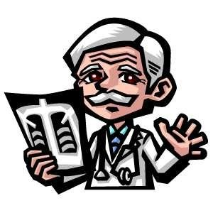
★社会不安障害（Social Anxiety Disorder）
大勢の人前で話そうとすると、
足がガクガク震えたり、声が震えてしまって
話どころではなくなってくるという症状がでてきます。
外見からすると、
「本当にこの人が緊張するの？」
というひとが社会不安障害で苦しんでいることがよくあります。
あがり症、社会不安障害、パニック障害は
素人では、見分けがつきにくいという難しいところがあります。
●キーワード
緊張することは悪いことではありません。
正常な社会性をもっている証でもあります。
★ライボヴィッツ社会不安スケール
社会不安障害の症状の判定や改善度などに
ライボヴィッツ社会不安スケール（ＬＳＡＳ）が使われます。
日本では、翻訳されたＬＳＡＳ- Ｊが使われることが多いです。
評価方法は、
表に従って答えていくという単純なものです。
総合計は１４４点になっています。
50 以上で
社会不安障害の疑いがあるとされています。
95 以上で
社会適応がかなり低下しているとみられます。
この後のページに載せましたので、一度、やってみてください。
なお、自己判断はあまりオススメできません。
あくまでも目安としてご利用ください。診断・確定は医師にしかできないです。
ＬＳＡＳ- Ｊ です。
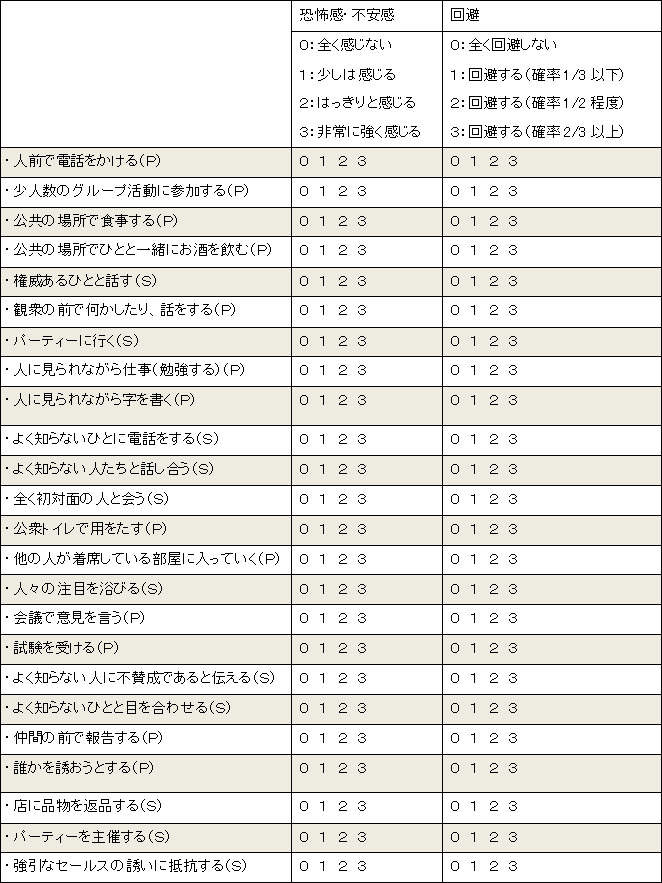
（「ＬＳＡＳ日本語版の信頼および妥当性の検討」朝倉聡ほか 精神医学44 より抜粋）
★パニックを経験する人たち
パニック発作を経験したことがある方は、
全人口の１割と言われています。
１億３千万人とすると、
１３００万人の方が、何らかの形で、
パニック発作を経験しています。
パニック発作がパニック障害へと進んでしまうひとは、
さらに、その10 人に１人と言われています。
およそ、１３０万人の方が、
パニック障害と類推することができます。
パニック発作の原因は、
様々ですが、ストレスが大きく関係していると考えられています。
パニック発作の症状であらわれる方もいれば、
肉体的な、
自律神経失調症（これは正式な病名ではありません）と呼ばれる状態や、
胃・十二指腸潰瘍、気管支ぜんそくなど
いわゆる「ストレス病」と呼ばれるものを発症される方もいます。
●キーワード
パニックはあなたの知らないところで、
たくさんの方が経験されています。
「なぜ、自分だけが・・」の発想は、
今すぐやめましょう。

★パニックと恐怖について
なぜ、これほど多くの人がパニック発作や恐怖症に悩んでいるのでしょうか？
パニック発作を繰り返すのでしょうか？
恐怖症が増大するのでしょうか？
パニックや恐怖を強く感じる人の共通点は、
心気症的傾向が強いということです。
この「心気症的傾向」とは、
自分のことばかりが気にかかるということです。
常にストレスを感じており（副交感神経よりも交感神経が優位）、
身体の機能の一つ一つをよりはっきり感じてしまうのです。
たとえば、心臓のドキドキする拍動が人よりも異常に思えてしまったり、
少し、立ちくらみをしたぐらいで、脳に重大な欠陥があるのではないかと疑ってしまうのです。
内科検診で、異常なしと言われれば、
それを信じましょう。
ドキドキは心臓病ではありません。
立ちくらみは、脳の重大な病気の予兆でも何でもないということをしっかりと理解することです。
（内科での診察・検査において異常なしとされたことが前提です）パニックと恐怖に苦しんでおられる人たちのもう一つの共通点があります。
それは、完璧主義です。
「いや、自分はいい加減なところもあるし、
全然、完璧主義なんかじゃないよ」という声が聞こえてきそうですが、
常に、こころと身体が正常に（この正常がやっかいものなのですが）
作動してほしい、
と思うこと自体が完璧主義なのです。
身体も心も常に、色々な刺激やストレスを受けています。
時折、誤作動するのは当たり前の話なのです。
少し、誤作動（息切れや不安感）を感じたら
どこか悪いんじゃないだろうか？ と考えるのが完璧主義です。
この「完璧」を求めるということ自体が、非現実的なのです。
人間はロボットではないのですから、
（ロボットも誤作動はします！！）
完璧であろうとすれば、するほど失望を繰り返すことになるでしょう。
この完璧主義が、パニックや恐怖心の情緒的側面の根底にあると、言いきる研究者さえいます。
パニックや恐怖心というのは、
逃げれば、必ず追いかけてくるという特性があります。
たとえば、
あなたが「こんなバカげたことを考えるのはやめよう」と心に誓ったとします。結果はどうでしょうか？
はい、以前にも増してその恐怖感があなたを苦しめることになるはずです。
必死になって、考えないように考えないようにすればするほど、
そのイヤな気分はあなたの考えを支配しだします。
もうひとつ、たとえ話をします。
わたしがあなたに
「赤いワニの事を考えないでください」とお願いしたら、どうでしょう？
あなたは、即座に「赤いワニ」を想像したと思います。
これは、何を意味するかというと、
必死になって考えまい、とすると
ほぼ確実にそのことを考えてしまうのです。
逆説的に言えば、
何かを覚えたいと思ったら、必死でわすれようと努力すればいいのです。
次に、お伝えしたいのが、
パニック発作や恐怖心と他の事を決して結び付けてはいけないということです。
パニック発作や恐怖症がひどくなって、神経症になるということはないのです、なぜなら、全く別の病気なのですから。ましてや、心臓病や脳の病気になんてなるはずがありません。
何度もいいますが、
これらは、全く異なる病気です。
関連性はないのです。
アメリカの精神科医リチャード・アンダーソン博士がおもしろいことを書いていました。
全く関係のない病気を気にもむ患者さんに次のような質問を投げかけたそうです。
「肺炎から肺がんになるのに、だいたいどれくらいの期間がかかると思いますか？」と。
患者さんは、一生懸命考えて、
「６か月」とか「３年」とか答えるそうです。
これは、非常におもしろい笑い話です。
なぜなら、肺炎と肺がんは全く異なる病気で、決してそのようにはならないからです。
これは、「象がキリンになるのに、どれくらいの期間がかかりますか？」という質問とたいして変わらない質問だからです。
●キーワード
心配のあまり、関連性のないものに
無理やりこじつけで関連性をもたせるのは、
非常に自虐的行為です。
１＋１＝２です。
決して、３や４にはなりません。
★予期不安から広場恐怖症へ
また、パニック発作が起こったらどうしようと、
常に心配しているために、パニック障害の患者さんの７割くらいは、広場恐怖症になってしまうと言われています。
パニック発作がいつ起こるか分からないために、発作が起きた時に、その場から逃げだしたり
助けを求めたりできない状況を避けるようになるのです。
例えば、
電車やバスなどの公共交通機関（もろ、わたしはこれでした）エレベーターや地下道などの閉鎖された空間車の運転中の渋滞や高速道路など
お客さんとの長い商談（これも若干あてはまっていたように記憶しています）
など
すぐに逃げ出せない状況を避けるようになってしまうのです。
●キーワード
すべてに立ち向かう必要はありません。
ですが、
「檻に入ったライオン」に噛まれる心配を
するのはやめましょう。
★広場恐怖も程度によっては当たり前
動物行動学者は、
ひとが一人で外に出た時に、
不安感を覚えるのは、
防衛反応として当然だといいます。
それは、私たち人間の祖先の頃まで遡るのですが、
このころは、狩猟時代の集団生活が当たり前でした。
当然です。
さまざまな外敵から自分を守るために、集団で行動をしていたのです。
その頃のＤＮＡがいまだに受け継がれていたとしても
なんら不思議なことではありません。
逃げ場所がない、
とふと思った時に不安感に襲われるのは、
なにも異常なことではないのです。
異常なことだと必要以上に不安がることが異常なのです。
●キーワード
不安感・恐怖感は私達が生活するうえでの
必要悪です。
これらがないと、赤ちゃんがストーブに平気で
手を触れるのと何ら変わりません。
★外出しなくても、オシャレする
強い不安感や恐怖症、パニック発作による予期不安におびえる方は徐々に、外出の頻度がさがっていくものです。
外出しないのだからと、
ノーメイクでジャージやパジャマで生活を送るようになるのです。
これは、悪循環の始まりです。
外出しなくても、
外出するときと同じように、
しっかりと着替えをして、オシャレをするのです。
これは、ハイヒール治療と呼ばれ、
オシャレをすることによって気分が変わり、
外出したい気持ちが少しずつでてくるのです。
行動療法を助けるためのひとつの案であり、効果も実証されています。
●キーワード
控え選手も練習をしています。
トップアーティスト以外も腕を磨いています。
準備８割本番２割は、なんにでもあてはまります。
★顕在化できない不安
心理学的には、不安の裏返しであるイライラが
顕在化してきているにもかかわらず、
イライラのみを自覚し、
不安を受け入れていないという事があります。
このような不安は、
様々な形に姿を変え、いろいろな違うあらわれ方をすることがあります。
イライラが続くようであれば、
先のページでご紹介しました「ＬＳＡＳ－Ｊ」
を試しにしてみてください。
このときの注意点ですが、くれぐれも自己判断しないということです。
表をしてみて、不安をおぼえたら、
最寄りの精神科医に相談することをお勧めします。
★健康的な不安と病的な不安
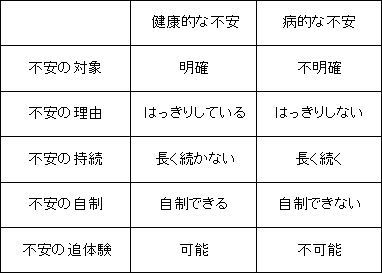
（「社会不安障害・パニック障害がわかる本」より一部抜粋）
●キーワード
目安は目安。
それ以上でも、それ以下でもありません。
★パニックの語源
パニック（panic ）は、ギリシア神話の牧羊神パン（pan ）から
きていると言われています。
パンは、川や森を支配し、さまざまな家畜の守護神として崇拝されていました。
パンは上半身が人の姿で、ヒゲにおおわれた顔と、ヤギのような耳と角をもち、
下半身は、ヤギの体にひづめがついた足をもっていました。
パンの容姿はみにくかったのですが、普段は陽気で歌を愛し、人間にも友好的だったとされています。
パンはよくうたた寝をしていたのですが、
そのうたた寝を妨げられると怒り狂って、異常な声を張り上げたそうです。
その異常な声を聞いた人間や家畜は、
みんな恐怖のあまり死んでしまったというところから、
突然の恐怖をパニックと呼ぶようになったと言われています。
●キーワード
陽気に友好的に。
怒りの感情を弱めていくことです。
★パニック障害のセルフチェック
全てが「はい」であれば、
現在、パニック障害の可能性がありますので、最寄りの精神科医にご相談ください。
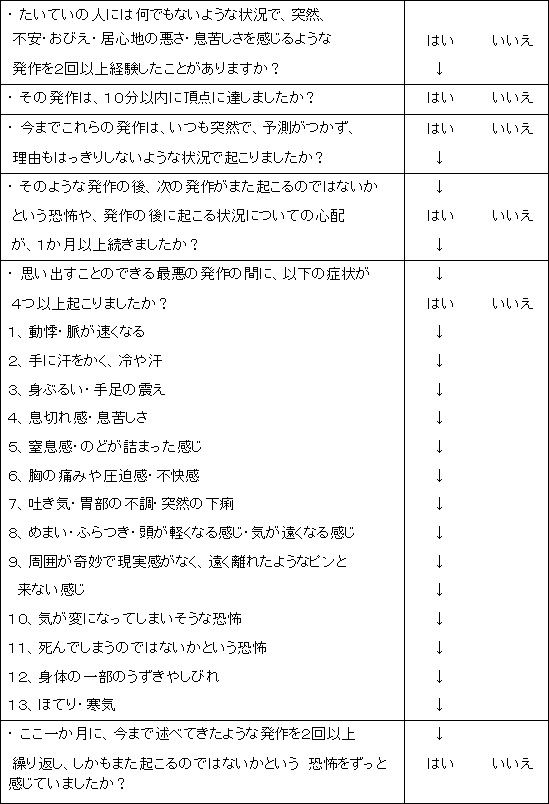
（「 M.I.N.I. 精神疾患簡易構造化面接法日本語版」星和書店 Ｄシーハン、
Ｙルクルビュ著、大坪天平ら訳 より引用）
★責めず、焦らず、ゆっくりと
パニック障害や恐怖症は、慢性疾患です。
慢性の病気なので、改善・克服するには
ある程度の時間がかかるので、
焦らず、しっくりと治療していくことが重要です。
なかなか成果が表れず、焦ってしまうお気持ちもわかりますが、
じっくりと取り組む必要があります。
必ず、よくなるので、即効性を求めないことです。
●キーワード
物事には時間が必要です。
気楽に焦らず、ゆっくり、たゆまず。
ゆるやかで、やさしい継続性。
★不安に取り囲まれた現代
人は誰でも生きていくなかで、不安になることがあります。
その時に、不安とどのように向き合うかで、私たちの人生が大きく違ってきます。
今の世の中は、変化が早くついていくのが大変で、
多くの人にとって不安な気持ちになる要素が非常に多いと言えます。
不安な気持ちになる要素が非常に多い事と不安な気持ちになってしまうのは、
イコールではないということを覚えておいてください。
自分自身や周りのだれかが、「発表が苦痛」「人前に出ると緊張する」
「常にマイナス思考である」そういった悩みがあるときに
対処する方法を知っているのと知らないのとでは、
人生の選択において大きく開きがでてきます。
対処する方法を、今現在、ご存じなくても
何も心配する必要はありません。
これから順をおって、お伝えしていきます。
●キーワード
不安な気持ちになる要素と
不安な気持ちになるのは別次元
★胃酸で溶けてしまわないために
人は常に自分に向けられるものではありません。
それは、体でもこころでも同じです。
私たち人間は、（人間に限らず）
物を食べて、胃で消化し、一部は胃で栄養が吸収され、各器官で分別されます。
例えばの話ですが、
もし、胃が自分にその働きを向けていたらどうなるでしょうか？
そうです、胃酸で、胃自体を溶かしてしまいます。
自分で自分を痛めつける結果となるのです。
人のこころもおなじです。
あまりにも、自分に関心を向け過ぎると、どうなるでしょうか？
絶えず反省する、絶えず後悔する、絶えず自己分析する、
胃の場合と同じように自分を痛めつけるだけなのです。
興味深いお話をご紹介します。
あるバトミントンプレイヤーの話です。
仮に彼をＡ選手とします。
Ａ選手の実力は、どうみても２回戦どまりの実力しかありません。
しかし、彼は大会になるといつも上位に食い込むのです。
その秘密は、長い間、ベールにつつまれていたのですが、ある優勝インタビューのときに、
とんでもない秘策が彼の口からでたのです。
「あなたは、いつも上位に食い込みますね」
「ありがとうございます。」
「失礼ではありますが、あなたにそのような実力がないとの声が多くきかれるの
ですが、何か秘策でもあるのでしょうか？」
「秘策ですか？ないですね。」
「あなたは、対戦相手にいつも試合前に話かけていますが、
何を話されているのですか？」
「あー。あれですか。
『あなたはどちらの足から歩き出すのですか？』
と聞いています。
強い選手のマネをしたいので。」
・
・
・
・
・
Ａ選手は心理戦で勝利していたのです。
対戦相手は、Ａ選手に質問されたことによって、
自分に対して、強く関心をもってしまったのです。
絶え間なく、自分を見つめすぎると、緊張し、本来の自分ではなくなってしまうという
おもしろいエピソードですね。
●キーワード
ジコチュー（自己中心的）、ナルシストに
なっていませんか？
世間は、あなたが思っているより、
あなたに関心がありません。
★ひとつのことにのみフォーカスしてみる
不安感の強い人や、
恐怖症の方には様々な共通点があるのですが、そのひとつに、
一度にすべてのことをやろうとしてしまうことです。
このすべてのこと、ですが、
過去・現在・未来のすべての事に同時に意識がいってしまっているひとが非常に多いことがわかります。
たとえば、こういうことです。
現在、しようとしていることに集中すればいいのに、
過去の失敗やネガティブ情報が頭をよぎり、現在とそれを結びつけ、
未来の失敗を予測してしまい、
頭がいっぱいになってしまうのです。
効率的にものごとを処理するために、
同時並行で処理するのは問題ありません。
やめるべきことは、現在なら現在、過去なら過去、未来なら未来、
にフォーカスして処理すべきです。
これを意識するだけで、
恐怖心をへらすことができます。
●キーワード
世の中にこうでなければならない、
という事は存在しない。
人間がいなくても、地球は周り、
テルテル坊主をつくってもつくらなくても雨は降り、雨はやむ。
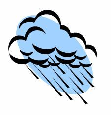
★自分自身の解放
怒りや覚えておかなければならない事が多いと
神経は休まる間がなく、非常なストレスを受け続けます。
実践編でも出てきますが、
許すために、受け入れることからはじめましょう。
こころのキャパシティを増やすことは可能ですが、
広がるまではこぼれ続けます。
キャパシティを広げる努力を少しずつしながらも、
こぼれないようにもしましょう。
覚えていなくてもいい
怒らなくていい
ものにこだわっているので、こころのコップからこぼれ落ちて、結果、辛い思いをしてしまうのです。
自分や他人の過ちや失敗を許しましょう。
早くよくならない自分を責めるのをやめましょう。こころの傷や間違い、他人を許すには
時間が必要な場合も多くあります。
焦らずに、ゆっくりと許す方向で進んでいきましょう。
ポイントは、他人や自分を許す気持ちを持っていれば、今すぐではなくても、
少しずつ、少しずつ
寛大になっていけるということです。
焦らず、
受け入れ、許す方向で進んでいきましょう。
●キーワード
思いだしてみてください。
怒りや不満が、あなたの問題を解決したことが
ありますか？
★繰り返しお読みください
何度か繰り返して読むことによって、
使い込んだ道具がてのひらになじむように
ものの考え方や、行動習慣が自分自身のものになってきます。
スポーツ選手や音楽家は
身体が覚えるまで何度も練習します、そうすることによって、
本番では、意識することなく、いいパフォーマンスができるのです。
●キーワード
器械的にこなしてください。
笑顔も筋肉の働きの成果です、
筋肉が動くので、笑顔がつくれるのです。
どんどんいい筋肉をつけましょう。
★失敗は成功の素？
ビジネス書や自己啓発書には、
よく「恥ずかしい体験や失敗は成功へのコヤシである」などと書かれていますが、
上がり症、過緊張、マイナス思考の方にとって、
「恥をかく」という行為にどうしようもなくこだわってしまうのです。
「恥が怖い」とは、
つまり、自分自身の評価が落ちることへの予期不安であったり、
過去の失敗体験を想起して、その再現を恐れるのです。
上がり症、過緊張、マイナス思考はいくら失敗の場数を踏んだところで、傷口をひろげるだけです。
あえて失敗に飛び込むのはやめましょう。
まず、自分自身を大切にすることからはじめてください。
●キーワード
自分を追い詰めないこと。
追い詰めることと、逃げることは違います。
不安の要素を見つめても、無理に克服しよう
としないこと。
★努力が足りない？ 生まれつき？
多くのひとは、極度の上がり症、過緊張、マイナス思考を
自らの努力や、気合でなんとか克服できると思っています。
マイナス思考は気持ちの持ちようだ
上がり症は努力が足りないからだ
と周囲から聞かされ続けるうち、自分の努力が足りないのだとさらなる自己欺瞞に陥っていくのです。
あなたの気持ちを相手が１００ ％理解できないように、相手もあなたの気持ちを１００ ％理解できないのです。
１００ ％理解できないものに対して、
努力で切り抜けようということ自体、
非常に矛盾したことだと気づく必要があります。
●キーワード
努力・根性はいまどき、体育会でもはやらない。
世の中に１００ ％絶対、完璧はありえないということ
をしっかりと知る。
★自分に対してフェアになる
不安感や恐怖心がこころにあり、
外出ができない、
人前で話す事ができない、
そのような自分自身を「弱い人間」だとか
「意思が弱い人間」だと思っていませんか？
それは、まったくもって間違った認識です。
あなたは、
弱いのではなくて、こころの使い方を
間違っているだけなのです。
例えば、野球をするのに、
サッカーボールを用意しているようなものです。
間違った道具を揃えても、正しくはじめることはできません。
人間が行動するには、動機づけが必要です。
電車に乗るのが苦手な人がいたとします。
（私もこのうちのひとりだったのですが。）
電車に乗るときだけ、好きな音楽を聴けるようにするとかはどうでしょう。
自宅のオーディオでは、好きな音楽をかけない、というルールをつくるのです。
（私の場合は、氷室京介でした）
好きな音楽を聴きたい！！
でも、電車でしか聞くことができないのです。
好きな音楽を聴くために電車に乗るのです。
これが、いわゆる動機づけです。
あなたが弱いのではなく、
動機づけが小さいか、間違っていないかをチェックしてみましょう。
動機づけは、ひとそれぞれです。
人と比べるものではありません。
前進するためのポイントのひとつがここに隠されています。
人は、えてして、好むと好まざるに関係なく、
他人と自分を比較してしまっています。
これは、非常におかしなことです。
育った環境も、今現在おかれている環境も違う他人と自分を
比べることほど、ナンセンスなことはありません。
どうしても、何かと比べたいのであれば、
過去のあなたと比べてください。
必ず、前進しています。
いま、こうして、このテキストを読んでいる。
前進するために。
去年のあなたは、先月のあなたは読んでいませんでした。
少しずつ進歩しているのです。
●キーワード
比べる、較べる、クラベル。
何をくらべるのでしょうか？
そうです、くらべる必要は何もないのです。
便宜上、較べる・比べるがあるだけす。
「くらべる」は「くらしめる」です。
今すぐ、くらべるのをやめましょう。
★パニック発作はどのようにして起こるのか？
パニック障害は以前には、独立した病気としてではなく、
さまざまな神経症を混ぜ合わせた
「不安神経症」のひとつとして扱われていました。
「不安神経症」は、心理的・精神的要素が主な原因で
心因性が原因であるとされるのが一般的でした。
心因性が原因であるとされていただけに、治療現場でも
・気の持ちよう
・トラウマの除去
・育った環境
などからのアプローチによるものでした。
しかし、現在では、多くの研究の成果でだいぶ解明されてきており、心因性のものというよりも、
脳機能の異常によって引き起こされる
という考え方が主流になってきました。
脳は、様々な部位に分けることができるのですが、
「脳幹」と呼ばれる部分に、「青班核」（せきはんかく）という部位があります。
「青班核」は、身体にとって危険な状況になったときに、
ノルアドレナリンという神経伝達物質を出して、危険を知らせる役目を果たしています。
パニック発作を起こす人は、
この青班核が委縮していたり、
過敏に反応してしまうなどの異常があり、
ノルアドレナリンの分泌のバランスが崩れています。
また、不安感情を司っているセロトニンの異常も、
パニック発作の誘発要因と考えられています。
ノルアドレナリンやセロトニンの代謝異常により、
何度もパニック発作を繰り返していると、
脳の学習中枢である「大脳辺縁系」が、
不安感情とパニック発作を
関連付けて記憶してしまうのです。
その結果、
不安感を感じると実際にパニック発作が起こってしまうという悪循環になってしまうのです。
●キーワード
今は少しバランスを崩しているだけ。
今は、です。
★考え方のクセ
同じストレスを受けてもなんともない人と、相当なダメージを受ける人がいますが、何がちがうのでしょうか？
それはその人によって「認知」の仕方がおおきくかかわっているのです。
「認知」とは物事の捉え方の事です。
この認知のクセによって人によって受けるストレスの度合いが変ってくるのです。
「認知」を分解して考えてみたいと思います。
認知には、「思考」と「感情」のふたつがあります。
つまり、思考（考え）が浮かんで、それに従って、感情が引き出されます。
「感情」が湧くには、思考が影響していることが理解していただけると思います。
「思考」について、もう少しみてみましょう。
私たちは何か出来事があると、なんらかの考えが瞬間的に、自動的に頭に思い浮かびます。
これを自動思考と呼びます。
通常、自動思考は、瞬間的に頭に浮かぶわけですから、自分でもあまり意識していません。
口にだすこともないので、自分の思考が他人と違っているなどと考えません。
しかし、実際、この自動思考はひとによってかなりの違いがあるのです。
ではどうして、自動思考に違いがあるのでしょうか？
それは、ひとによって、「根付いてしまっている信念」があるからだとかんがえられています。
なにをやってもうまくいかない、という消極的な自動思考みんなにバカにされるんじゃないか、という防衛的な自動思考これらはさまざまな要因で形成されます。
この自動思考はいつも同じパターンで作動しています。このパターンのことを「認知のくせ」と呼んでいます。
たとえば、車を運転していて、後ろからクラクションをならされたときに
「うるさいな！わかってるよ！」と反応する人もいれば
「あああ、自分はなんてどんくさいんだろう」
と考える人もいるということです。
例えば、不安な感情が生まれるとします。
その時、
身体は変化する可能性は高いと考えられます。呼吸があらくなったり、心臓がドキドキしたり
集中力が落ちたり、胃が痛くなったりすると思います。
身体的な変化だけはありません。
行動にも影響を与えます。
上司を避けるようになるかもしれませんし、試験を放棄するかもしれない同じ電車に乗らなくなるかもしれません。
このように、思考・感情は、身体の反応や行動にも影響をあたえるのです、
これらはバラバラに存在しているのではなく、密接に関係しあっているのです。
●キーワード
人はそれぞれ、認知のクセをもっています。
好ましくない思考が頭をよぎったら、
別のことを思考するクセをつけましょう。
★自身の「自動思考」を疑う
ネガティブやマイナスの自動思考のくせのある方は
それが自分の誤った思い込みの可能性がある、ということを認識することからはじめるのが重要です。
瞬間的に湧いてくる、自動思考は矯正するまではまさに止められません。
がしかし、
その後に
「これは自分の思い込みの可能性がある」と思いなおすことが重要です。
意識したいのは、別の考え方を探す習慣をつけるということです。
慣れるまでは、予め、答えや別の考え方を紙に書いておき
それを見なおすというのも有効な手段です。
常に、考え方、物事の捉え方はたくさんあるのだということを自覚する必要があります。
意識的にです。
大事なのでもう一度、書きます、意識的にです。
●キーワード
好ましくない自動思考に対して、
あらかじめ、それに対する別の考え方を
紙に書き、いつでも見ることができるようにしておく。
★脳のパターン化
脳の特性として、ある行動をパターン化しようとするというものがあります。
つまり、一度ある回路が形成されると
次もその回路を使って思考するという傾向があります。
ワンパターン行動を繰り返していると、脳の特定部分だけ働かせることになるので、他の部分は出番がないままになってしまうのです。
パニック・恐怖・不安感に陥っている人は、
この好ましくないワンパターン行動になっています。
すると他の部分の機能はますます低下していきます。
しかし、この特性は欠点ばかりではありません。
通勤や通学、通いなれた商店街などは
なにも考えずに歩いていくことができます。
この特性を利用して、成功したイメージをインプットすると、脳は成功に向かって、働きます。
●キーワード
回路は破壊することができます。
好ましくない思考が浮かんだら、違う回路を
使ってみようと意識する。
（意識するだけでいいです。）
★恐怖心やパニックのコントロールについて
パニックや極度の恐怖感を感じたりする人は、
自分で自分をコントロールできなくなることが
非常に恐ろしく感じています。
「焦ってはいけない」と自分に言い聞かせたりしますが、
意志の力では、自律神経系をコントロールすることはできません。
＊注： 自律神経は、脳の働きから、自律して作動しているので、
自律神経とよばれていることからもわかっていただけるかと
思います。
ムキになればなるほど、最悪なパターンに陥ってしまいます。
では、どうすれば・・・
その特性を生かしてみるのです。
無理に恐怖心を抑え込もうとすると「負のスパイラル」に、はまりこみます。
では、恐怖心を呼び込もうとすれば、どうなるでしょうか？
ここで、ある男性のやり方をご紹介します。
彼は車の運転中に、以前に恐怖のあまりパニックを起こしてしまったことがありました。
それ以来、その道は一度も通っていませんでした。
しかし、ある時かれは、その道をとおり
車から降りて、こう叫んだそうです。
「さあ、恐怖心よ、パニック発作よ、よく聞け。
私はここにいる。
いつでも私を捕まえに来て、パニックを起こさせてみろ！」
結果、何も起こりませんでした。
また、ある別の女性です。
その女性は、嫌な事があると顔をしかめるクセがありました。
その「しかめっ面」をやめようとすれば、するほど
顔は意志に反して、余計に顔をこわばらせてしまうということに悩んでいました。
その女性は、自ら何もない状態のときに
「しかめっ面」をつくろうとしましたが、嫌な事がないので、
「しかめっ面」をつくることができず、
結局、その日をさかいに、そのクセは治ったという事例があります。
●キーワード
自律神経の特性を知り、それを逆手にとるのもそれもまた有用です。
★右脳の解放
これまで、認知のクセや自動思考について書いてきましたが、
これらは一般に、左脳を使った顕在意識によるものだとされています。
左脳が好ましくない思考を生みだしているので、右脳の力を借りるのです。
右脳を使うには、普段使っている左脳主体の顕在意識を思考停止もしくは、それに近い状態にもっていくのがよいとされています。
左脳主体の顕在意識は、論理思考を司っているので、その特性を突くのである。
たとえば、本を反対から読むのです。
通常、縦書きの本であれば、右上から読んでいきますが、左下から、声に出して音読するのです。
もちろん意味などわかりません。
それでもかまわず、15 分ほど、音読をつづけていると左脳が混乱しだし、思考不能状態に近付いていきます。
この思考不能状態に左脳がなると、
好ましくない自動思考もできなくなってしまうのです。
●キーワード
好ましくない思考が止められないときは、
本を逆さから読むなどして、
左脳を混乱させましょう。
★怒りを鎮める方法
ストップ法
心の中で、「ストップ」「待て！」などと言います。
声に出せる状況であれば、実際に声にだすのもいい方法です。
テンカウント法
文字通り、心の中で 一 から 十まで数えます。
ノルアドレナリンが放出されてから吸収されるまで６秒かかると言われます。
怒ったときは、その場を外し、それが難しい場合は一歩下がって10 数えよです。昔から言われることですが、科学的にも根拠があったことなのです。
文章化法
自分の考えや、出来事のアウトラインを全て紙に書き出します。
そして、それを眺めてくしゃくしゃにするのです。
気持もくしゃくしゃの紙のようにすっきりするでしょう。
距離法
物理的に離れるのです。
「近くにいるだけで不愉快だ」ということがあると思います。
物理的に離れることによって、怒りとの距離も離れることができます。
寝る
疲れは怒りを増大させるので、とにかく一晩ぐっすりと寝ます。
身体の疲れがとれると翌朝、何に怒りを覚えていたのかさえ、分からなくなっている場合も多々あります。
●キーワード
怒りを抑えられないのは、
自己コントロールの失敗ととらえるべし。
怒りはパワーを必要としますので、
自分はパワフルなのだと褒めるのも時には有用。
★堂々めぐりの思考を止める
堂々めぐりの思考を止めるには、
悩むための時間をつくることです。
考えるような、考えないような曖昧な時間を過ごしているときに頭の中で中途半端に思考が繰り返されるので、あえて悩む時間を作り、
しっかりと問題と向き合う時間をつくります。
そのときは、必ず、テレビなどを消して、その悩み事にのみ集中します。
それらをノートに書いていき整理していきます。
ノートに書き出した悩み事や、問題点を解決できれば解決するにこしたことはないのですが、
解決できなくても結構です。
脳の特性からみても、
考えるような、考えないような曖昧な状態の自動思考は潜在意識に入りやすいので、それを阻止するために書き出すのです。
あえて、悩みだけにフォーカスすることが目的なので、他のことは一切考えず、
時間を区切って、しっかりと悩みと向き合う時間をつくってください。
●キーワード
悩むことは悪いことではない。
他の事を考えながら、悩むので、いつまでたっても
頭から離れない。
第二章
★薬物療法
薬物を使わずに、
治療をしたいという方は、結構な割合でいらっしゃいますが、
適切に行えば、高い改善効果が認められます。
そこで、重要なのが、
薬の正しい選択になります。
パニック障害・社会不安障害にあまり効果のない抗不安薬や抗うつ薬を何年も服用しておられる方もいらっしゃいます。
（理由があり、併用していることももちろんあります、
早とちりせず、続きをお読みください）
主治医としっかりと相談してみましょう。
また、処方された薬を自己判断で調節している方も
よくおられますが、（私も実はそうだったのですが・・）
パニック障害が治らないどころか、予期不安や広場恐怖は言うに及ばず、
症状が進んで、うつ状態を招くことも多々見受けられます。
（わたしがいい例です。）
薬は、組み合わせて処方されることが一般的です。
処方される薬にも様々な種類がありますが、
精神機能に作用する向精神薬と呼ばれるものは、
抗精神病薬、抗うつ薬、抗不安薬、抗そう薬、精神刺激薬などがあります。これらのうち、
パニック障害では、
抗うつ薬（ＳＳＲＩ ・三環系・四環系）とベンゾジアゼピン系抗不安薬の組み合わせが多く見られます。
●キーワード
薬について学ぶことはもちろんいいことです。
気をつけなければいけないのは、
あなたは薬についてはどこまでいっても素人だということを自覚することです。
★抗うつ薬の薬効
抗うつ薬には、ＳＳＲＩ、三環系、四環系があります。
ＳＳＲＩ―― 選択的セロトニン再取り込み阻害薬
（Selective Serotonin Reuptake Inhibitor
）
第三世代抗うつ薬と呼ばれています。
安全性の向上を最大の利点として売り出されました。
パニックの抑制に非常に高い効果があるにも限らず、
脅迫性障害や過食などを抑制するにも効果があると言われています。
のどの渇き、かすみ目、動悸やめまい、便秘などの抗コリン作用による副作用が少ないです。
循環器系や心臓への影響も少ないため、高齢者にも処方しやすい薬です。
このように、安全性や効果が高い一方、
薬の効果が表れるまでに４～６週間かかるという欠点があります。
もう一つの弱点は、人によっては、
吐き気やむかつきなどの消化器系に不快感を覚える方もいます。
（私は、胃が痛くなりました）
ＳＮＲＩ―― セロトニン＆ノルアドレナリン再取り込み阻害薬
（Selective Serotonin
＆Noradrenaline Reuptake Inhibitor
）
ＳＳＲＩに続いて、１９９９年に認可された第四世代抗うつ薬です。
これは、セロトニンとノルアドレナリンの両方に作用します。
代表的な薬は、トレドミンなどがよく知られています。
三環系抗うつ薬
脳の青斑核のノルアドレナリンを抑制すると考えられており、
パニックを抑えるのに非常に効果的であるが、
抗コリン作用（のどの渇きや、めまい、便秘）や
多量に服用すると心臓の機能低下などの副作用も指摘されているため、
現在では、第一選択肢から除かれているようです。
四環系抗うつ薬
これは、三環系抗うつ薬の副作用を少なくしたバージョンとの認識でいいかと思います。
●キーワード
薬の作用・効能はおおまかにしっかり公表されていますが、個々人がちがうように、
その作用の仕方にも違いがあります。
しっかりと専門家と相談しましょう。
★抗不安薬
現在のパニック発作に対する
第一選択肢となっているＳＳＲＩやＳＮＲＩなどを
使う場合に薬が効き始めるまでの４～６週間ほど時間を要するため抗不安薬を併用することが非常に多いです。
パニックの治療によく使われる抗不安薬は、
ベンゾジアゼピン系です。
抗不安薬は、
予期不安に有効とされています。
これは、大脳辺縁系のベンゾジアゼピン受容体に結合して作用します。
ベンゾジアゼピン系の共通の作用
- １．抗不安作用
- ２．鎮静作用
- ３．睡眠導入作用
- ４．筋弛緩作用
- ５．抗けいれん作用
- ６．抗ストレス作用
ベンゾジアゼピン系は、効果がでるのが早い反面、依存性がつきやすいと言われています。
（アルコール依存症や、覚せい剤などの薬物依存症とは、異なるので、
過度の心配はいりません）
また、眠気などの副作用があります。
（もちろん個人差がございます）
また、アルコールとは、お互いの作用を強める特性があるので、注意が必要です。
（わたしは、医師や薬剤師の忠告を聞かず、
アルコールをよく飲んでいたので、
記憶を失くすという失態をたくさんしてしまいました）
●キーワード
服薬中の医師や薬剤師の注意事項は、絶対に尊守です。
自己判断・自己調整は、改善を遅らせるだけです。
★パニック治療に使われるベンゾジアゼピン系抗不安薬
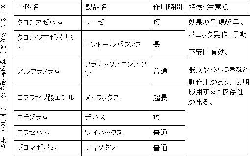
薬に関しては、
わたしの経験を書かせていただきました。
私は医師でも、薬剤師でもございませんので、詳しくは、医師にご相談ください。
薬についてのサポートは、
薬事法に抵触しますので、お答えきませんので、ご了承ください。
★平常心とセロトニン神経
パニックや不安障害には脳内物質のセロトニン神経が大きく関わっていることが最近の脳科学でわかっています。
セロトニン神経の障害が、パニックに関係するのは間違いないので、
ＳＳＲＩがよく効きます。
パニックの直接誘因は、危機管理センターの役割を担うノルアドレナリンなのですが、
セロトニン神経は、このノルアドレナリン神経の働きに対してブレーキをかける役割をはたしています。
生命が危機に直面したときには、
ノルアドレナリン神経は大きな役目を果たしますが大したことではないときには、
平然と、受け流す必要があります。
なんらかの理由でセロトニン神経が弱ると
危機管理センターであるノルアドレナリン神経への抑制がうまく働かなくなってしまいます。
その結果、ちょっとしたことで
大騒ぎしてしまうことになります。
私が、セロトニン神経にこだわるのは、セロトニン神経がよわまることによって、
脳内にある海馬での記憶情報処理機能に悪影響を与えるからです。
本題からそれますので、ここでは詳しくは書きませんが、セロトニン神経が弱ると、気にする必要のない情報までも記憶にとどめてしまうということが、起こるのです、
これが原因で、マイナス思考や、上がり症、失敗を恐れた過緊張などを起こすのです。
逆にセロトニン神経が鍛えられると、
ちょっとやそっとのことでは、動じなくなるのです。
またセロトニン神経のおもしろい特徴で、
一か所に集中すると、その活動を停止するということです。
どういうことかといいますと、
ゴルフなどのここ一番というときや、ここ一番の発言のときには、
ものすごいプレッシャーと集中力が求められます。
こういう集中した状態になるとセロトニン神経は
一時的に活動を停止するのです。
その結果、逆に緊張してしまい、うまくいかないということに
なる、というのはみなさまも経験済みだと思います。
つまり、集中しすぎない、というのがセロトニン神経を正常に働かせ、
緊張せずに物事をすすめることができるということになります。
●キーワード
ひとつの物事に、集中・固執しすぎない。
集中力散漫は悪ではない。
一点集中で、リラックスはできない。
★セロトニン神経
先ほど出た、セロトニン神経について
少し触れてみたいと思います。
セロトニン神経とは、ノルアドレナリン神経やドーパミン神経と共に脳幹にあります。
うつ病や、社会不安障害、極度の上がり症がセロトニン神経の機能障害が原因で起こることはよく知られています。
それらの障害の治療の一環として、ＳＳＲＩ（選択的セロトニン再取り込み阻害薬）
を使用するのをみても明らかです。
セロトニン神経は抗重力筋の緊張を高める役目も果たしています。
抗重力筋の緊張が高まれば、背筋がピンと伸び、顔つきが締まります。
逆に、うつ状態のように、セロトニン神経の活動が弱ると
背筋が曲がり、眼もとに力がなくなり、顔にはりがありません。
●キーワード
気持ちが、下向き・後ろ向きになったときは
意識的に背筋を伸ばし、口元をキっと締めましょう。
★セロトニンの分泌と分布
人間の脳は、他の動物と比べて、
大脳皮質が発達しているので、
複雑な思考などをすることができます。
大脳皮質は、脳の一番外側を覆っており、主に言語と知能を司っています。
セロトニンは大脳皮質の縫線核というところから分泌されており、
抑制と覚醒の両方の状態をコントールしています。
セロトニンは脳内だけに存在しているのではありません。
それどころか、
脳内にあるセロトニンは全体の５％程度だと言われています。
残りはどこにあるのでしょう？
90 ％は、腸内にあり、残る５％は、血液中の血小板の中にあります。
そこで、血液凝固作用などの働きをしています。
この90 ％のセロトニンがある腸に刺激を与えることは非常に有効です。
腰をひねるなどの運動です。
腰回りには、腹筋、背筋、広背筋など大きな筋肉を大きく、ゆっくり動かせば、
セロトニン神経によい影響を与えることができます。
★セロトニンはあらゆる動物にある
セロトニンは全ての動物の中にあるというのが、
今までの研究結果でわかっています。
歩行や呼吸、咀嚼など生命を司る重要な動きに関係しています。
ですので、
慢性的な、セロトニン不足になると、
姿勢が悪くなったり、固いものが食べられなくなったり、
表情が乏しくなったりするのです。
セロトニンは覚醒をつかさどっているので、
体内時計の調整にも関係しているので、
寝起きが悪いひとは、
低血圧だけが原因ではなく、セロトニンが不足気味だという可能性もあります。
★早起きの効用
お年寄りはみな早起きです。
これは、自己防衛本能が働いて早く起きるという説が有力です。
大半のうつ病の方が
朝起きられないというのをみても
早起きをするメリットは
計り知れないものがあります。
二五〇〇 ルクス以上の光を浴びると
セロトニン神経が活性化されるというのも確認されています。
電灯光は 一〇〇～二五〇 ルクスぐらいですので、朝起きたら、太陽光を浴びることを
お勧めします。（30 分以内くらいが理想です、
それ以上浴びると逆にセロトニン神経は抑制へと向かいます。）
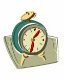
●キーワード
少し早起きして、太陽光を浴びるようにしよう。
★姿勢を正す効用例
脳性マヒの重度の患者さんのリハビリの時に、
寝たきりの患者さんに座る姿勢をとっていただき、補助のかたがパッと手を離すと、眼がパッチリと開き、左右へ首を動かそうとされるというのは有名な話です。
背筋を伸ばした姿勢を維持するのは、堂々とみえるだけの
見た目だけのものではなく、
身体の中にみなぎっているパワーをしっかりと発揮するための
補助と考えられます。
●キーワード
自信がなくても、背筋だけは伸ばすようにしよう。
背筋を伸ばすことを意識することによって、
一点集中を排除することにもつながります。
★セロトニン神経の鍛え方
薬を使わずにセロトニン神経を鍛える方法はたくさんあります。
その第一は、セロトニン神経はリズム運動によって活性化されるというおもしろい特徴を利用する方法です。
ここで重要なのは、意識的なリズム運動であるということです。
リズム運動といっても多種多様なものがありますが、どうようなものでも結構です。
ウォーキング、ジョギング、マラソン、水泳などが代表的なものでしょう。
あと、呼吸のリズム運動として、ヨガの呼吸法や気功法、太極拳なども含まれます。
そのほかでは、咀嚼のリズム運動もあります。
大リーガーの選手が、チューイングガムを噛むのも、心理的効果を期待しているのです。
脳科学の研究では、これらの運動を90 日継続することによってセロトニン神経が活性化することが実証されています。
私は、ジョギングを選択したのですが、驚くことに、本当に３か月後には、
ＳＳＲＩがいらなくなりました。
＊有酸素運動の有効性
アメリカのデューク大医学部のジャームス・ブルメンサル教授が「アーカイブ・オブ・インターナルメディスン」に
「規則的なエクササイズが抗うつ薬ＳＳＲＩと同じ効果がある」と発表。
●キーワード
二〇分以上 六〇分未満のリズム運動を
九〇日以上継続して行おう。
（無理は禁物です。体調には十分留意して下さい）
★セロトニン神経の鍛え方 ２
早起きの効用のところでも書きましたが、
光を浴びると、セロトニン濃度は上昇します。
がその反面、１時間すると、活性から、抑制へと転化するという実験結果があるので、太陽の光を浴びるのは、
１時間未満にするのが効果的というのが、おわかりいただけると思います。
太陽の光と書きましたが、電灯の光は 一〇〇～二〇〇 ルクス程度です。
セロトニン神経を活性化するには、２５００ 以上の照度が必要とされていますので、それ以上である、太陽の光を浴びる必要があるのです。
また、太陽光を浴びる以外にも、
食事からセロトニンを増やす方法があります。
セロトニン合成の材料は、トリプトファンです。
トリプトファンは必須アミノ酸であり体内でつくることができませんので、
多く含まれる食品を摂取しましょう。
バナナや、納豆などの大豆製品、チーズなどの乳製品です。
以上を意識的に摂取することによって、
セロトニン合成を活性化することができます。
●キーワード
バナナや大豆製品、乳製品を摂取するよう
心がけましょう。
（しかし、バランスのとれた食事が基本です。）
★乳酸とセロトニン神経
生活習慣でセロトニン神経は弱ってしまいます。
太陽の光を30 分以上浴びない昼夜逆転の生活、リズム運動を含む運動不足、などで
セロトニン神経は弱ります。
それ以外でも
脳の疲労によってセロトニン神経は弱ります。
これは、動物実験でも実証されていますが、
脳に乳酸がたまるとパニックが誘発されます。
身体の各細胞は、弱アルカリ性に保たれていますが少しでも酸性にシフトすると
細胞や臓器はとても影響を受けてしまうのです。
乳酸を除去するには、一番には
休息をとることです。
次にストレッチなどの軽い全身運動によって、
乳酸を分解することができます。
●キーワード
疲れをためないようにしましょう。
休息とサボリは全く別物です。
軽いストレッチを習慣化しよう。
★二つの神経系
神経系は大きく分けて、二つあります。
自律神経系と随意神経系です。
随意神経系は、あなたが直接身体をコントロールするときなど時に働きます。
例えば、手足を動かしたり、目や頭をグルリと回すなど、
意識的にコントロールすることが可能です。
反して、
自律神経系は、交感神経と副交感神経に分かれるのですが、いずれも自分ではコントロールが不可能です。
言葉のイメージとして、交感神経の方が、身体に優しい印象を受けますが実際はその逆です。
交感神経は、怒ったり、恐怖感を感じたりした時に刺激されます。
一方、副交感神経は気持ちを鎮めたり、交感神経を抑制したりする役目を担っています。
●キーワード
神経には、自分の意思でコントロールできる
神経系もあり、コントロールできない神経系
もあることを知っておりましょう。
★喫煙と不安感について
もし、あなたがたばこを吸っているなら、
たばこは、リラックスにとても重要だと考えていることでしょう。
しかし、たばこに含有されているニコチンは、交感神経を刺激します。
交感神経が刺激されることによって、
恐怖感を感じたり、逃げだしたくなる気持ちが強くなります。
また、単糖類を摂取したときと同じように、
急激な血糖値の上昇と下降を招きます。
この急激な上昇と下降により、
さらに不安感は増していくのです。
喫煙することによる弊害は他にもあります。
普通に考えて、
通常の呼吸よりも、酸素の摂取量が減ってしまいます。
酸素不足が、パニックに似た状況を起こす原因になるのは、すでにお伝えしたとおりです。
●キーワード
たばこは嗜好品です。
嗜む程度に楽しみ、決して依存しないよう
心がけましょう。
★自律神経
ストレス要因に対しての防衛線は、自律神経系によるものです。
「自律神経」という言葉を聞かれたことがある方も多いでしょう。
人間の神経系には運動神経系と知覚神経系があります。
運動神経は手足を動かしたりする神経です。
今、この本を読めるのは、眼球を動かしているからです。
一方、知覚神経は針が手に刺さって「痛い」と反応する、こういう感覚を司っています。
先の２つとは別に、自律神経系という神経系があります。
この自律神経系は内臓のバランスをとる神経で、
交感神経と副交感神経から構成されています。
交感神経によって私たちはストレス要因に対して
「戦うか、逃げるか」という反応をします。
私たちは恐怖などを感じると血圧が高くなり、
心臓がドキドキして脈が早くなります。
この反応は全身に血液をより多く送り、闘ったり、逃げたりする状況に備えて酸素や燃料を供給するためです。
さらに血液中の糖分も増やします。
これが交感神経の働きです。
次に、副交感神経ですが、右記の交感神経の行きすぎに対するブレーキの役目を果たしています。
交感神経により、早くなった脈を遅くするのが副交感神経です。ストレスが大きくなると、交感神経によって強くなった
緊張状態を緩和できなることがあります。
バランスを崩してしまうのです。
この状態がよく聞く「自律神経失調症」の状態です。
●キーワード
心臓がドキドキしたり、立ちくらみがしたり、
めまいを感じたりするのは
決して、異常ではありません。
身体が正常に機能している証拠であると
自覚すること。
第三章
★リラックス状態を覚える
リラックス状態というのは、
不安感を感じたり、恐怖を感じたりするのと対極にあります。
リラックス状態というのは、技術で習得することが
できますので、しっかりと練習して身につけたいものです。
リラックスと不安感、恐怖心というのは対極にあるものなので、同時に行うというのは不可能です。
これには、筋肉の特性が関係しています。
筋繊維は、全てが伸びきっているか、きっちりと巻きついているかのどちらかしかないのです。
筋繊維はいくつかの束がまとまって、その働きをしますが、ひとつのまとまりが、リラックス状態になると、
他の周りの筋繊維も同じようにリラックス状態へと移行しようとします。
リラックスが深まっていくのは、このためのです。
ですので、少しリラックスすることを覚えるとそれにともなって全身をリラックスできるようになります。
・腹式呼吸
呼吸の仕方には、大きく分けて二つの方法があります。
胸式呼吸と腹式（横隔膜）呼吸です。
腹式呼吸は非常に重要です。
逆説的になりますが、
胸式呼吸をすることによって、不安感や恐怖感を呼び込んでしまうので、
しないようにしてください、という方がいいかもしれません。
胸郭上部で浅い呼吸を繰り返すと、交感神経を活発にしてしまうのです。
交感神経が活発になるというのは、すでにストレスを受けている状態を自らつくりだしているということになります。
一方、腹式呼吸は副交感神経と結びついています。
リラックスには、もってこいだということがお分かりいただけると思います。
呼吸は、比較的自分でコントロールしやすいものなので、マスターしておきましょう。
- １．ゆったりと椅子に深く座ってください
- ２．鼻からゆっくりたっぷりと息を吸い込んでください。
- ３．数秒息をとめてください。
- ４．お腹の底からゆっくりと空気がでていくイメージをもってください
- ５．口から少しずつフーーーという感じで吐き出してください。
- ６．１～５を最低５回は繰り返してください。
もうひとつ簡単で効果のあるリラックス方法をお伝えいたします。
これは、顔の筋肉をリラックスさせて、それを全身に広げるということをします。
顔の筋肉をリラックスさせるのには、とても重要な理由があります。
筋肉と神経はつながっています。顔の筋肉に対応している神経は、脳の大きな部分を占めているのです。
（たとえば、舌には背中よりも多くの神経束があります。）
このようなことから、顔の筋肉をリラックスさせることによって、
それが脳の視床下部に伝わり、全身がリラックスできるようになるのです。
この方法は、ＱＲ(quieting reflex) と呼ばれるものです。神経学者で精神科医のチャールズ博士が考案したものです。
- １．動きを止めるか、動きをゆっくりしたペースに落としてください。
- ２．顔の筋肉をリラックスさせてください
- ア．心の中で微笑んでください。
- イ．笑みを実際にうかべてください。（難しいときは、目尻が下がるイメージと口角が上がるイメージをもってください）
- ウ．ご自身に言い聞かせてください
「私の目はキラキラ輝いている」
- ３．深い腹式呼吸をしてください。
- ア．足の裏から息を吸い込み、それが足をつたって上にあがってきて、 胃に入るイメージをもってください。
- イ．温かさと重さが一緒に上の方に広がっていくのをイメージしてください。
- ４．ゆっくりと息を吐き出してください。
- ア．体の緊張が呼気といっしょに、足の裏からでていくのを創造してください。
- イ．息を吐くのと同時に、顎と舌と肩をダランとしてください。
これは、簡単で時間もかからないので、何回行っていただいても結構です。
また、難しく感じても脳はリラックスを感じているので心配しなくて大丈夫です。
そのうち、うまくできるようになります。
このＱＲは、
少し身体やこころがこわばっているな、と感じたら
その都度、おこなっていただけましたら、緊張度のＭＡＸが低くなってきますので、
習慣化されることをお勧めします。
●キーワード
呼吸法はリラックスの基本部分です。
粗末にせず、取り組みましょう。
★リラックス方法を身につける
筋弛緩法
身体が緊張した状態を認識するのはたやすいことですが、筋肉が緩んでいるのを、感じるのは意外と困難です。
ポイントとしましては
「ゆるんでいる」ということが感じられるようになることです。
実際にやってみましょう。
① 首に力を入れてください
② もっともっといれてください
③ もう一度、①と②を繰り返してみてください
④ 力を抜いてください
⑤ 少しずつ、筋肉がゆるんでいくのが感じられるはずです
自律訓練法
自律訓練法は、ドイツの精神科医のシュルツ博士が開発した方法です。
たくさんの種類があるのですがここでは、一部を御紹介いたします。
公式１
① 楽な姿勢で、椅子に腰かけます
② 公式言語の「気持ちが落ち着いている」という言葉を何度も心の中で繰り返します
③ 右腕に意識を集中させ、「右腕が重たい」と公式言語をゆっくりと、ぼーっとしながら繰り返します
④ 「重たい感じ」「物体になった感じ」が感じられたら、反対の腕に意識を移動させます。
同じように「左腕が重たい」と繰り返します。
公式２以降は、
それぞれの訓練の対象をあてはめていってください。
以上を １～２分くらいで、３回程繰り返します。
練習中は覚醒水準がさがるので、練習を終えるときは
ノビをしたり、軽い体操などをして、はっきりした意識に戻す必要があります。
自律訓練の基本公式
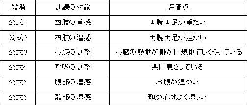
公式１は、筋肉をほぐすことが目標です。
心地よいだるさを感じられるようにしてください。
公式２は、血液循環をよくするのが、目標です。
ポカポカ温まるように感じるようにしてください。
公式３は、心臓の鼓動が正しくうっているのを感じてください。
公式４は、ゆっくりと深い呼吸ができるようになるのが目標です。
公式５は、みぞおち辺りに意識を集中して、
腹部の温かみを感じるのを目標に取り組んでください。公式６は、自律訓練法のクールダウンの意味合いがあります。
頭がすっきりして、額が涼しい感じを目標にしてみてください。
●キーワード
リラックスとは、身体を感じること。
リラックスとは、普段何気なく、無意識に
やり過ごしている身体の声を聞くこと。
★スローモーション
パニック発作に苦しむ人々に共通してみられる、
「せっかち」撃退法です。
常に、何かにせかされている状況を自分自身でつくりだしている事が多いのです。
全ての動作をスローモーションで行ってみましょう。
ゆっくり、ゆっくりと、ひとつずつこなしていくのです。
バタバタと慌ただしく過ごしていた時と
かかる時間は大して変わらないはずです。
ゆっくりを意識して、行動をしていくことによって、
脳は、筋肉にゆっくりの動きでいいという回路を形成し始めます。
結果、筋肉の緊張状態が緩和されていくのです。
緊張緩和は、パニック発作を起こしにくくする最良の方法です。
●キーワード
焦りは禁物。
焦りは改善・克服を遅らせます。
★進歩した脳科学（ＩＱ？）
最近、めざましく進歩した脳科学によれば、
脳が持つ可能性、脳力はそれほど個人差がなく、
「個人差をもたらせているのは、ひとえに脳の働かせ方」であるということが分かってきました。
従来は、頭の働かせ方をはかる「ものさし」にも問題がありました。
代表的なものにＩＱ（inteligence quotient ＝知能指数）がありますが、
ＩＱで測れる脳力はほんの一部にすぎません。
なので、子供のころに測定したＩＱで落ち込む必要などさらさらないのです。
ＩＱにプラスして、ＣＱ（creation quotient ＝創造性指数）や
ＥＱ（emotional quotient= 感覚指数）なども大切です。
人の能力の判定基準は無限にあるのです。
あなたが感じているコンプレックスは、
あなたを構成している無限の要素の中のひとつや数えきれるほどの数なのです。
●キーワード
１．０００、０００、０００、０００以上ある
構成要素の10 個くらい好きでない自分があっても何も大きな問題ではない。
★アインシュタインの死
脳の仕組みのはなしがでてきたので、
少し面白いお話をお伝えしたいと思います。
アインシュタインが死亡したときに、脳科学者たちは、内心、
興奮と期待をおさえられなかったそうです。
しかし、その期待に反して、露出されたアインシュタインの脳はなんの変哲もないものだったそうです。
脳科学者はあらためて、凡人と天才の脳にはほとんど差がないことを再認識させられたそうである。
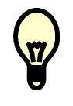
●キーワード
人間みんな大してかわらない。
優劣なんてないのです。
実は、だれもが凡人なのです。
第四章
★知っておきたい心の病
うつ病
「無気力で元気がでない」
「身体がだるく、疲れがとれない」
「食欲がなく、ゆっくり眠れない」
といった気分が２週間以上続けば、うつ病の可能性が高いです。
うつ病は、心の病の中で最も多いと言われています。
ただ、私は「うつ病は心の風邪」とは思っておりません。
世間のそのような風潮を危惧しております。
そのような疑いがある方は、必ず、専門医に診てもらうことをお勧めします。
職場不適応
これはうつ病や不安障害と比べ、軽症であり、ストレス原因がなくなると速やかに快方にむかいます。
その他に
・対人恐怖症（社会不安障害・ＳＡＤに含む場合もあります）
・強いこだわり、とらわれ（強迫性障害）
・とらうま（外傷性ストレス障害・ＰＴＳＤ）
・拒食症（摂食障害）
・偏った性格（パーソナリティ障害）
・依存症（嗜癖）
・心身症
・統合失調症
★過呼吸
パニック発作に非常に似た状況になるのが、「過呼吸症候群」です。
健常者のかたでも、無理に深呼吸を無理に繰り返し行うと、不安感や緊張感、不整脈、めまい、手足のしびれ、頭痛などの
「過呼吸症候群」の症状が現れます。
この症状は、パニック発作に非常によく似ています。
過呼吸症候群は、呼吸をし過ぎることによって、
血液中の酸素が増し、その影響で血液はアルカリ性になります。
アルカリ性の血液は、脳内の血管を収縮させますので、
脳は酸素不足となり、先のような症状がでてくるのです。
酸素不足になった脳細胞のエネルギー源は、グリコーゲンですので、脳内には、乳酸が増えることになります。
乳酸が増えた結果、血液はアルカリ性であるのに、細胞内では
酸性傾向になり、延髄の呼吸中枢がされ、ますます過呼吸状態が促進され、悪循環が繰り返されます。
たとえば、
二酸化炭素の充満した部屋にいたとします。
（大勢のひとが集まっているにも関わらず、換気の悪い部屋や、
人工的に植物を育てるために、二酸化炭素濃度が高く設定されているハウスなど）
この場合、一般的に呼吸数が増えがちになります。
通常であれば、「なんとなく息苦しいなあ」で済むはずですが、
パニックを経験したことのある人の場合、
「何か呼吸が苦しくなってきたぞ、もしかしてあのいやなパニック発作がまた起こるのではないか？どうしよう。」となってしまうわけです。
恐怖が恐怖を呼ぶ、悪循環のスパイラルにはまりこんでいくことになるのです。
●キーワード
自動思考にまかせるのではなく
いったん立ち止まってみては？
★強迫性障害（Obsessive-Compulsive Disorder）
外出直後に、
鍵をかけ忘れたのではないかとか、
ガス栓がひらきっぱなしなのでないかと
不安感がどんどん強くなり、
確認しないと気が済まなくなるなどです。
また、
仕事などでは、
書類が抜けているのではないかと
何回も確認したり、
心配で寝られなくなったりします。
全般性不安障害（Generalized Anxiety Disorder ）
不安感を抱えているのは、
自覚しているが、
何が不安なのか分からない状況。
★パニック障害と隣接する疾病
・僧帽弁閉鎖不全
パニック障害を発症している患者さんの中で、
この僧帽弁閉鎖不全をのあるひとの割合は非常に高いと言われています。
一時事的な、めまいやフワッとする感じの原因になっています。
しかし、ご安心ください。
心臓も筋肉だということです。
他の筋肉と同じで、鍛えれば強くなるということです。
無理は禁物ですが。
心臓が強くなると、
一回の心拍でたくさんの酸素と血液を送り出せるようになるので、
心拍数を落としても、正常通りの生活が送れるようになります。
心臓が強くなれば、
それが原因のめまいなどは、確実に減ることは明らかです。
・内耳の疾病
内耳には、身体の平衡感覚をとる働きがあります。
内耳には常に液体があり、身体を動かしたり、頭を振るなどしたときにバランスをとる役目を果たしてくれます。
イメージとしては、コップに入った水のようなものです。
内耳の感覚神経が脳に指令を出し、バランスが保たれるのです。
この内耳に問題があると、うまくバランスをとれなくなり、グルグル回るように感じたりして、めまいや吐き気といった症状がでてきます。
メニエルなどが代表的な疾病です。
エレベーターや、車、飛行機などの動きを伴う乗物に乗っているときにパニックを引き起こすひとは、
内耳に問題がある可能性があります。
この場合は、耳鼻咽喉科などの専門医による診察が必要ですが、万が一、異常が見つかっても治りますので心配は無用です。
この場合の治療は、食事療法などが中心になると思われます。
服薬するかどうかは、症状に合わせて医師が判断します。
・月経前症候群（ＰＭＳ）
月経前には、排出すべき体液が体内にとどまることによって、不調を起こすことがあります。
過剰な体液の体内への滞留は、神経系を非常に刺激します。
神経系を刺激されることによって、
すぐにカッとなったり、不安感をおぼえたり、
パニックを引き起こしたりすることが報告されています。
この症状も、婦人科などで
適切な治療を受けることで治すことが可能です。
★パニック障害と似た内科疾患
甲状腺機能亢進症
これは、動悸や頻脈などの症状ですが、
なんらかの原因によって、甲状腺の働きが活発になり、
甲状腺ホルモンが過剰に分泌される病気です。
バセドー病
症状として、
甲状腺の腫れや眼球の突出があげられますが、他に、
震え・息切れ・多汗・精神不安などパニック発作に非常に似た症状が出現します。
鑑別検査・血液検査ですぐわかります。
不整脈
脈が不規則な状態になる病気ですが、
これも検査をすればすぐにわかります。
メニエール病
これは、激しいめまいや、吐き気・冷や汗などをともなった症状が突発的に起こるので、パニック発作に非常によく似ています。
（私もまず、これを疑われました）
この病気は、
内耳のリンパ液が増えて、それに伴い内部の圧があがることが原因で起こることがわかっています。
めまい、耳鳴り、難聴を伴うのもおおきな特徴です。
過換気症候群
これもパニック発作と似ていて、
めまいや手足のしびれ、けいれん、呼吸困難がおこります。
これは、
内科領域と精神科領域の中間に位置する病気になります。
過換気症候群は、
ストレスが原因となって、起こる心身症に含まれるものです。
メカニズムとしましては、
自律神経や呼吸中枢が異常を起こし、それにともない過呼吸が引き起こされ、
その過呼吸により体内から過度に炭酸ガスが排出され、
その結果、息苦しくなるということになるのです。
息苦しいので、
更に呼吸をしようと必死になるので、
余計に呼吸困難になるという悪循環になるのです。
そこで、落ち着いて、
ペーパーバック療法をすることによって、
簡単に発作を鎮めることができます。
一方、パニック発作はこの方法では、
おさまらないので、違いがお分かり頂けると思います。＊ペーパーバック療法
ハンカチやビニール袋、紙袋などで口と鼻を覆い、
自分の吐いた息を再び、吸いこむということを繰り返す方法です。
炭酸ガスが体内に取り入れることが、できるために治まるという寸法です。
●キーワード
軽く考えすぎもかんがえもの
重く考えすぎもかんがえもの
捉え方のバランスを大切にしましょう。
★うつ病とは
気持ちが落ち込むことは、日々の日常生活の中で誰にでもあることです。
悲しい出来事、将来への不安、過去の後悔。
人が生きていく上でこのようなことは
避けて通ることはできません。
程度の差こそあれ、落ち込みを伴うことはあるでしょう。
しかし、
うつ病は、紀元前５世紀のヒポクラテスの時代からあったものです。
当時は、体液説というものがあり、色々な病気の原因として体液の変化が考えられていました。
うつ病については、ヒポクラテスは
「黒胆汁によって起こる」と記しています。
もちろん、この説は、今では顧みられることはございませんが、
「うつ病とは人間の内部に根本的な原因のある病気だと」言う説は
２５００年たった今でも十分に通用するものです。
科学的な検証を重ねるうちに
内部に原因があるというのは確実なものになっています。
「内部にある」というのは、
「脳内にある」ということです。
★うつ病の症状
「おっくう感」がありますが、これは
・やる気がでない
・意欲が湧かない
これらは比較的あとまで残りやすいものです。
これらにプラスして、
・眠れない
・食欲がない
なども加わります。
朝早くに目覚めるのに、気分が悪く、
午後や夕方になるとよくなるパターンが多くみられます。
これを「気分の日内変動」と呼びます。
さらに、
頭痛、便秘、下痢、疲れやすさ、
肩こり、めまい、動悸、息苦しさ、などの身体の不調もでてくることがあります。
これらは、
「自律神経症状」と呼びます。
★うつ病による自殺
１９９８年以降、日本での一年間の自殺者は三万人に達しています。
交通事故死の３倍から４倍の数になります。
そして、特徴としまして、中高年の割合が高いです。
自殺の本当の原因ははっきりしないのですが、
うつ病の人の自殺は非常に多いというのは、まぎれもない事実です。
中高年というのも、うつ病の好発伝年齢でもあります。
うつ病の方の中には、自殺願望はないにしても
「事故で死んでしまってもかまわない」というかたちで、
生きることへの欲求が薄れている方はたくさんおられます。
この精神状態は、うつ病の自殺願望の
前段階としてよくあります。
●キーワード
うつ病は「こころの風邪」ではありません。
しっかりとした治療が必要です。
★ＳＤＳなどの自己診断
ＳＤＳ（ツングのうつ病自記式尺度「Zung Self --Rating Depression Scale 」）
などの自己診断に関する情報が増えてきております。
そのこと自体は非常に喜ばしいことです。
早期発見にもつながりますし、
従来型の偏見の解消にも役立っています。
しかし一方で、弊害もございます。
ＳＤＳなどは診断の代わりにはならないということです。
あくまで目安なのです。
自覚症状をチェックしているだけですので、がまん強いひと、
悩みなどを自分で抑えている方は
得点が低くなります。
逆もしかりです。
●キーワード
スポーツ・芸術・勉強、何でも我流は、
上達の妨げ以外の何もでもありません。
必ず、専門家に相談しましょう。
★精神療法とカウンセリング
精神療法とカウンセリングは違うのかということが
しばしば話題になりますが、専門家の間では、厳密に言えば、違います。
カウンセリングとは、より意識の表層の部分を対象とし、
精神療法は、より深い深層心理的な交流を通してすすめられます。
精神療法には、現在２５０以上の種類があるといわれております。
一般的にうつ病に有効なのは、支持的精神療法と認知療法と言われています。
支持的精神療法とは、
患者さんの意見を聞くということです。
認知療法の中でも、
私が行ったことのある、パニック障害や社会不安障害に
有効とされている認知行動療法をご紹介します。
認知行動療法とは、
・曝露法（エクスポージャー）
・認知再構成法
の２つを組み合わせたものをさします。
曝露法とは、徐々に妨げとなっている行動をしてみて、
実際に行動しても大丈夫だということをご自身で実感していく方法です。
これは、「不安階層表」というものを作成して、
それにのっとって行います。
のちほど、詳しくご紹介します。
次に、
認知再構築法です。
これは簡単に言えば、
マイナス思考や悲観的考え方を修正するテクニックです。
認知再構築法は、
「うつ」の治療に使われることが多いのですが、
なぜ、本テキストでご紹介するのかといいますと、
社会不安障害のひとと、うつの人では、
・決め付け思考
・極端思考
・マイナス思考
という共通点があり、
これらの修正に非常に効果があるからです。社会不安障害のひとは、
極端にマイナスの方に、歪曲するクセがあります。
社会不安障害のかたに有効と思われる
「５つのコラム法」をご紹介します。
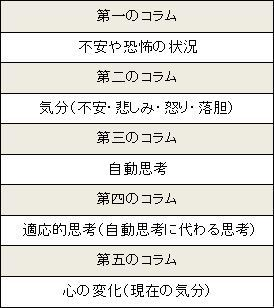
不安や恐怖を感じる場面に遭遇した時に、
自分の頭に浮かんだことを
ありのままに右記の表に順番に記入していきます。
そして、自分なりの指標を持つために
それを数字で表します。
たとえば、
全くだめだ、と感じたら１００％少し苦手だと感じたら30 ％などです。
５つのコラム法の例を
「知らなかった社会不安障害」という病気 講談社α 新書 磯部潮 著にわかりやすい例が載っていましたので、以下、一つの例を引用します。
興味をもたれた方は、本体８００円と安価で買えるので、購入してみてください。
第一のコラム 状況： 講演中に声が震えて、なにを話したのか覚えていない。
第二のコラム 気分： 恥ずかしい 80 ％
情けない 60 ％
腹立たしい 60 ％
第三のコラム 自動思考： いつもこんな失敗ばかりだ 80 ％
自分はなんてダメな人間なんだ 70 ％
いつか大変なミスをしてしまうかもしれない 60 ％
第四のコラム 適応的思考： これからはもっと準備しておけば大丈夫だ 80 ％
たいした失敗ではない 80 ％
第五のコラム 心の変化： 恥ずかしい 50 ％
情けない 40 ％
腹立たしい 30 ％
なお、引用にあたり、％表記など、一部を改編しております。
「精神療法が有効」と聞くと、
薬を使わずに、治療をしたいと思いたいところですが、
うつ病は、「脳の病気」なので、
服薬治療は必要です。
このテキストで、
度々、「うつ」について、取り上げておりますが、
世間で言われているような簡単な病気ではないため、
「うつ」の不安がある方は、
必ず、専門医にご相談ください。
うつは、自殺企図をともなうこともあるため、
必ず、専門医に行ってください。
世間で言われているように、
私は、うつは「こころの風邪」とは思いません。
あくまで、精神療法はプラスアルファに過ぎないのです
●キーワード
精神科はどこも予約でいっぱいです。
あなただけではありません。
★精神療法の色々
支持的精神療法表現的精神療法洞察的精神療法
（精神分析療法、ユング派精神分析、ロジャース法、など）訓練療法
（森田療法、内観療法、自律訓練法、認知療法、行動療法、など）芸術療法
集団精神療法
★うつ病の人によくある思考のパターン（認知のゆがみ）
恣意的推論： たんなる思いつきを信じ込む
ニ分割思考 いつも白黒をはっきりつけようとする選択的抽出
自分の好みにあった情報だけを選ぶ
拡大視・縮小視： 気になっていることだけを重大に考え、
それ以外は無視する極端な一般化
一時が万事と思いこむ
情緒的理由づけ： 自分の感情状態から、現実を判断する
自己関連づけ： すべて自分と関連づける
●キーワード
認知や思い込みは他者から強制されるものではありません。
すべて本人、つまりあなたがつくりだしているのです。
★病名について
「不眠症」
「めまい」
「自律神経失調症」
「うつ状態」
などの病名を記された診断書を
見ただけでは、どのような病気なのかはわからない。
これらは、単に状態を記入してあるだけなのである。
いわば、病名欄に
「病気」と書いてあるものです。
診断書というものは、
学校や会社に提出するものがほとんどなので、その人のその後を考慮にいれても、
本当の病名を書く必要性はあまりないというのが一般的な認識のようです。
●キーワード
欧米では、顧問弁護士のように、気軽に相談
しに精神科にかかっています。
少しでも病気の兆候があれば、心療内科に
かかってみよう。
〈栄養〉
★栄養不足で元気がなくなる
あがり症、過緊張、マイナス思考と同じようにうつ病もセロトニン神経が関わっているので、
この章では、うつ病を例に、栄養についてお伝えしたいと思います。
うつは、脳のエネルギー不足と言い換えることができます。
身体は糖類、タンパク質、脂肪の三大栄養素のどれでもエネルギー源として使うことができます。
生体では通常、第一選択としてブドウ糖となりますが、
これが不足していると脂肪やタンパク質も使うことができます。
しかし、脳は例外でエネルギー源にブドウ糖しか使えません。
ブドウ糖は脳を走らせる「ガソリン」なのです。
ブドウ糖が不足すると脳はピンチになります。
だから疲れてくると甘いものが欲しくなるのです。
ご飯、おにぎり、そば、うどん、パスタ、ピザ、などを食べると、その主成分のデンプンが酵素によって分解されてブドウ糖になります。
このブドウ糖が血液に乗って脳内に運ばれ、呼吸をとおして脳に入った酵素で酸化され、
大量のエネルギーＡＴＰに変換されます。
このＡＴＰを利用して脳が活動します。
脳内には、１０００億個もの神経細胞が詰まっていて、神経細胞と神経細胞はネットワークを形成しています。このネットワークの中をセロトニン、ノルアドレナリン、ドーパミンなどの
１００種類を超える伝達物質がかけめぐっています。
この神経細胞をつくるのは主にタンパク質です。
タンパク質は一度、アミノ酸に分解され、
再び、必要なタンパク質に造り替えられます。
肉を食べることによっても神経細胞をつくることができます。
伝達物質とホルモンが脳からの司令を全身に伝えます。
脳内を伝達物質がかけめぐることで
心（思考）がつくられるのでアミノ酸は
は「心を作る物質」といえます。
脂肪はダイエット面などで敬遠されがちですが、脳は最も脂っぽい臓器で
水分を除けば、脳の重さの60 ％は脂肪でできています。
病気でもないのに元気がでないなどの症状がでてきたら、脳の栄養不足を疑ってみてください。
まっ先にビタミンＢ不足が疑われます。
ビタミンＢ群のメンバーは、Ｂ１（チアミン）、Ｂ２（リボフラビン）、
ナイアシン（ニコチン酸、ニコチン酸アミド、Ｂ３）、Ｂ６（ピリドキシン）
Ｂ12 （シアノコバラミン）葉酸、パントテン酸、ビオチンの８種類。
ビタミンＢ群の特徴は水溶性。
多く取っても尿として排泄されるので、副作用の心配はありません。
その反面、食いだめができないので、こつこつと摂取を意識しなければいけません。
Ｂ１（チアミン）、Ｂ２（リボフラビン）Ｂ１（チアミン）、Ｂ２（リボフラビン）葉酸、パントテン酸が不足すると、たとえ脳内にブドウ糖があってもエネルギー源ＡＴＰをつくれなくなります。
Ｂ６ （ピリドキシン）が不足すればデンプンの分解そのものが進まないのでブドウ糖不足でエネルギー不足になってしまいます。
以上をはじめ、ビタミンＢ群が不足すると、頭が冴えなかったり、気分が落ち込んだりイライラ、
情緒の不安定、
身体がだるくなって、
朝起きるのがおっくうになったりします。
とりわけ、Ｂ１，Ｂ２，Ｂ６ が不足するとうつが悪化することが知られています。
また、Ｂ１ の吸収はアルコールによって妨げられるので、お酒飲みの方は
Ｂ１ 不足になりやすいです。
セロトニン、ノルアドレナリン、ドーパミンなどの興奮性伝達物質をつくるのにもＢ６は欠かせません。
ミネラル不足でもうつになると言われています。
刺激のシグナルが神経細胞に伝わるのを助けるマグネシウムは、日本人の70 パーセント
が十分に摂取していないといわれています。
カルシウムが不足しても、刺激が円滑に伝わらなくなるので、マグネシウム不足と同じ結果になります。
つまり、マグネシウムやカルシウムが不足すると、
イライラ、心配、うつが発生します。
亜鉛不足もひとを無感動、無気力にします。
亜鉛レベルが低下すると銅が有毒レベルにまで
上昇し、怖れやパラノイヤを生じさせやすくなります。
鉄不足も同様です。
鉄は、赤血球に含まれるヘモグロビンという酸素を運搬するタンパク質の成分ですが、
これが不足すると、ヘモグロビンが十分に働かないため、脳は酸素不足になります。
脳はブドウ糖を酸素により酸化することでエネルギー物質ＡＴＰをつくっているので
鉄不足は即、ＡＴＰ不足に直結します。
そうすると、体に力が入らないことになります。
●キーワード
心と体は密接な関係があります。
こころの平安は、健康管理から。
★オーソモレキュラー医学
私たちの体は、分子からできています。
中学校や高校で習ったあれですね。
体は健康なときは、
分子のバランスがちょうどよいと考えられます。
バランスを崩した場合は、足らなくなった分子を補ってやればよいという
至極、分かりやすい理論がオーソモレキュラー医学です。
（直訳 正常生体分子医学）
＜「メガビタミン療法」とも呼ばれることがあります。
「オーソ」はギリシア語で、きちんとした、正確なという意味です。
「モレキュラー」は英語の分子です。
脳の働きには、分子濃度が関係していると理論です。＞
オーソモレキュラー医学の提唱者であるマイケル・レッサー博士は、
情緒面の特徴から、脳を６つのタイプに分けました。
・ストイックタイプ
・ガーディアンタイプ
・ウォリアタイプ
・スタータイプ
・ドリーマータイプ
・ラバータイプ
右の６つです。
それぞれの特徴は、
のちほど、ご紹介いたします。
次にあなたが、どのタイプにあてはまるかを
「脳に効く栄養」マイケル・レッサー著 中央アート出版より引用し、知っていただきます。
- １．私は周りから頼れる人だと思われている。
- ２．私は、「ノー」と言えない人間だ。
- ３．私は、悲しい時や腹を立てているときでも、それを他人に悟られない。
- ４．私は、物欲があまりない。
- ５．私は、危機に直面しても、へこたれない。
- ６．私は、不平不満をブツブツ言わない。
- ７．私は、よく気がきくひとで、自分を後回しにしてでも他人を思いやる。
- ８．私は、バランス感覚が優れていて、何事にもひどく取り乱したりしない。
- ９．私は、動揺を感じると、同時に落ち込みやすい。
- 10 ．私は、なんとしても争いごとは避ける。
- 11 ．私は、いつでも安全であることを重視する。
- 12 ．私は、規則正しい日課を繰り返すような、きちんとした暮らしが理想だ。
- 13 ．私は、善悪の区別をつけることができ、生きるための信条をもっている。
- 14 ．私は、些細なことをクヨクヨ気にする人だと、友達からよく言われる。
- 15 ．私は、何かを決めるときに、あらゆる選択肢についてじっくり考える。
- 16 ．私は、お金の管理をきっちりしている。
- 17 ．私は、コレクションが好きだ。
- 18 ．私は、センスがよく、かっこいい。
- 19 ．私は、決して臆病者ではない。
- 20 ．私は、知性を重んじる。
- 21 ．私は、自然体でいるのが好きだ。
- 22 ．私は、危険を承知で行動する人だ。
- 23 ．私は、説得力のある人だ。
- 24 ．気分がよいこと、楽しい時間をすごすことは、私が何よりも優先することだ。
- 25 ．私は、短気だ。
- 26 ．私は、いつも正しいことをしている。
- 27 ．私は、思想家や発言家と言うよりも実践家だ。
- 28 ．私は、動揺を感じると、同時に怒りやすくなる。
- 29 ．私は、何か任務に集中していていると、他の事は考えられない。
- 30 ．私は、決断力がある。
- 31 ．私は、楽天家だ。
- 32 ．私は、早口だ。
- 33 ．私は、とても活動的で、エネルギーに満ちている。
- 34 ．私は、活動していることが楽しい。
- 35 ．私は、注目の的になるのが好きだ。
- 36 ．私が悲しいときや、腹を立てているときに、周囲にもそれがすぐに伝わる。
- 37 ．私には、直観力がある。
- 38 ．私の気分が変わるときはガラッと変わる。
- 39 ．私は、何事においてもリーダーシップをとるのが好きだ。
- 40 ．私は、激しく、情熱的だ。
- 41 ．私は、恥ずかしがり屋だ。
- 42 ．私は、何でも自分ですることに慣れている。
- 43 ．私の道徳的な水準は高い。
- 44 ．私は、あまり人づきあいをしない。
- 45 ．物質的なことは、私にとってあまり重要でない。
- 46 ．私の感情は傷つきやすい。
- 47 ．多くの人が私の事を理解していないと感じる。
- 48 ．私は、怒りを我慢できない。
- 49 ．私は、霊性（精神性）を重要視する。
- 50 ．私は、実践家というよりも思想家だ。
- 51 ．私は、社交的な人間だ。
- 52 ．私は、目いっぱい人生を謳歌したい。
- 53 ．セックスは、人生にある大きな楽しみの一つだ。
- 54 ．私は、気が変わりやすい。
- 55 ．私は、自分の感情といつも一致している。
- 56 ．私は、人をもてあそんで楽しんでいる。
- 57 ．私は、動揺を感じると、同時に不安になりやすい。
- 58 ．私に魅力を感じる人は多い。
- 59 ．私は、人気者だ。私には人気が必要だ。
- 60 ．私は、愛のためならなんでもする。
さあ、どのタイプにあてはまったでしょうか？
１～10 の間に○が、６つ以上あった場合は、「ストイックタイプ」
11 ～20 の間に○が、６つ以上あった場合は、「ガーディアンタイプ」
21 ～30 の間に○が、６つ以上あった場合は、「ウォリアタイプ」
31 ～40 の間に○が、６つ以上あった場合は、「スタータイプ」
41 ～50 の間に○が、６つ以上あった場合は、「ドリーマータイプ」
51 ～60 の間に○が、６つ以上あった場合は、「ラバータイプ」
になります。
これは、あくまでも目安になります。
★ストイックタイプ
うつ病になりやすいタイプと言われています。
このうつ状態や、疲労には、
ビタミンＢ１、Ｂ２、ナイアシン、Ｂ６、葉酸、Ｂ12 など
ビタミンＢ群の不足が関係していることが多いです。
ナイアシンは、「貧乏人の抗うつ薬」といわれるほど、
抗うつ成分としての威力を発揮します。
うつ症状などは、脳内物質のセロトニンの減少などがいわれていますが、
ナイアシン（ビタミンＢ３）は、自然な力で、このセロトニン値を増やします。
また、体内で、アミノ酸の一種であるトリプトファンを作る際にも、ナイアシンは、必要になります。
銅の摂取にも気を使う必要があります。
銅は、亜鉛とバランスしているのですが、
銅の摂取が多いと興奮しすぎてしまうということになるのです。
なぜなら、銅は興奮性のミネラルだからです。
また、
銅の摂取が少なくても、亜鉛とのバランスが崩れていると、
胸がドキドキしたりして、眠れなくなり、うつ症状を訴えたりということになります。
ストレスが、亜鉛の値をさげることがわかっているのですが、
コーヒーなどのカフェインやチョコレートなどもバランスを崩す原因になることがわかっています。
コーヒーをよく飲むひとは、
亜鉛のサプリメントを飲むなどして、バランスをとることを意識してみてください。
また、朝一番の水道水には、たくさんの銅が含まれていますので、
少しもったいないですが、
朝一の水は捨てるようにしてください。
★低血糖
精神疾患の症状や、疲労を訴える人の多くは、低血糖症になっていることが多く見られます。
（ブドウ糖負荷試験というもので簡単に分かります。）
血糖値というものは、
炭水化物などの糖類を摂取すると、
食前よりも５割くらい上昇するのですが、
健康な人の場合は、ゆるやかに下降して正常値に戻ります。
低血糖症のひとは、
これが、正常値よりもずっと低い値まで下がり過ぎてしまうのです。
血液中に入った糖分をしょりするためには、
膵臓が働いて、インシュリンを分泌する必要があります。
食事を摂っても、血糖値が低くなるということは、
膵臓が必要以上に、糖分を処理しているということになります。
このようなことから、低血糖症は、高インシュリン症と呼ばれることもあります。
★低血糖による不眠症
低血糖が原因で、不眠になることがあります。
通常、健康なひとであれば、
血糖値が下がれば、副腎からアドレナリンが分泌され、
その刺激によって、糖分が血中に投入され、血糖値が正常になるようになっています。
ですが、
アドレナリンは、エピネフリンと警戒信号の役割を果たす物質でもあるため、
目が冴えて、眠れなくなるという寸法です。
★ガーディアンタイプ
強迫神経症になりやすいと言われています。
女性よりも男性に多いのが特徴で、
何かを守っているという感覚が異常に強い特徴があります。
このタイプのひとは、
不安などを抱くと、
以上に自己防衛反応が出て、強迫観念や、強制行動といわれるものが表面化してきます。
ガーディアンタイプのひとの多くは、
ノルアドレナリン値が低くなりがちなので、
良質なたんぱく質を多く摂るようにすることをお勧めします。
普段の行動で、
気をつけるべきは、
行動がパターン化しないように注意することです。
運動でいえば、
一日目は、テニスをし、
二日目は、ジョギングをするなど、
決まり切った行動をとりたい衝動を抑えるようにしてください。
また、計画をしていない突発的な行動をすることも
よいとされています。
★ウォリアタイプ
ウォリアタイプは人格障害になりやすいと言われています。
ここでは、詳しくは述べません。
★スタータイプ
このタイプのひとは、
非常に魅力的にひとから映るタイプの人が多く、
創造性もあり、実行力もあるとされています。
ただ、「気分屋」や「ムラっけ」の印象を与えるのも特徴です。
躁鬱病になりやすいタイプと言えます。
食べ物で気をつけるのは、
躁状態になっているときは、
炭水化物などは、１時間～２時間くらいで燃焼してしまうので、
スタータイプのひとは、
脂肪やタンパク質といった、消化までに５時間くらいかかる食事を摂り、
活動ペースをわざと落とすようにもっていくのが、いいとされています。
うつ傾向にあるときにも、
タンパク質は、セロトニン合成に必要なので、好都合です。
さらに、重要なことは、元気いっぱいのときには、
カフェインや白砂糖などの刺激物を摂取しないように注意が必要です。
このような刺激物は、より気分を高揚させ、悪循環を招きます。
不安や興奮という情動は、
ビタミンＣを激しく消耗するので、
躁状態のスタータイプのひとは、特に消耗率が大きいので、
多く摂取するように心がけてください。
喫煙者の方も、ビタミンＣの消耗が激しいので多く摂るように意識でうべきです。
★ドリーマータイプ
このタイプのひとは、統合失調症になりやすいと言われています。
本筋から、大きく逸れますので、省略させていただきます。
★ラバータイプ
このタイプのひとは、芸能人に限らず、
どのような分野においても不思議な魅力を持っていると言われています。
直接会ったこともない人にも、いい印象を与えたりします。
このタイプのひとは、不安症になりやすいと言われています。
カフェインやニコチン、アルコールなどの刺激物は、
毒と捉え、遠ざけるようにしてください。
糖はエネルギーの源でもある反面、
脳内の化学物質のバランスが崩れている人には、
緊張感や不安感を呼び寄せたりし、
パニック発作の誘因になったりすることもあることから、
摂取には気を使う必要があります。
糖とともに摂りたいのが、
ビタミンＡです。
ビタミンＡは、不安な状況などの時に、
ストレスに対抗するためにつくられる、副腎ホルモンに必要不可欠です。
この栄養素は、脳内や脳下垂体のドーパミン受容体を調整するためにも必要で、
健全な中枢神経系には、欠かせません。
また、
ビタミンＡは、肝臓で３ヶ月間貯蔵が可能なため、
毎日摂る必要はありません。
次にビタミンＢ６です。
パニック発作のある患者さんにビタミンＢ６を摂取させたところ、
１ヶ月後には、パニック発作がなくなったという報告もあるぐらいですから、
パニックのある方には、ぜひ、摂取していただきたい栄養素です。
カルシウム欠乏も、不安感の増大につながることがわかっています。
マグネシウムの補給が、動悸のコントロールに有効なのがわかっています。
少し、おおげさではありますが、
「白い食べ物は食卓から追い出す」という考え方があるくらい、
白砂糖、精白小麦粉、白米、白油などは、
脳内の精神を司っている部分にはよくないものです。
気をつけて、摂取するようにしてください。
また、しっかりと咀嚼する必要性もお伝えしておかなければ、
なりません。
胃と膵臓で分泌される消化液は、唾液とともに
口腔内で50 ％消化を終えてから、流れてくることを前提に働いています。
しっかり消化できているかどうかは、
きれいな便がでているかどうかで、確認できます。
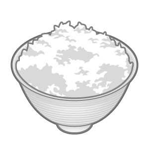
★水分摂取について
水分は一日に２リットル以上は飲みたいところです。
これを実践するだけで、
健康状態が私は劇的に変わりました。
水分を大量に摂取すると、おしっこが近くなります。
その時に出るおしっこは、非常に薄いです。
薄い状態でおしっこを出すということは、腎臓に負担をかけないということです。
腎臓は、身体に取り込まれた毒素を分解して、
体の外に排出する役目を果たしてくれています。
おしっこがたくさんの毒素を含んでいるというのは、
赤ちゃんのオムツを替えないとすぐにかぶれてしまうことからも
容易に想像ができると思います。
腎臓は、血液の濾過もおこなっているので、（一日に１５０リットル）
ここを疲れさせないということは、心身の健康に大きく関わってきます。
腎臓は、夜12 時以降は、働きが鈍くなると言われているので、早寝早起きは、
ここでも役立つことがわかります。
●キーワード
水分摂取も栄養摂取と同じ。
しっかりと意識的に飲むようにしよう。
★大便について
尿もそうですが、大便もまた、
老廃物で、身体にとって毒となるものです。
便秘のひとは、
繊維不足や運動不足が考えられますので、
しっかりと対策をとり、便秘を解消してください。
10 分もトイレに座って、うんうん頑張っている方もいますが、
犬や、動物園の動物を見てもわかるとおり、
大便は、すぐにサッとでるものなのです。
10 分も出ないというのは、
異常とかんがえるべきかもしれません。
★冷たいものを摂らないようにこころがける
私たちは、食べたものを主に胃腸で消化・吸収します。
それができるのは、
体内に消化酵素があるからにほかなりません。
消化酵素は、三六・五度で最も働き、
それ以下では、極度に機能が落ちます。
冷たいものを食べると、体内温度を急激にさげることにつながるので、
消化酵素が働らかなくなってしまいます。
「医食同源」の言葉がある中国では、
古くから、冷たいものを摂らない習慣があります。
最近までは、ビールも常温で飲んでいました。
（健康志向のひとは、いまでも冷たいビールは飲みません）
★満腹にしない
マウスなどを使った実験で、
恐ろしい結果がでています。
二つのグループに分け、
- １．満腹まで好きなだけ食べ物を与える
- ２．節制をさせ、腹七分目までにさせる
この二つのグループの寿命が見事にわかれました。
２． の群は、平均以上生き伸び、
１． の群は、２．の群の３分の１しか生きられなかったそうです。
これは、いかに節制しない食生活が寿命を縮めるかを表した
非常に怖い結果だと思います。
●キーワード
食べ過ぎに注意。
腹七分目。
★玄米の勧め
いろいろな書物等で、
玄米の健康に対する所見はたくさん見られますが、
パニックや社会不安などの方にも有効です。
玄米や野菜、キノコ、海藻に含まれる食物繊維は、
不消化多糖と呼ばれ、人間には消化するための酵素がなく、胃腸で分解できない
糖です。
このため、消化管刺激作用が強く、
副交感神経刺激が長時間行われます。
交感神経優位の、緊張感の高い人には、
お勧めの食べ物です。
欠点をあげるなら、
外皮が固いので、
胃腸の弱い人には、胃腸に負担がかかるということでしょうか。
★カフェイン
カフェインは、言わずと知れた
「精神的な興奮作用」のある物質です。
カフェイン入りの飲料などは、代表的なもので、
・コーヒー
・紅茶
・緑茶
・コーラ
などがあります。身近にたくさん溢れています。
カフェインの効果としまして、精神的には
眠気をとり、気分を爽快にし、意欲を増すなどがあげられます。
肉体的効果には、利尿作用のほかに、唾液や胃液の分泌を促す、血圧を上昇させるなどがあります。
一方、どんなものにも一長一短があるものです。
カフェインの場合は、
大量に摂取するとカフェイン中毒になります。
カフェイン中毒は、強い不安感が特徴で
この不安感は、パニック発作に非常によく似ていると言われています。
パニックを起こす方には、
あまり摂取をお勧めできないものなのです。
エール大学で、パニック障害の患者さんとカフェインの相関関係の実験が行われました。
その結果、パニック障害の患者さんの血液中のカフェイン濃度が高まると神経質になることがわかりました。
●キーワード
過ぎたるは及ばざるが如し。
適量を楽しむようにしましょう。
★糖について
脳が正常に作動するには、糖（ブドウ糖）と酸素が
安定供給されている必要があります。
糖は酸素が存在して、はじめて代謝されるので、
必ず、両方が安定供給されている必要があります。
どちらかが、欠けていても脳は異常を起こします。
どちらかが足りなくなると、脳は危険信号を出します。
それが、アドレナリンの分泌です。
アドレナリンが分泌されると、身体はどのような変化を起こすのでしょうか？まず、呼吸数と心拍数があがります。（ドキドキします）なぜ、この二つをあげるかというと、
身体に蓄積してあった「糖」を脳に急いで運ぶためです。
すると血糖値があがり、脳は正常に働き続けることができます。
しかし、体内に大量のアドレナリンが分泌されるとそれに対しての副作用がでてきます。
・恐怖感、不安感が増します。
・パニックの誘発要因になります。
なぜ、パニックの誘発要因になるかといいますと、心拍数、呼吸数があがった状態で、
不安感や恐怖感を感じていると、実際に身の回りで危険なことが起こっていないのに、
「ドキドキ、ゼエゼエ」するのですから、
自分の体の内部で何かが起こったのではないか？とそれこそパニック状態になってしますのです。
するとさらに、アドレナリンが分泌されるという悪循環に陥るのです。
★糖の過剰摂取の危険性
脳にとって糖が必要なのはご理解いただけたかと思います。
糖には２種類あります。
単糖類と多糖類です。
単糖類とは、砂糖などの体内でそのまま使われるものです。
多糖類とは、野菜などの体内で使われる前に分解される必要のあるものです。
ファーストフードやチョコレートなどの単糖類を大量に摂取しますと、
分解される必要がないので、即座に血液中に入り、急激に血糖値を上昇させます。
血液中の血糖値が上昇すると、インシュリンが分泌されます。
インシュリンは血液中より、細胞へ糖を運ぶ役目をはたします。
インシュリンの分泌が増えれば、増えるほど運びさられる糖は増えるので、急激に血糖値が下がります。
急激に血糖値がさがると、空腹を感じてフラフラしてくるのです。
この状態を放置していると、
糖の運搬の役目をはたしているアドレナリンが登場してくるのです。
アドレナリンが分泌されると、
呼吸があがり、激しい動悸を感じたり、など逃げ出したくなる気持ちになるのです。
いわゆる、パニックを起こした状態になるわけです。
アドレナリンとインシュリンは天秤のようにバランスしているのです。
よく疲れた時などに、
甘いものが欲しくなるので、甘いものを摂るとよいと聞くことがあります。また、リラックスのためにコーヒーを飲むと元気が湧くなどと聞いたことがあるかもしれません。
しかし、先ほどもお伝えしましたように、
大量の糖を摂取すると、インシュリンが分泌され、
それにともなって、アドレナリンも分泌されるのです。
コーヒーの場合も同じで、カフェインが血流中にはいって、一時的に、元気になるだけです。
では、疲れて脳が糖を欲したときはどうすればいいのか？
答えは簡単です。
多糖類を摂ればいいのです。
一般的に多糖類は、単糖類に比べて
消化されてエネルギーとして使えるようになるのに、
４倍の時間がかかるので、
血糖値の上昇・下降が非常に緩やかなのです。
★森田療法
森田療法とは、森田正馬により、１９２１年ころ創始されたものと考えられています。
西欧の心理療法と森田療法との一番の大きな違いは何かというと、西欧の心理療法においては、
神経症者が何らかの形で心の内に内在させる、
不安や葛藤を分析し、それを異物として除去しようとする傾向があります。
森田療法においては、それら不安や葛藤を異常でないもの、異常でないものを除去しようとするのであるから、除去しようとすること自体が矛盾であると考えます。
森田は著書において、十の変質者の例をあげ、その一つに「神経質」をいれています。
現代で変質者というと、Ｋ・シュナイダーがあげるような、性格の極端な偏奇者を
考えがちですが、そうではありません。
森田があげる神経質をかれの様々な著作から類推してみると、普通の人から見て
神経質的に性格が偏っているという程度のことです。
まず、神経質者の性格の特徴を考えてみると、一言で言ってしまえば、
「かくあるべし」という考えが非常に強い性格であるということです。
換言すれば、これはひとつの教条主義です。
人間性を無視して、状況を無視して、自分勝手に
「かくあるべし」という結果を求めるならば、
現実にそれが実現しないばかりか、かかわりをもつ他者に困惑を与え、それによって、自分も傷ついたり、
苦しんだりすることになります。
たとえば、「人前であがらずに話せるべきである」という命題を自分に下すならば、
人前で話すときにどもったり、ドキドキしたり、顔が赤くなったりする自分は
ダメな人間であるということになる。
その結果どうするかというと、
「人が自分をおかしくみているだろう」と、人に自分の苦痛の責任転嫁をするか、
「こんな自分はダメな人間である」というように、
自分の内に劣等感を肥大させるのです。
人間は生まれながらにして、より健康でありたいし、よりよい人生を送りたいのです。
したがってその反対に、
不健康であったり、自分がみじめな状態になるのを非常に恐れます。
つまり、神経質者は、生まれつきこのような心配が強い人と言えます。
自分の身体が、心臓なり、肝臓なり、胸なりが、人一倍弱いような気がして、心配でたまらないのである。
「予期不安」におびえる
ちいさいグループにせよ、大衆を前にしたときにせよ、これからあなたが喋ろうとするときに、
心臓がドキドキして、声がでなくなるのではないか、
あるいは、
身体が硬直して、震えだしてしまうのではないか、
などという不安体験をもったことがないでしょうか？
大方の人々はこれと、同じ体験をどこかでもったことがあるはずです。
この場合、胸をすっきりさせて、ドキドキせずに講演をしたいとか、震え声をださずに
喋りたいと努力したら、どういうことになるでしょうか？
おそらく、努力すればするほど、緊張が強くなり、
自分の意に反してうまくいかなくなってしまうはずです。
それはつまり、次のような心理的メカニズムで説明できます。
例えば、一例として、しょっちゅうしゃべる時に震えがちなある人が、震えまい、震えまい、と努力した結果、かえって震えがひどくなり、
会場で立ち往生して、会議を中止してしまったとする。
この場合、彼はまだしゃべっていない時期から、もし自分が震えたらどうしようという
「予期不安」にとらわれているのです。
そして上手にしゃべろうとすればするほど、その予期不安は拡大され、
実際に喋る段になると、緊張ばかりが大きく目立つようになって、話の内容が忘れさられてしまうのです。
そこで「しまった」と思い、
うまく話そうと考えて、焦ればあせるほど、
むしろマイナスなストレスが話すという行為のうえに重なっていき、遂には、立ち往生する結果になって、
逃避せざるをえなくなってしまうのです。つまり、「精神交互作用」とは、
自分にとって不都合な心身の弱点を取り除こうと努力すればするほど、
逆にそこに注意が集中し、結果として自分に不都合な症状を引き起こしてしまうのである。
以上「森田療法」講談社現代新書 岩井寛 より一部抜粋
●キーワード
何事もこだわり過ぎないこと。
気にしても結果は変わらないといことを
しっかり理解する。
〈その他〉
★ペーツル効果
ペーツル効果とは、
暗示をかけた時に、その暗示が、
潜在意識に入れば、深く入るほど、
その効果が高まることをいいます。
産科医で催眠治療医でもあるデイビッド・チーク博士は、
全身麻酔にかけられている患者さんが、
オペ中の医師などの会話を記憶していることを発見しました。
この事実の発見とペーツル効果はどう関係するのでしょうか？
ひとつ事例をご紹介します。
オペ中に医師が患者に向かって、
「オペはうまくいっている、合併症の心配もないし、 予後も順調なはずだ」
と囁くと、
速やかにオペ後、回復することがあるそうです。
自己暗示にも、おなじような効果が期待できるのは、言うまでもありません。
●キーワード
自分に対していい言葉かけをする。
ひとは聞いていなくても、
あなたの脳はしっかりと聞いています。
★右脳の共鳴効果
右脳には、何にでも共鳴する力があると言われています。
共鳴とは、
文字通り、周りとの一体感による、相乗効果です。
暗記などをするときに、
その事象と一体化することによって、
共鳴し、暗記力が増すということが実験結果などでわかっています。
たとえば、
「私は方程式と一体化している」などと、
自分自身に語りかけることによって、
右脳が共鳴し、方程式がしっかりと記憶されるのです。
これは、意識するしないに関わらず、
偏差値の高い学生はこれを大なり小なり利用して覚えているのです。
外出が怖い、人前でのスピーチが怖い、などは、
その場と、一体感をイメージすることによって、
右脳が場と共鳴し、自然に溶けこめるようになったりもします。
一度、試してみてください。
その際には、
右脳の解放をしてあげる必要がありますので、
その項を御参照ください。
★不眠症
不眠症には、大きくわけて４つの種類があります。
・入眠障害 寝つきが悪い
・早朝覚醒 朝早くに目覚め過ぎる
・中途覚醒 夜中に目が覚めてしまう
・熟眠障害 寝ているが起きた時に、寝た感がない
右記のような睡眠障害には、
さまざまな原因が考えられますが、
まず、考えられるのは
低体温による交感神経が優位になっている場合です。
これに対しては、
入浴などしっかりと身体を温める必要があります。
湯が熱すぎるのも交感神経を刺激しますし、
寝る間際の入浴もお勧めできません。
睡眠に入るときは、比較的体温が下がっていくので、
寝る１時間以上前に入浴を済ませておくことです。
また、寝る時間が一定していないのも、
原因になることが多いです。睡眠は脳と身体を休めるために
絶対に必要なものなので、
これが不足すると、様々な弊害がでてきます。
脳というのは、ひとの体の２％程度しかありませんが、
使うエネルギーは、
全体の５分の１くらい消費しています。
脳を休ませないと、
幻覚や幻聴などのマイナス思考から
脱却できない原因になります。
悪い方に、悪い方にとマイナス思考の負のスパイラルから
抜け出せない人は、
まず、睡眠から見なおしていきましょう。
★睡眠薬
睡眠薬は、テレビドラマなどで、
自殺のシーンなどに使われたりしたことから、
非常に怖がる方もいますが、
以前使われていたバルビツール酸系は、
依存性が出るなどの副作用がありましたが、
現在のベンゾジアゼピン系は、
副作用も少なく、これで自殺をすることは、できない
と言われています。
副作用を恐れるよりも、
寝れない状態を憂慮することが先だと思います。
睡眠障害は、ウツの兆候の事もありますので、
内科ではなく、精神科に相談することをお勧めいたします。
〈選択理論〉
★選択理論とは
選択理論は、アメリカの精神科医ウィリアム・グラッサーが
考案した、
従来の心理学にあるように、
外的コントールによる（たとえば、幼少期に受けた虐待が原因で・・恋人の態度うんぬん・・）
ものではなく、
全ての感情は、みじめな感情なども含めて、
自分の行動や思考は、自らそれを選択しているもので、
外的な要因は関係ないという、
少し、斬新な考え方のものです。
では、選択理論は、極めて珍しいものなのかというと、
そうではなく、
アルバート・エリスの論理情動行動療法は、
非常によく似ています。
ウィリアム・グラッサー博士のカウンセリングの特徴は、現実療法（リアリティー・セラピー）です。
これは、
現在の人間関係に焦点を合わせ、
過去の人間関係には目を向けないというものです。
この過去に焦点を合わせないというところが、
従来型の心理療法との大きな違いになります。
★選択理論の十の原理
- １．私たちがコントロールできる行動は、唯一自分の行動だけである。
どんなひとでも、私たちのしたくないことをさせることはできないのである。
罰を与えられても、うまくできるようにはならないのである。
私たちが実際にコントロールできるのは、
自分の行動だけだと意識しはじめると、
多くの場合、
私たちは、非常に多くの自由をもっていることに気づくでしょう。 - ２．私たちが与えることができるもの、他人から受け取れるものは、全て情報である。
情報をどのように処理するかは、自分の選択にかかっているのです。 - ３．長期にわたる心理的問題は、人間関係の問題である。
みじめさの原因究明などは、時間の浪費である。
望み通りにいかない人間関係に注目すべきである。その事実に目を向けない限り、私たちは自由を得ることはできない。 - ４．問題のある人間関係は、常に私たちの現在の生活の一部である。
人間関係を探るのに、
何も過去に遡る必要はこれっぽっちもいらない。
人間関係は、将来のものでも、過去のものでもなく、
現在の人間関係である。 - ５．苦痛な過去に遡ることは、
重要な現在の人間関係の改善には、ほとんど役に立たない。
満足した過去に遡ることは有益であるが、
苦痛の過去に帰ることは、何の意味ももたない。 - ６．私たちは遺伝子に組み込まれた５つの欲求、生存・愛と所属・力・自由・楽しみの欲求によって、駆り立てられる。
これらの欲求は引き延ばすことができても、拒否することができない。 - ７．私たちは上質世界という自分のイメージした世界を満足させることによってのみ、欲求を満たすことができる。
- ８．私たちが誕生して、死を迎えるまでできること全ては行動することである。
あらゆる行動は、全行動で、
４つの分離できない構成要素、行為・思考・感情・生理反応によって、なりたっている。 - ９．全ての全行動は、動詞で表現されるべきである。
「わたしは、恐怖症を選択している」もしくは、
「わたしは、恐怖症をしている」 -
10
．全ての全行動は選択されたものであるが、
私たちが、直接コントロールできるのは、行為と思考だけである。
自分の感情と、生理反応は、間接的に行為と思考によってどのように選択するかが決定される。
★全行動
選択理論では、
行動という言葉を、
常に「全行動」という言葉に置き換えます。
そして、一番重要なのは、
身体の動かし方であると考えます。
また、
身体を動かすためには、４つの不可分の要素を上げています。
- １．行為。
行動について、考えるときに、食べる・歩くなど全てが行為である。 - ２．思考。
私たちはいつも何かを考えている。 - ３．感情。
私たちが何かの行動をするときは、いつも何かを感じている。 - ４．生理反応。
何かをしているときは、
いつも生理反応がおこっている。
たとえば、心臓の鼓動、脈、のうの働きなど
★パニックや恐怖、緊張を生みだしているものは？
ある条件下において、
パニックを起こす人で、
その予期不安が強い人をパニック障害、
ある特定のものに恐怖を感じる恐怖症、
過度に緊張してしまうＳＡＤなど、
これらは、一般的に脳内化学物質の不均衡が原因であるというのは、
現代医学では、常識です。
そして、それらの不均衡を矯正するために、
症状に応じた服薬をし、
脳にそのクセづけをしてやるというのが、一般的です。
しかし、
選択理論では、それらの症状を病気とは捉えません。
そのような状況にある人は、
そのような状況を自ら、
選択しているのだ、という捉え方をします。
自らが、求めて
そのような症状をだしているのですから、
それを治すには、次の３つの選択をすることによって、
快方に向かうと考えています。
- １．自分の求めているものを変える
- ２．自分のしていることを変える
- ３．両方を変える
なるほど、と思える理論です。
★選択の実例
通常、電話が鳴ると、
だれでもが、ほぼ１００％に近いひとが電話に出ると思います。
何の疑問を持つこともなく。
ですが、
選択理論では少し違った捉え方をします。
ひとは、電話が鳴るから受話器をとるのではない。
自分がその電話に対して、応答したいから、受話器をとるのである、と。
いつも、何気なく受話器をとるのは、
それが最善の選択だと思っているからそのような行動をとるのです。
確かに、電話のベルには、目的があります。
それは、電話をかけてきた人がいる、ということを知らせるという役割です。
それに応えて、受話器をあげるかどうかは、
あなたの選択なのです。
電話にでないという選択もあるし、
他の人に頼んで、出てもらうという選択もあるのです。
という考え方です。
これを、過緊張や、パニック・不安にもおきかえられるのです。
ある場所に対してや、ある特定の条件に恐怖を
あなたが感じているとします。
それは、
恐怖を感じるという選択をあなたがしているだけなのです。
恐怖を感じない、という選択肢もあれば、
喜びに感じることもできるという選択肢もあります。
結局、脳の指令を司っているのは、
あなた自身なのです。
恐怖症・パニックを克服するのは、
過去に遡って、今までを重視するのではなく、
恐怖心や不安感を選択しないことによって、
いとも簡単に克服することができるのです。
★自動思考
自動思考については、
お伝えしました。
選択理論では、これもまた
あなたがそれを自ら、
選択しているので、自ら、それをやめることができると考えます。
なぜならば、
人は、いつの時点でも
最善の選択をとっているという前提があります。
この前提は、ＮＬＰとおなじですね。
★人間関係について
「どのようにして、自分の生きたいようにして生き、
自分が必要とする人たちと、良い人間関係をどのようにしたら、
築けるか？」
というのは、ほとんどの方がぶつかる問題だと思います。
選択理論では、
力（パワー）は、愛を滅ぼす。
なぜなら、自分がどんなに愛を主張しても、
それによって、支配される側のひとは、それを望んでいないと考えます。
分かりやすく言うと、
自分は相手を愛している、それだけなのです。
相手がどう思うかはコントロールできないと考えます。
コントロールしようとするから、苦しくなり、
最悪は人間関係が破綻してしまうと考えます。
選択理論では、
力（パワー）を次のように定義していることからも分ります。動物は、脅威を感じたり、発情したり、食料を求めているときは、荒々しくなるが、
それは生存のためである。
動物は、十分な食料があり、外敵からの脅威がなければ、
凶暴になったりはしない。
ただ、人間は例外である。
人間は、衣食住が足りていても、
力（パワー）そのものを求める生き物なのです。
言いかえると、
人間は、唯一力（パワー）を欲求する生き物なのです。
★怒り
怒りは遺伝子に組み込まれているので、
私たちは、効果的なコントロールができないときに、
すぐに
「怒り」という全行動をとります。
怒りを選択することがどれだけ無意味であるかは、
大人が怒りを選択し、実行に移せば、
殺人や傷害などの事件を起こすことをみれば明白です。
怒りを鎮める方法を覚えるよりも、
怒りを選択しないことを知ることの方が、
より有意義な生活を営むことができます。
★動詞の活用
不安神経症、パニック障害、社会不安障害など
全ての病名は、名詞です。
または、
「抑うつ状態」などの形容詞を使うこともあります。
名詞や形容詞を使うことによって、
その病気に対して、
自分が受け身で、無力であることを受け入れたことになるのです。
これらを、
選択理論では、
「動詞」を活用します。
動詞を使うことによって、
その行為を選択しているのだ、という捉え方に変えることができます。
たとえば、
強迫性障害。という名詞で捉えるのではなく、
気になって気になって、しようがないという精神状態を今は、選択しているが、
この選択を変更することは、いつでも可能であると考えるのです。

★落ち込みについて
落ち込みは、お願いをすることなく、
人に助けを求めるのに最高の方法です。
これは、援助を求めるための最高の情報発信です。
落ち込みの発端は、
他人をコントロールしようとして、
落ち込みを選択しているのです。
苦痛を味わっているのを表現することによって、
援助を求めることを正当化できます。
なぜなら、
苦しまずに、助けを求めたならば、
自立していない人間、
能力のない人間、
とレッテルを貼られるからです。
そうなると誇りを傷つけられます。
誇りを守るために、落ち込みを選択しているのです。
★グラッサー博士のセラピーの質問
グラッサー博士のセラピーでよく用いられることばに
次のことばがあります。
「質問させてください。
あなたは誰の行動をコントロールできますか？」
セラピーを受ける人の大半は、
自分にではなく、他者に焦点を合わせる習慣をもっているので、
そこからぬけだしてもらうために、
この質問を使うと言います。
このように、
自分自身に焦点を合わせることができるように
セラピングしていくところに、
選択理論が問題の予防に効果的であると言われる所以です。
〈ＴＦＴ〉
★ＴＦＴとは
Thought Field Therapy の略です。
直訳すると思考場療法になります。
思考場とはなんなのでしょうか？
あまり聞かない言葉だと思います。
お伝えするために少し脱線します。
アインシュタインは、全ての物質がエネルギーであることを発見しました。
（E=mc2 ）
このエネルギーの概念ですが、ＴＦＴでは
思考さえもエネルギーであると定義しています。
エネルギーである以上、存在する場が必要になります。
その思考エネルギーが存在する場所を思考場と呼んでいます。
中国人はこれを「気」と呼びます。
思考場に存在する具体的な思考をみてみましょう。
あなたが、何かの不安感、
仕事のミスに対する過剰な不安感があったとします。
この仕事のミスに対する過剰な不安感が思考場に存在します。そこに直接、タッピングという方法を使い、アプローチするのが
ＴＦＴです。
あなたの思考や精神的苦痛に直接アプローチし、治癒促進する方法なのです。
これの肉体的苦痛の治癒促進バージョンが、
鍼治療です。
これも生命エネルギーである「気」の滞りに直接刺激を与えることによって、
治癒促進するというものです。
この時に刺激する場所は、経絡と呼ばれるいわゆるツボなのですが、
それによって、エネルギーシステムに影響を与え、
ヒーリングネットワークを活性化させ、
ホメオタシス（身体が元々持っている自然治癒能力）によって、治していくというのは、
鍼もＴＦＴも同じです。
★ＴＦＴは本当に効果があるのか
ただ、タッピングするだけで、
今まで、苦しんできた精神的苦痛が本当に快方に向かうのか
疑問に思うかもしれません。
何より、事実としてお伝えしますが、
ＴＦＴは現代の精神医学や心理学からみれば、傍流です。
要は、本流ではないということです。
ただ、あらゆる方法をあなたにお伝えしたいので、
自分自身と、数人の方で試してみました。
私には、効果はありませんでした。
ではなぜ、紹介するのか？
試していただいた人のひとりに非常に高い効果があったのです。
また、この方法の考案者のロジャー・Ｊ・キャハランは、
「ＴＦＴはセラピストや患者自身が疑っていても効果がある」と。
「疑いの気持ちが悪影響を及ぼすことはない」と言っているので、
私自身が効果を実感できていませんが、以上の二つの理由から紹介することになりました。
★ＳＵＤ
ＴＦＴでは、苦痛の度合を数字で表して、
その数字を下げることによって、治療効果を測定します。
ＳＵＤ（Subjective Units of Distress ）は、心理学でよく用いられる
方法です。
不快感度を１～10 の数字で表します。
10 が最高に不快感です。
測定するときに、チューニングという作業をしていただきます。
チューニングとは、
治療したい思考場にアクセスすることです。
すなわち、
「あなたが不快感だ、」
「この症状を治したい」
ということを考えることで、アクセスすることができます。
★タッピングする位置
眉がしら
眉の付け根です。
指の二本を使ってこの部分を５回タッピングします。
痛みを感じるほど、強くする必要はありませんが、
エネルギーの流れを刺激するのに、足るぐらいの強さが必要です。
目の下
眼球の二・五㎝くらい下の位置です。
頬骨の高い位置の真ん中あたりです。
痛くない程度にトントンという感じで、５回タッピングします。
わきの下
腋窩からだいたい一〇㎝くらいしたのあたりです。
ここを数回タッピングしてください。
女性であれば、ブラジャーの帯の真ん中あたりです。
鎖骨の下
二本の指でのどの中央から、真下に鎖骨と鎖骨の中間のくぼみをまず、見つけてください。
そこからだいたい二㎝強くらい下へいき、
そこから鎖骨に沿って二・五㎝くらい進んだ位置です。（左右それぞれ）
この２か所を（左右の鎖骨下）を強めに、五回タッピングする。
小指
爪の生え際の、薬指側です。
ここをしっかりと５回タッピングしてください。
人さし指
爪の生え際の、親指側です。
ここをしっかりと五回タッピングしてください。
★不安やストレスを消すための方法
- １．思考場にチューニングする
- ２．苦痛の度合がどの程度か、自己測定する
最高に不快感が10 、不快感が消えている状況が１です - ３．眼の下スポットを５回、軽くタッピングする
- ４．腋のしたスポットを５回タッピングする
- ５．鎖骨下スポットを５回、しっかりとタッピングする
- ６．２回目のＳＵＤの測定を行うこのときに、２以上低下していた場合、７．に進んでください
１以下しか低下していない場合は、心理的逆転の修正を行ってください - ７．ナインガミュート治療を行ってください
- ８．もう一度、眼の下スポットをタッピングしてください
- ９．もう一度、わきの下スポットをタッピングしてください
- 10 ．もう一度、眼の下スポットをタッピングしてください
-
11
．３回目のＳＵＤ測定を行ってください
測定値が１まで低下していた場合、12 、に進んでください
１まで低下していない場合は、心理的逆転の修正をおこない、
１．にもどってください -
12
．改善した状態を完結させるために
「床天井」の眼球運動を行っていただきます
頭をまっすぐにして、眼だけで床をみてください
次に、ガミュートスポットをたたきながら、眼だけで
ゆっくり天井を見るようにしてください
★パニックを消すための方法
- １．思考場にチューニングする
- ２．苦痛の度合がどの程度か、自己測定する
最高に不快感が10 、不快感が消えている状況が１です - ３．腋のしたスポットを５回タッピングする
- ４．眼の下スポットを５回、軽くタッピングする
- ５．眉がしらスポットを５回、軽くタッピングする
- ６．鎖骨下スポットを５回、軽くタッピングする
- ７．小指スポットを５回、軽くタッピングする
- ８．２回目のＳＵＤの測定を行うこのときに、２以上低下していた場合、７．に進んでください
１以下しか低下していない場合は、心理的逆転の修正を行ってください - ９．ナインガミュート治療を行ってください
- 10 ．腋のしたスポットを５回タッピングする
- 11 ．眼の下スポットを５回、軽くタッピングする
- 12 ．眉がしらスポットを５回、軽くタッピングする
- 13 ．鎖骨下スポットを５回、軽くタッピングする
- 14 ．小指スポットを５回、軽くタッピングする
-
15
．３回目のＳＵＤ測定を行ってください
測定値が１まで低下していた場合、12 、に進んでください
１まで低下していない場合は、心理的逆転の修正をおこない、
２．にもどってください -
16
．改善した状態を完結させるために
「床天井」の眼球運動を行っていただきます
頭をまっすぐにして、眼だけで床をみてください
次に、ガミュートスポットをたたきながら、眼だけで
ゆっくり天井を見るようにしてください
★恐怖症を消すための方法
- １．思考場にチューニングする
- ２．苦痛の度合がどの程度か、自己測定する
最高に不快感が10 、不快感が消えている状況が１です - ３．眼の下スポットを５回、軽くタッピングする
- ４．腋のしたスポットを５回タッピングする
- ５．鎖骨下スポットを５回、しっかりとタッピングする
- ６．２回目のＳＵＤの測定を行うこのときに、２以上低下していた場合、７．に進んでください
１以下しか低下していない場合は、心理的逆転の修正を行ってください - ７．ナインガミュート治療を行ってください
- ８．もう一度、眼の下スポットをタッピングしてください
- ９．もう一度、わきの下スポットをタッピングしてください
- 10 ．もう一度、鎖骨下スポットをタッピングしてください
-
11
．３回目のＳＵＤ測定を行ってください
測定値が１まで低下していた場合、12 、に進んでください
１まで低下していない場合は、心理的逆転の修正をおこない、
３． にもどってください -
12
．改善した状態を完結させるために
「床天井」の眼球運動を行っていただきます
頭をまっすぐにして、眼だけで床をみてください
次に、ガミュートスポットをたたきながら、眼だけで
ゆっくり天井を見るようにしてください
★強迫障害を消す方法
- １．思考場にチューニングする
- ２．苦痛の度合がどの程度か、自己測定する
最高に不快感が10 、不快感が消えている状況が１です - ３．鎖骨下スポットを５回、軽くタッピングする
- ４．眼の下スポットを５回タッピングする
- ５．もう一度、鎖骨下スポットを５回、しっかりとタッピングする
- ６．２回目のＳＵＤの測定を行うこのときに、２以上低下していた場合、７．に進んでください
１以下しか低下していない場合は、心理的逆転の修正を行ってください - ７．ナインガミュート治療を行ってください
- ８．もう一度、鎖骨下スポットをタッピングしてください
- ９．もう一度、眼の下スポットをタッピングしてください
- 10 ．もう一度、鎖骨下スポットをタッピングしてください
-
11
．３回目のＳＵＤ測定を行ってください
測定値が１まで低下していた場合、12 、に進んでください
１まで低下していない場合は、心理的逆転の修正をおこない、
１． にもどってください -
12
．改善した状態を完結させるために
「床天井」の眼球運動を行っていただきます
頭をまっすぐにして、眼だけで床をみてください
次に、ガミュートスポットをたたきながら、眼だけで
ゆっくり天井を見るようにしてください
★鎖骨呼吸法
心理的逆転の修正を行っても、改善しない場合は、鎖骨呼吸法を行います。
鎖骨呼吸法には、
以下の５段階の呼吸法が含まれます。
- １．普通に呼吸する
- ２．十分に深く息を吸い、そのまま止める
- ３．２で吸った息を半分吐き出し、止める
- ４．残りの息を全部吐き出す
- ５．息を半分まで吸い、いったん止めてから、吐き出す
以上の５段階呼吸法を行いながら、鎖骨呼吸法を始めます。
- １．鎖骨下スポットを触ります。（どちらでも結構です）空いている手で、鎖骨に触れている手の甲のガミューズスポットをタッピングしてください。
タッピングしながら、５段階呼吸法を実施してください。
一つの呼吸法をおこなう間に、５回タッピングしてください。 - ２．鎖骨に触れている手を、反対側の鎖骨下スポットに移し、
１．と同じことを行ってください。 - ３．鎖骨にふれている指を曲げて、こぶしをつくってください。
反対の手でガミューズスポットを叩きながら、（５回）
５段階呼吸法をおこなってください。 - ４．３の反対もおこなってください。５．今度は、鎖骨下スポットに当てている手を反対にしてください。
左手で行っていたのでしたら、右手で行ってください。 - ５．今度は、鎖骨下スポットに当てている手を反対にしてください。左手で行っていたのでしたら、右手で行ってください。
- ６．５と逆の事をおこなってください。
★ガミュート治療
ガミュートスポットを１秒間に３～５回の速さで、しっかりとタッピングします。
痛くならないように注意してください。
ナインガミュート治療
９この治療動作があり、
そのうちの６こが眼球運動、残りの３こがハミングと数を数えることになります。
目は、外に出た脳と言われるだけに、
眼球運動は非常に重要です。
ナインガミュート治療の順序です。
注意：以下の９この動作を行っている間、ずっとガミュートスポットを 叩き続けてください。
- １．目を開ける
- ２．目を閉じる
- ３．目を開けて眼球だけ真下を見て、左下を見る
- ４．眼球だけ真下をみたまま、右下を見る
- ５．眼球をぐるりと一方向に回す
- ６．５と反対の方向に目を回す、少し目を休める
- ７．何の曲でもいいので、何小節かハミングしてみる
- ８．１～５まで、声に出して数える
- ９．再び、７のハミングを行う
★ガミュートスポット
利き手ではない方の、手でこぶしをつくります。
利き手の人差し指を、
先ほど作ったこぶしの薬指と小指の谷にたてます。
そのままこぶしを開き、
人差し指を手首の方向に2.5 ㎝移動させます。
これがガミュートスポットです。
★ＴＦＴでよくならない場合
ＴＦＴを実施しても、
状態が良くならない場合は、
心理的逆転（ＰＲ＝Psychological Reversal ）が起こっていると考えます。
この心理的逆転を消し去る必要があります。
これは、心理的逆転の修正と呼ばれ、
治療効果を失くしているエネルギーの流れをブロックしているものを除去することです。
方法は簡単です。
- １．心理的逆転スポットを探します。
この場所は、簡単です。
空手チョップするときに、当たる部分、
すなわち、小指の付け根と手首の中間地点です。 - ２．心理的逆転スポットを片方の日本指で、軽く５回タッピングしてください。
以上です。
そのあと、もう一度、ガミュート治療を行ってください。
〈ホメオパシー〉
★ホメオパシー療法（同種療法）
ホメオパシーとは、19 世紀初頭に、ドイツ人医師サミュエル・ハーネマンによ
って考え出されました。
ホメオパシーとは、
ラテン語のhomo ＝ 同じようなという意味
Pashy ＝ 病気という意味
を合わせたところからきています。
ホメオパシー療法に向かない症例として、
進行したガンや先天性異常、組織が硬化してしまったものなどは、
向かないといわれています。
明らかに外科手術が必要なものと言い換えることができるかもしれません。
★同種の法則
「同種の法則」とは、
ある健康なひとに、投与してある症状を起こさせる物質は、
その症状を治すことができる、
という考え方です。
例えば、コーヒーに飲み過ぎで、
目が冴えて、眠れない人に対して、
極限まで薄めたコーヒーを飲ませると
眠れるようになる、
このような考え方です。
他にも、
喉がヒリヒリするときに生姜湯を飲んだり、
やけどをした時に、熱い蒸気をあてると跡が残りにくい、
夏バテに、熱いものを食べるなど、
意外と身近に何気なくしていたこともあるのではないでしょうか？
★アイソパシー
アイソパシーとは、
原因物質そのものを投与して、
治療していく方法です。
たとえば、スギ花粉症の方には、スギ花粉を少量投与する、
ハウスダストの方には、ハウスダストのレメディーを投与するという感じです。
西洋医学の減感作療法と同じ考え方ですね。
減感作療法とは・・・
原因物質を少量ずつ投与して、それに体を慣れさせ、アレルギーなどを起こさなくする方法です。
免疫機能を使った方法です。
●キーワード
習うより、慣れよ。
も時には必要と知りましょう。
★ヘリングの法則
- １．上から下へ
- ２．中から外へ
- ３．重要な器官から、そうでない器官へ
ホメオパシーの治療をはじめた後に、
一旦、調子が悪くなります。
それは、その治療効果がでている証拠なのです。
その調子の悪いことがでてくる順番が先ほどの順番になるのです。
★アロパシー
西洋医学では、
症状 ＝ 苦痛と考えます。
苦痛と考えるので、それを取り除くのが、
基本的な考え方となります。
例えば、
腹痛のときは、
腸の活動を止めるような薬をだして、
腹痛を止めます。
発熱すれば、解熱剤。
下痢をすれば、下痢止め。
右記のような対症療法のことをアロパシーと呼びます。
以前に流行ったＯ－１５７の患者さんで、
亡くなったかたは、下痢止めを飲んだかたばかりだったという事実があります。
抗生物質も結局、全ての筋を死滅させることはできず、
残りは、自然治癒力に頼らざるをえません。
★ホメオパシー薬
ホメオパシー薬のことを、
レメディーと呼びます。
レメディーの語源は、英語です。
Re （再び） ＋medy （癒す） です。
３０００種類以上あるレメディーの最大の特徴は、
その薄さにあります。
アイソパシーのところでも触れましたが、
レメディー自体が症状を起こすことができるので、
毒と考えることができます。
ですので、非常に薄める必要があるのです。
そしてその薄めたものを振ることによって、
より効果を高めることができると言われています。
この薄めて、振ることを
ポーテンタイゼーションと呼んでいます。
（潜在能力活性化）
そして、このポーテンタイゼーションの振る度合いのことをポータンシーと呼びます。
★自分で行うには、
ホメオパシーの辞典、マテリアメディカを使います。
この辞典には、詳しく詳細が記されています。
マテリアルメディカの逆、
症状から、薬を調べることができる逆引き辞典の
レパートリーもあります。
ホメオパシー治療は、私は、実践したことがないので、
ご興味のある方は、これらの辞典にまず、あたられてみてはいかがでしょうか。
注意点として、
ホメオパシー治療を行うときには、
コーヒーとミントが禁忌となっています。
その理由は、レメディーが中和されるので、
効果がなくなると言われています。
★病名が先にある
現在、医療機関にかかると
２時間３時間待たされて、３分間しか診察してもらえない、
ということをよく耳にします。
その原因は、レセプト請求のために病名が必要であり、
その病名にのっとって、検査なり、治療をしていくという流れができているからです。
また、
西洋医学は、対症療法なので、それで十分なのです。
薬の処方についても同じ事が言えます。
病名があって、それに対応した薬ということで処方されます。
ですので、しっかりと患者さんの意見を聞く必要性がないのです。
★歪みは自然の摂理
肩こりや腰痛をはじめ、
身体の歪みが原因で、ストレスを感じたり、
不快感を感じたりすることが多いと思います。
ですが、これは、自然界でも歪みというものは、
当たり前のように起こっています。
地震などは、その典型ですね。
地震は、地中の内部のマントル対流が起きて、
それが蓄積して、たまりにたまった後に、
元にもどそうとする力が働き、それが地震になります。
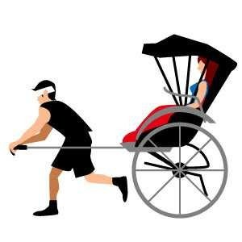
その他の療法
★ゲシュタルト療法
「ルビンの壷」で有名な、
ゲシュタルト療法の創始者です。
「ゲシュタルト」（Gestalt ）は、
ドイツ語で「かたち」「形象」をいう言葉。
直接は「ゲシュタルト心理学」から由来した言葉と思われますが、その意味づけは参禅体験などと深くつながっています。
彼の考え方には、エーリヒ・フロム や鈴木大拙 などの影響も色濃く見られます。
東洋的な瞑想や精神統一の体験を基盤に取り込んだという点では、
ユージン・ジェンドリン のフォーカシング と似ています。
彼のセラピーでは、過去になにをしたか、
それはなぜなのかを問うことはしない、
「今・ここ」で、「いかに」・話しているか、
「なにを」・話しているかを問題にする。
それを気づき、体験すること、そこから全身全霊的な気づき、覚醒を目指し、そこで自分自身であるという自由を取り戻すことを目的とする。
やり方としては、構成的エンカウンターとして行われることが多い。
ゲシュタルト療法の手法というのは、
心理学や哲学の手法を広く取り入れており、それらを精神と身体の完全統一という考え方に基づいて、セラピーの療法として統合したものである。
この療法の目的とは、活動におけるより確立した独立と、自然な成長を阻害する障害物に対処する能力を、患者自身が獲得することを助けることにある。
＊「ルビンの壺」とは、
右の図のことです。
あなたもどこかで、見たことが
あるのではないでしょうか？
向かい合っている人にも見えますし、
壺にも見えます。
先方が、クレームを言っているのか、
要望を伝えようとしているのか、
見極めなければいけません。
★系統的脱感作法
古典的条件づけを応用した代表的なテクニックです。
古典的条件づけとは、簡単にお伝えいたしますと
有名な「パブロフの犬」があります。
「パブロフの犬」とは、
- １．犬に決まった音を聞かせる。
- ２．決まった音を聞かせながら、エサをあげる。
- ３．それをある一定期間繰り返す。
- ４．音を聞かせただけで、犬はよだれを垂らすようになる
どこかで聞かれたかもしれませんね。
この療法は、あなたにとって不安レベルの小さい場面や心理状況から
不安レベルの大きい場面や心理状況に、徐々にチャレンジしていく方法です。
先にもお伝えいたしましたが、
脳は非常にクセがつきやすいものです。
じっさいに行動してみて、
「怖くないんだ、」
「危険ではないんだ」
と脳に認知させるのが目的です。
それを繰り返すことによって、
認知のゆがみを直し、
普通になんともなくなるように、脳にクセづけをしていきます。系統的脱感作法は、
「不安階層表」を作成し、それに沿って実行していきます。
「不安階層表」は、カンタンに作成できますので、
ご自身で作成してみてください。
以下、例えとしまして、
カブトムシが怖いという方の場合を書かせていただきます。
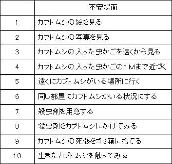
１． の簡単な状況から、少しずつ難しい状況にチャレンジしていきます。
わたしの場合は、電車に乗ることができなくなったので、電車の絵を見ることから始め、駅の前まで行ってみる、
入場券を買って、ホームに立ってみる
という形で少しずつ慣らしていき、
克服することができました。
★言語治療（ロゴセラピー）
「逆説志向の原理」を考え出した、
ロゴセラピーの祖、ヴィクトール・フランクル博士の恐怖・不安撃退法をご紹介します。
もし、あなたが赤面症で悩んでいたとします。
人前に出るとどうしても赤面してしまって困っている。
赤面することを考えると、外出するのもだんだんとおっくうになってきます。
そこで、
「逆説志向の原理」の登場です。
無理に顔を赤らめるように頑張るのです。
あんたもやってみれば分かると思いますが、顔は赤くなりません。
いくら頑張ってもです。
他の事例をご紹介します。
手がいつも湿っていて、
紙をさわっても、濡らしてしまい、
それが気になって、異性と接近することができないという方です。
自分に話しかけてみるのです。
「手が汗でびしょびしょだって？ そんなこと、ひゃくも承知だよ。
よし、こうなったら、バケツに満タンにしてみんなを驚かせてやろう！ 記録ものだな」
〈ＮＬＰ〉
★ＮＬＰの歴史
１９７０年代米国で、
言語学者ジョン・グリンダーと
大学院生だったリチャード・バンドラーが
３人の著名な心理療法家
のコミュニケーション術を研究して、体系化したものです。（心理学の知識は豊富なのに、コミュニケーションスキルが
低いために、患者の深層部を解決できない心理療法家は
たくさんいます。）
＊３人とは
・ミルトン・エリクソン（催眠療法家）
彼はアメリカ臨床催眠学会の創始者で、初代会長も勤めた。
その他、アメリカ精神療法協会、アメリカ心理学会 、
アメリカ精神病理学会などのメンバー。
晩年は催眠の臨床性・実践性向上のため、
精力的にワークショップを開き世界各国を行脚した。
にもかかわらず、日本への訪問は３度目のポリオ発病のため、ついにかないませんでした。
精神療法 にしばしば斬新な手法を用いた事で知られる。
「治療に抵抗するクライエントなどいない。柔軟性にかけるセラピストがいるだけだ」。
この言葉に端的に表されるように、 彼の技法は「ユーティライゼーション
（Utilization ：利用できる物はなんでも利用する) 」を旨とした、
臨機応変・変化自在なもので、その名人芸は「アンコモン・セラピー」、
「魔術師」と呼ばれています。
クライエント ごとに異なるアプローチをすべきという信念から、
自らは技法の体系化は好まなかった。
しかしエリクソンの影響を受けた弟子や共同研究者たちへ、
それぞれ独自の治療技法を構築し、
総称して短期療法 と呼ばれる一派を形成しました。
とくに家族療法 への影響は大きく、
グレゴリー・ベイトソン のダブル・バインド 理論は彼あってのものである。
彼は大学時代にのべ２０００ 人以上に催眠実験を行ったと言われる。
彼の催眠技法は非常に広汎かつ独特なもので概説は困難であるが，
その根本にある考え方は、催眠はコミュニケーションの一つだというものであった。
そこで，彼は自分が気づいたダブルテイクや，
言葉の命令的側面，呼吸や抑揚に関する理解などを
催眠誘導に持ち込む事で，催眠誘導を非常に巧みに行った。
又，普通の会話と催眠誘導の境界を曖昧にした。
つまり，普通の会話の中で自由に催眠誘導と行き来した。
従来の催眠（古典催眠 ）とは大きく異なるため、エリクソンのそれは現代催眠 、エリクソン催眠 と呼んで区別するのが一般的である。
＊フリッツ・パールズ（ゲシュタルト療法創始者）
「ルビンの壷」で有名な、
ゲシュタルト療法の創始者です。
フリッツ・パールズのゲシュタルトについては、さきほど触れましたので、割愛させていただきます。
＊バージニア・サティア（家族療法家）
バージニア・サティアについての文献は非常に少ないです。
分かる範囲でお伝えします。
ノーベル平和賞の受賞者のよって開発される
インターナショナル会議のメンバーとして活躍していました。
ＮＬＰ創始者のひとりのリチャード・バンドラーが
学生時代に、バージニア・サティアのテープ起こしをし、深く感銘をうけて、
のちに、バージニア・サティアの手法である７つのパターンを取り入れたと言われています。
３人の著名な心理療法家については、ここまでにさせていただきます。
★ＮＬＰの発展
米国では元大統領（レーガン、クリントン）やトップアスリート達が
利用していることから、かなり社会的認知度が高くなっています。
メンタルヘルスへの関心の高まりにつれ、
欧州・アジアでも特に最近注目を集めるようになってきています。
おもしろいところで、陪審員を説得するために
弁護士がＮＬＰを学んでいます。
世界№１カリスマコーチのアンソニー・ロビンズも
このＮＬＰの数々のテクニックを使っていることから非常に
有名になりました。
最近はやりの、
自己啓発セミナーやコーチングセミナーなどでも
やはり、
ＮＬＰのテクニックを取り入れています。
★潜在意識にアクセスする
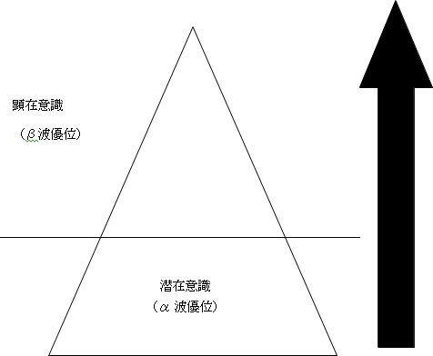
ＮＬＰのテクニックを使って、
潜在意識に働きかける。
潜在意識に働きかけるには、
顕在意識を思考停止にする必要がある。
そのためには、普段使っている左脳を
混乱させるために、
本を逆さから読んだりしてみてください。
全く意味はわかりませんが、混乱してきたときに、
誰からも好かれている自分をイメージしてください。
すんなりと成功イメージが潜在意識に入ります。
★うまくいくＮＬＰの考え方
以下の４つの考え方を意識してください。
①必要な資源（リソース）は全ての人が既にもっている。
↓ ↓ ↓
全てではない 知識・経験・希望 「できる」ではない。
今はできないけれども、できるように
なる、リソースはもっている。
＊あとはそのリソースをどのように活用するかということだけ
（目標達成にフォーカスする。
自分の気分にムラがある方は、自分の気持ちにフォーカス
している。）
↓
会話は人間関係を円滑にするために存在するのです。
あなたの気分を良くするために、話し相手は
貴重な時間を割いているのではありません。
②いつでも人は現在可能な最善を尽くしている。
↓
「あのときに、違うやり方をしていればうまくいったかも
しれない、」という
「たら」「れば」の世界はない。
＊したがって選択肢が増えると人生も変わる
子供は無限の可能性を秘めている、という言葉がありますが、
大人も同じである。
自ら、選択肢の幅をせばめているだけ。
21 歳 事業に失敗する。
22 歳 選挙に落選する。
24 歳 またもや事業に失敗する。
26 歳 恋人の死をのりこえる。
27 歳 ノイローゼになる。
34 歳 下院議員選挙に落選する。
36 歳 下院議員選挙に落選する。
45 歳 上院議員選挙に落選する。
47 歳 副大統領になりそこなう。
49 歳 上院議員選挙に落選する。
52 歳 アメリカ合衆国大統領に就任する。
失敗の連続の、右記のひとは、
かのエイブラハム・リンカーンである。
彼は、うまくいかないときでも、自分の選択肢をせばめなかった。
勝因はそれである。
③全ての行動は肯定的意図によって起こる。
↓
「見たくないものは、見ない」
「したくない事は、しない」
判断は自らが行っている、そこには、何らかの意図がある。
＊全ての行動は役立っている
（やりたくもないゴマスリをするのも、
良好な関係を築くという意図のもとでの行動。
下げたくもない頭を下げるのも、「礼儀をわきまえていますよ」と相手に伝える意図のもとでの行動。）
（（やけ酒を飲むのも、自分を追い込みすぎないという
意図のもとでの行動））
④誰かにできることなら、自分にもできる。
↓
うまくいくコツはモデリング
↓
マネをする
例：ある会場で、テニスボールを縦に２つ重ねて立てるという
遊びをしました。
司会者はみんなに向かって、
「これはオリンピック選手が集中力の育成のためにする
トレーニングです。」と伝えると、だれもできませんでした。
しかし、司会者がみんなに向かって、
「僕はこれを３分で、娘は１分でできました。」と伝えると、
ほとんどの人が３分以内にできてしまうのです。
ほとんどの「できない」は自分勝手な擦り込みであると気づく必要があります。
＊ あとはそのやり方を知るだけ
好かれている、人気のある人のモデリングをしましょう。
・同じブランドの服を買ってみる。
・似たメイクをしてみましょう。
・話し方、間合いをマネしてみましょう。
・同じ店で食事をしましょう。
・しぐさをさりげなく、マネてみましょう。
メガネ、髪型などモデリングの要素はたくさんあります。
好かれているひとを、しっかりと観察することから始めてください。
★うまくいくＮＬＰの前提条件
まず、以下の３点を頭に入れてください。
① 地図は領土ではない
人は現実に反応するのではなく、
現実を描いた地図に反応するのである。
（ＮＬＰ的地図とは、「感情」のことや、
「どう捉えるか？」という意味で
使われます。）
↓ 言い換えると
人は目の前に起こった事実に反応するのではなく、
自分がどのように感じたか、に反応する。
＊記憶はウソをつく。事実ではなく、自分の都合で記憶している。
（現代の脳科学では常識です。）
②相手のフィールドに入る
相手の地図を尊重するのはコミュニケーションの基本である。
↓ 言い換えると
相手がどのように、感じているかを察してあげるのが、コミュニケーションの基本である。
＊「言葉とは裏腹に」という言葉があるように、
相手がどのように感じているかが重要。
③相手の反応がコミュニケーションの成果である
↓ 言い換えると
相手に伝わって、はじめてコミュンケーションがとれたことになる。
伝わらない言葉は、独り言。
★ＮＬＰの４法則
①失敗は存在しない、ただフィードバックがあるだけ
行動を起こせば、必ず、結果がでます。「結果」のみにフォーカスしすぎると、人間関係の基本の
「思いやり」→「与える」→「受け取る」に目がいかなくなります。
与えるはモノに限らない
○○という話し方で自分の思いを伝えたけれども、相手に伝わらなかった。 ＝ 伝わらない話し方を知った
↓
ただ、これだけの意味です。
それ以上でも、それ以下でもありません。
落ち込む理由がありません！
しかし、人間関係は「思いが正確に伝わる事」がなによりも重視されます。
結果をだすためには、情報収集が必要なのは、あなたも知っていますよね。
伝わらない話し方という情報を集めている人が非常に少ないのです。
要するに、貴重な情報なのです。（周りのひとや恋敵に差をつけることができます）
↓
「学生時代の定期試験で予め、ひっかけ問題と
その答えを知っているようなモノです。」
この伝わらない話し方という情報を検証すると、
伝わる話し方が見えてきます。
なんだ、じゃあ数をたくさんこなさなければ、ならないんだ
と思われた方は、非常に危険です。
人間関係の基本の
「思いやり」→「与える」→「受け取る」ができていない証拠です。
答えは、目の前にあります。
納得してもらえなかったその場で、相手に聞いてください。
「○○があなたは受け入れられないというのは、わかりました。
どのような感じであれば、受け入れられますか？」
人の感情の答えは、必ずあります。
「△△だったら。。。。。。、、、、、、」
色々な答えが想定されます。
・言い方かもしれません。
・イントネーションかもしれません。
・その話題に魅力がないのかもしれません。
・たまたま機嫌が悪いだけかもしれません。
・他の人のほうがいい、と思っているのかもしれません。
・あなたが嫌いなのかもしれません。
あなたが会話するときにそこに（拒絶する理由）、フォーカスしなければいいだけの話です。
原因が「言い方」だったとします。
ということは、
「その言い方」は伝わらない話し方だとわかります。
次回は、もしくは違うひとには、
その「言い方」は使わないことです。
納得を得るのが苦手なあなたは、
「言い方」は生まれつきであって、変えることなどできない！
と言うと思います。
それは、
「うまくいくＮＬＰの前提条件」のところでお伝えしたところをもう一度、読み直してください。
「言い方」が理由になるのは、あなたが相手に、
「言い方」という地図を見せながら、
会話しているからなのです。
「言い方」が理由の場合は、
それが本当でない可能性が高いです。
なぜなら、ひとは感情で行動を起こすからです。
行動を起こしてから、その行動の理由づけをするのです。
考えてもみてください。
年収４００万円のサラリーマンがローンを組んで、
３０００万円の家を購入するのです。
冷静に考えたら、
メチャクチャな話だとは、思いませんか？ピンとこない方は、
生涯賃金と利息を含む住宅ローンの支出を計算してみてください。
（固定資産税もかかりますし、修繕費用も必要です。）ヒトは値段でモノを買わないということがご理解頂けると思います。
（この場合は、営業マンが気持ち悪いとか、言い方が気に入らないと
いう理由で購入を見送るということは稀です。）
持家で言えば、あれは明らかに夢を買っているのです。
持家を持つことによって、得られる素晴らしい生活、
幸せな生活が手に入るという、夢（イメージ）を買っているのです。
＊新しい学びをいつでもうけとれる
② 問題、制限とは「チャンス」である
言い方・機嫌・イントネーションなどさまざまな伝わらない制限があります。
制限がなければ、納得に至るのです。（思いが伝わるのです。）制限を取り払った会話をしましょう。
（制限が分かれば、伝わる話し方が見えます。）
＊そこから学ぶことは大切な意図を知ることである
③ うまくいかなかったら、別の表現を試してみる
１つの「言い回し」にこだわっていませんか？会話にもセグメント分けは重要です。
男女？20 代、30 代、40 代？
オシャレに興味があるのか、ないのか？既婚・未婚？ 子供の有無？
各セグメントによって、伝え方は全然違います。
あなたの話したい内容のメリットを伝えてください。
特徴はいりません。時間の無駄です。
( 例) 10 代や20 代前半に若返りの話題はピンときません。
いくらあなたが一所懸命、精神誠意込めても、伝わりません。
その場合は、将来のメリットや中年の活躍している人を
例にあげて、メリットをイメージしてもらうのです。
そうすることによって、相手はメリットをイメージしながら、
会話するので、あなたとの会話は夢にあふれた魅力的なものに
なります。
＊柔軟性の必要性
④人はいつでも完全に機能しているもの
「なんで、伝わらないの？」と少しでも思わないことです。
あなたが人の話を聞いている時に、相手がそのような態度をとれば、あなたはどんな印象をうけますか？
もう二度と、余程の事がない限り、その人の話をマジメに聞くことはないでしょう。
同じ職場や同じサークルの場合は、
「なんで、伝わらないの？」という態度がばれても会話をしてくれます、仕方なしに。
話し相手があなたから変わったとたん、「大盛りあがり」という格好悪いおまけつきですが、、、
一生懸命、説明したのに・・・・・一生懸命、○○したのに・・・・・
一生懸命するからいけないのです。
ＮＬＰで考える会話は、熱意ではないのです。
相手に役立つ情報を発信していれば、好かれます！
思いが伝わります！
＊尊重し慈愛の心を忘れないこと
★キャリブレーション（観察）
相手がどのような心理状態にあるかを、言語以外で見分ける
ための情報収集法をキャリブレーションという。
言葉以外で、相手が今どのような状況にあるのかを見抜く観察力はＮＬＰの基礎です。
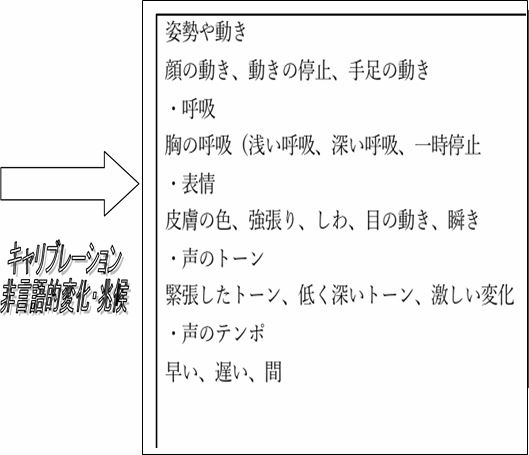
相手の変化に注目すると、観察しやすい。
相手、そして自分自身の変化に気づけば、
↓
問題としている状況がどのように、
または、自分の望む方向に推移しているかどうか
がわかる。
★コミュニケーション
ＮＬＰでは、次のように考えています。
コミュニケーションをとる上で、
相手にどのように伝えるのか？
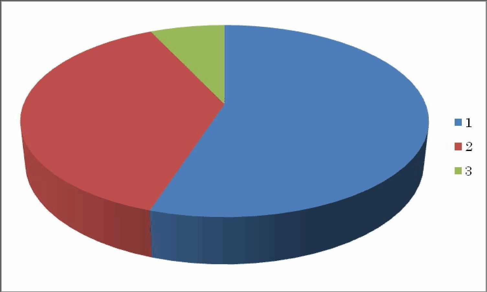
右のグラフは、相手に伝わる割合です。
１．ボディ・ランゲージ（ノンバーバル） 55 ％
２．声のトーンやリズム（バーバル） 38 ％
３．言葉（バーバル） ７％
ひとは、バーバルとノンバーバルが一致すると
相手の言いたいことが伝わると言われています。
一本調子で、言葉だけで会話をしていませんか？
相手に伝わっていない ＝ ただの独り言 ＝ 迷惑なだけ！！何度も同じ内容の会話をしていて、
「さあ、この話題は５回もしているし、
相手もしっかり、理解してくれて、
どこでウケルかもわかっている。」
このような場合でも、
ノンバーバルな部分、（視覚に訴えかけるもの）は、必ず、要ります。
コミュニケーションは、
バーバルとノンバーバルが一致したときに、伝わるのです。
これは、噂話などの実物がないものや
遊園地のように、持ち歩くことができないものでも同じです。
身振り手振りや雑誌があります。
もうわかっているよ！
という場合でも、雑誌や切り抜きなどにペンで指差しながら、バーバルとノンバーバルのバランスを
意識しながら会話してください。
「もうわかっているよ！」と思っているのは、
あなたです、話し相手ではないのです。
逆の立場で、考えてみてください。
「例の件ですけど、もう十分おわかりいただいてますよね」という態度に、イヤな気分にならないでようか？
★コミュニケーションの流れ
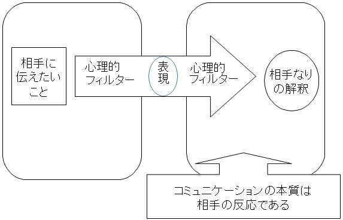
「色めがねで見る」という言葉がありますが、
だれしも、「色めがね」で事象を見ているのです。
「十人十色」とは、まさに的をえていますね。
相手の心理的フィルター（色めがね）と
あなたの心理的フィルター（色めがね）を一致させるには、
ノンバーバルが必要になってきます。
身振り、手振りもそうですし、雑誌を一緒に見る、パソコン画面を一緒に見る。
同じ地図を見ることによって、言いたいことを伝える時間は驚くほど短くなり、
相手に伝わる情報量は、驚くほど増えます。
★ラポール（信頼関係）Rapport
語源はフランス語です。
ラポールとは相互信頼感のことです。
信頼関係が成立し、
互いに理解しあえるような居心地の良い状態をいいます。
ラポールはどんな人間関係においても意思疎通を
はかるための基礎となります。
良い関係を築くには、必須でしょう。
なぜ、ラポールは必要なのでしょうか？
信頼がある関係では、本音の付き合いができます。
また人は、信頼することによって
自分をオープン（自己開示）にできます。
信頼がないと、
「この人にここまで話して大丈夫だろうか」
「これ以上聞いたら迷惑じゃいか」
と不信感や不安が生じます。
親密になるのを避けるのです。
そうなると
相手もあなたに対してオープンではなくなります。
信じている相手に信頼されるためには，
信じてもらえるだけの自分がなければなりません。
根本的には、相手を信じ続けるという自分自身を、どれだけ信じられるか、
ということです。
ラポールは、相手だけでなく，自分自身とのラポールでもあるのです。
★ラポールの技術
・ペーシング 同調する、味方である、イキがあう波長があう
親近感をもつ
理解してくれそうだと思ってもらえる
（ペーシングはラポール構築の初歩）
・リーディング ペーシングした相手を、相手を尊重しつつ
自分の望む方向へ導く。
ペーシングできなければ、不可！
☆ペーシングの基本
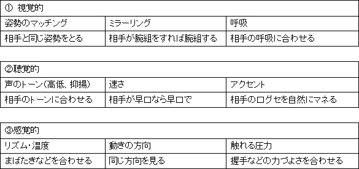
☆クロスオーバーミラーリング
相手がお客さんや、年上のときにミラーリングできないときに使う。
例：相手が足を組めば、自分は足を交差させる。
相手が腕組すれば、自分は両手を組む。
相手がお茶を飲めば、自分は少し飲む。
☆マッチングとミスマッチ
自分の外的表現を（態度や言葉）を相手の外的表現にあわせていく。
「マッチング」とは、ペーシングを続けることです。
↓
相手の動きに合わせたり、同意したりを続けていく
一方「ミスマッチ」は、話を変えたいときに使います。
ミスマッチは「ディスペーシング」することで、可能になります。
「ディスペーシング」とは、ペーシングの反対のことをすればいいのです。
↓
相手の動きとは、逆の動きをします。
・相手が腕組をしていないのに、腕組をする。
・相手が乗り出してきた時に、背もたれにもたれる。
・相手が質問しているのに、お茶をのんだり、鞄のなかを
さぐったりする。
＊彼女の話をしたくないときに、相手が彼女の話をもちだそうとしたら、
ディスペーシングするなどして、空気を変えることは重要です。
★ペーシングの実践
☆ペーシング 相手のスピードやテンポに合わせる
方法
・呼吸
・話すスピード
・声の高低
・抑揚
☆ミラーリング 鏡のように相手の動きや姿勢に合わせる
方法
・身体の動き
・姿勢
☆バックトラック（オウム返し）
相手の感情的な言葉を、そのまま反復する。
本人も気づいていないニーズが意識化される。
バックトラックは非常に有効な作戦です。
例:
相手「最近、体調がわるくてねえ」
自分「最近、体調がお悪いんですねえ」
相手「景気はどう？」
自分「景気はどう？ってよく聞かれます。
......（状況に応じて続けてください。）」
以上のように、相手が話したことを
そのまま、返すのです。（長い話の場合は、要約する）
相手は、「しっかりと話を聞いてもらえている」と安心するのです。
「そうですね」「そうなんですか」は ダメな典型です。
＊バックトラックするときの注意点
もし、相手がネガティブな表現を使ったとき、
たとえば、だれかの悪口や
悪い噂話を言ったときは、
↓
「○○さんは、△△さんが悪いとお感じになられているのですね。」
と、必ず、発言者がそう思っているというバックトラックをしてください。
（隙があれば、なぜそう思うのか情報収集してください、
注: だれかの悪口以外の場合のみ）
そこで、普通のバックトラックをしてしまうと、
その場は、打ち解けることができますが、
あとになって、相手がふとした時に
「アイツは人がいないところでは、悪口を言うヤツだ」となってしまいます。
ネガティブな話の場合は、必ず、
「あなたは・・・・・・と感じておられるのですね」
ときりかえしてください。
ネガティブな話がでたときは、情報収集だけして、すぐに、
ディスペーシングして、話題を変えてください。
でないと、
相手の記憶には、あなたと会話したときは、
いい話がでないと、擦り込まれてしまいます。
あなたの思いとは関係なく！
★ペーシングとディスペーシングの例
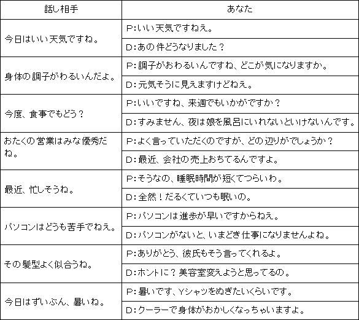
以上の例は、日常のほんの一部だと思います。
暇な時や、移動時間にこれらを考えておく
ことによって、驚くほど会話上手になります。
悪い噂好きのひとほど、長話が好きだたりするので、
失礼のない、ディスペーシングがあなたの気持ちの余裕や
持ち時間を飛躍的にのばしてくれます、
しっかり練習してください。
★サブモダリティについて
人は、五感で感じると言います。
話し相手は、言い方や予定ではなく、感情で行動を決定するというのは、すでにお伝えしたとおりです。
感情で購入し、あとでその行動を、理屈でじぶんを納得させるというのは、
今やマーケティングの常識です。（ビジネスも人間関係も同じです）
五感とは、あなたもご存じのとおり、
視覚（Visual ）
聴覚（Auditory ）
触覚（Kinesthetic ）
嗅覚（Olfactory ）
味覚（Gustatory ）
ですね。
ＮＬＰでは五感のうちの３つ
・視覚
・聴覚
・その他の感覚（体感覚）
を重視して考えます。
サブモダリティとは、
・視覚
・聴覚
・体感覚
で感じた感情を細かく、小さな部品にすることを
いいます。
○ モダリティ 五感（ＶＡＫＯＧ）
↓
３つの表象系システム
○サブモダリティ（Submodalities）
３つの代表システムを更に具体的に、細かく分析したもの
具体的には、人が周りの世界を五感を通じて認識する際に使用した様々な構成要素のことを指します。)
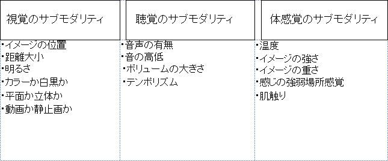
知覚・経験した内容は以上の３つの
サブモダリティ（視覚・聴覚・体感覚）の
各論で認知され、記憶されます。
現代人は、一日にだいたい文庫本１７０冊ぐらいの情報がはいってくるそうです。
それらを脳が、無意識に必要のないものは省いているので、
顕在意識下では思い出す事ができません。
サブモダリティをリフレーミングすることによって、あなたの会話人気度は劇的に変化します。
（リフレーミングについては、のちほどご説明いたします。）
★アソシエーションとディソシエーション
感覚入力の要素
ディソシエーション（傍観者の立場）
......他人が撮ったビデオをみる感覚
嫌な事を思い出すときに使うとよい
アソシエーション（当事者の立場）
......自分が撮ったビデオを見る
主観的に見れる
視聴感のコントロールパネルを操作する
この二つの概念は、ある人を映画の
主人公にしたり、観客にしたりする事
と考えると理解しやすい。
好き嫌いなく、だれからも好かれる人になりたければ、目を閉じれば、いつでもディソシエーションの状態で、自分をみれるようにしてください。
練習の仕方としては、
ミニチュアをつくるもよし、
絵をかいて、絵の上で、駒を動かしながら、コレが自分
コレがお客、という風に上から眺める練習もいいでしょう。
この方法が身につけば、実践編が楽にできるようになります。
表象系
一般的には、視覚・聴覚・感覚（味覚、嗅覚含む）の三つの傾向として考える
名作と呼ばれるものには、３つの要素が含まれている
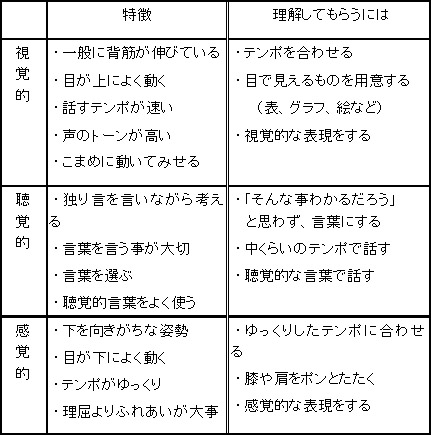
★アンカリングについて
アンカリング（Anchoring）
無意識のアンカー サブリミナル効果
繰り返しのアンカー ＣＭ，条件反射
瞬間のアンカー 大きな影
アンカー（船のイカリ）
特定の反応と条件付けられた刺激
アンカーとは、その時に抱いた感情と共に、
その経験全体を呼び起こすことができる。
例 昔の歌を聴いて思い出す
ある臭いや味で当時を思い出す
再アンカリング・インステート→中和のアンカリング
簡単にアンカリングをお伝えすると、
過去にあった
・うれしい体験
・気持ちよかった経験
・幸せを感じた瞬間
などを瞬時に呼び戻せるようにし、
いつでも、爽快な気分で過ごせるようになるテクニックのことです。
現代は複雑でストレス因子も多く、へこまされることも多々あると思いますので、
しっかりマスターしてください。 詳しくは実践編でご紹介します。
再アンカリングとは・・・
アンカリングを呼び起こす際に、
３つの表象系を使い（視覚・聴覚・体感覚）、
すぐにいい状態にもっていける状態にする技法です。
１．視覚的 特定のジェスチャー、色、明暗など
↓
たとえば、「赤」をみるとアンカーが起こる。
２．聴覚的 特定の言葉や声の調子、速さ、距離など
↓
たとえば、「きたよー」という言葉を発するとアンカーが起こる。
３．感覚的 腕に触れたり、手を組む、リズムなど
↓
たとえば、決めた通りに手を組むとアンカーが起こる。
インステートとは・・・
アンカリング（気持ちのいい状態）に浸っている状態。
これができると、嫌なできごとがなくなります。
詳しくは、実践編でお伝えします。
★リフレーミングについて
リフレーミング（Reframing）
ピンチをチャンスに変えるのは、誰にでもできる
リフレームというのは、「フレーム（枠組み）を変える」という
ところからきている。
フレームを変えると（地図を変える）と、意味が変わる。
意味が変わると、「見方」や「捉え方」が変わり、
次に反応・行動が変わる。
△ 状況リフレーミング
どんな行動にも、何らかの役には立つ。
△ 内容リフレーミング
どこに焦点を当てるかによって、経験したことの内容が決まる。
そして、どのような意味を持たせることができる。
何事においても前向きだ、と言われる人々は、知らず知らずのうちに
「リフレーミング」をしています。
リフレーミングを身につけると、
伝わらない話し方をしている最中でも、気がついた瞬間から、
伝わる話し方に会話中に変更していけるようになります。
・状況リフレーミング
あなたもご存じの、「みにくいアヒルの子」は、小さい頃
一見、辛い思いをしていました。
がしかし、気がついてみると、
美しい白鳥になっていました。
今、あなたが人とのコミュニケーションに苦しんでいるとしたら、
伝わらない話し方を集めている最中なだけなのです。
どんな行動も、たいていは何らかのときに役立ちます。
状況リフレーミングは、以下のようなときに有効です。
「わたしは・・・・・・し過ぎるのです。」
「わたしは・・・・・・しがちなのです。」
「わたしは・・・・・・をやめられないのです。」
例: 「わたしは、ひとの話を聞かな過ぎるのです。」
（ガンコなんです。）
↓
「信念のひとなんですね。」
「わたしは、意思が強く、決めたことをやりとおす事ができます。」
フレームを変えることで、
全く、異なった印象を受けるのではないでしょうか？
これが、状況リフレーミングです。
・内容リフレーミング
どこに焦点をあてるかによって、
経験したことの内容が決まります。
そして、どのような意味をもたせることも可能です。
状況を変えずに、内容を変える方法、それが内容リフレーミングです。
例: 「親が四六時中、わたしを怒鳴りつけます。」
↓内容リフレーミングすると
「親は、いつもわたしに本音で話してくれます。
心を開いてくれているんです。」
「今年はボーナスが少なくて、クリスマスプレゼントも買えない」
↓内容リフレーミングすると
「 今年はチャンスだ。
店で売っているありきたりの品物より、
心のこもった手紙をおくることができるぞ！」
このように、内容リフレーミングすることによって、
状況は変わらなくても、
全く違った感じ方・伝え方になるのです。
＊内容リフレーミングを行うときに意識することは
・この行動は、他にどんな意味をもっているのだろうか？
・この行動には、どんなプラスの価値があるだろうか？
・この行動は、他にどんな表現方法があるだろうか？
リフレーミングはＮＬＰのテクニックの中でも、一番のあなたの味方です。
是非、マスターしてください。
ポジティブリフレーミング
どんな状況、内容でもリフレームすることによって、プラスの地図
を見ることができる。
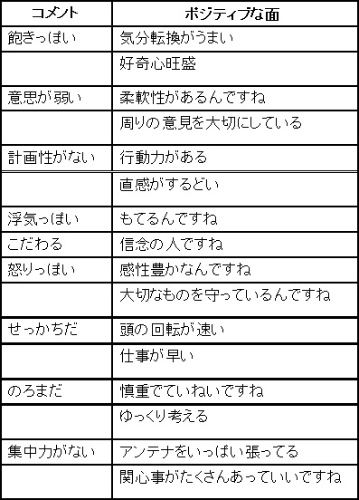
ポジティブリフレーミングをマスターするのは、簡単です。
反対の反対をいい言葉で、言い換えるとポジティブリフレーミングになります。
例: 消極的なんです。
↓反対は
積極的なんです。
↓悪く言うと
でしゃばり なんです。
↓反対は
控え目なんですね。
ポジティブリフレーミングの前提条件
マイナスの要素というのは、少ないということです。
言い換えると、
「少ないから目立つのです。」
短所が目立つ人は、
短所が少ない人なのです。
長所が多くて、短所がすくないゆえに、
短所に目がいってしまうのです。
これは、脳の特性で、
希少性のあるものにひきつけられるのです。
逆説的にいえば、
短所の多い人は、短所が目立たないのです。
★６ステップのリフレーミングについて
６ステップのリフレーミング
基本となるのは、まずその行動から本来の意図（二次利得）を分離し、現在の全体性とバランスがとれる新しい選択肢を見つけることである。
①変化させる行動または、反応を特定させる
②その行動をさせている「元の部分」との間のコミュニケーションを確立する
③プラスの意図を行動から分離させる
④「創造的な部分」に、その意図を満たす新しい方法を三つ以上見つけてもらう
⑤「元の部分」に新しい選択肢を受け入れてもらう
⑥エコロジーチェックする
最後に、「未来ペーシング」して、自己パターンとして取り入れる
＊二次利得とは、タバコは体に悪いと知りながら、
リラックスできる、というのが二次利得。
６ステップのリフレーミングは、
自分の行動・習慣・感情その他のパターンを簡潔に、変更させるテクニックです。
- １．自分では止められない、望ましくない行動をピックアップしてください。
- ２．自分の心に意識を向け、その行動（望ましくない行動）をとらせている自分に、まず感謝してください。
＊自分自身とコミュニケーションをとってください。 - ３．私は、どのような理由で、このような行動をとるのか自分自身に聞いてみてください。
＊ポジティブな意図が明確になるまで、自分自身と対話してください。 - ４．より適切で、そして、バランスのとれた新しい選択肢を見つけ出してください。
- ５．４で見つけた新しい選択肢を受け入れましょう。
今後３週間、新しい選択肢を使い、試してみることに責任をもてるか、自問してください。
責任が持てそうにない場合は、別の選択肢を考えてください。 - ６．この新しい選択肢に抵抗感がないことを再確認してください。
抵抗感がないのが、確認できたら、未来ペーシングしてください。
未来ペーシングとは
「今回、見つけだした新しい選択肢を実行できている
未来のあなたをまざまざと想像して、感じることです。」
＊イメージトレーニングに慣れていないと、はじめは難しく感じますが、会話美人になるためには、必ず、身につけてください。
スポーツ選手などは、偏差値が低くても、みなイメトレの達人です。
★メタモデルについて
メタモデル（ Meta Model ）
コミュニケーションの際に、会話の中から取り除かれた
情報を得ることにより、深層構造（地図がおさまっている）
を回復する。
＊質問しずぎると、ラポールが途切れることがある（質問攻め）
特に「なぜ」という問いかけはしない。
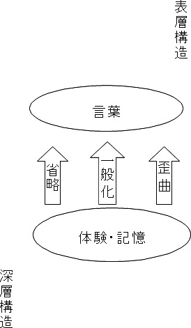
＊メタモデルとは
メタモデルとは、情報収集の質問の事をいいます。
つまり、相手の潜在意識に
隠された意図を引き出すのです。
メタモデルは
・一般化
・省略
・歪曲
の３つに分けることができます。
★メタモデルの目的について
メタモデルの目的
①言語と体験を再統合する
②情報収集
③意味を明確にする
④制限しているものを発見する
⑤ 選択の余地をつくりだす
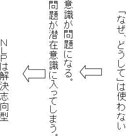
＊相手に質問を投げかけるときは必ず、
「 which 」「 how 」から始めるのを覚えておいてください。
「 why 」 （なぜ）の使用は、非常に危険です。
一瞬にして、相手が心を閉ざす可能性大です。
あなたも、質問されるときに「なぜ」からはじまると、
なにか、詰問されている気分になりませんか？
「why 」にはくれぐれも注意しましょう。
メタモデル「省略」
私たちは、何かを相手に伝えようとしている時に、自然と詳細を
省いています。
「昨日の会議で決まったよ」と伝えても、誰が
何を、どの会議できめたのかがわかりません。
このように会話の中で、省略はたくさん行われているのです。
▲ 省略① 不特定名詞
・みんなが私を馬鹿にする― 「誰が」
・このビルは昨年建てられた― 「どのビル」
・犬は迷惑だ― 「誰の犬？どんな種類の犬？」
▲ 省略② 不特定動詞
・わかるわかる― 「何がわかったんですか？」
「どのようにわかったんですか」
・それを思い出そうとしている― 「どのように思い出すの」
・沖縄へ向かった― 「どうゆうルート、交通機関で？」
例 ①みんなが私を馬鹿にする、の切り返しトーク
「誰が」 → 「友人と会社の人が」
↓
「じゃあ、みんなじゃないですね。
世の中にはいっぱい人がいます。
思いつくだけでも、家族・親戚・ご近所さんｅｔｃ． 」
②沖縄へ向かった → 「どういうルートで？」
↓
「飛行機で」 → 「飛行場には、どのように？」
このように、さまざまな場面で、人は省略しています。
それを聞き出すことによって、隠れた意図がみえてきます。
▲ 省略③ 比較
・私の方が早い－「何と比べて早い？」
・下手な交渉をした－「何とくらべて」
・努力が足りない－「誰の何と比べて」
▲ 省略④ 判断
・○○内閣はすばらしい－「どのような基準で」
・彼は理想的です－「何を根拠に」
・利己主義です－「どこで利己主義と判断するの？」
▲ 省略⑤ 名詞化
・彼女は批判的だ－「どうように批判的かわかりません」
・構造改革をする－「何をどうようにするのかわかりません」
・景気づける－「何をどのようにすればよいの？」
・有限実行はすばらしい－「誰が、何にたいして、どのように？」
例
③の下手な交渉をした
↓
「何と比べて」 → 「会社の先輩と比べて」
↓
「先輩は一番優秀なの？」 ←「はい」
↓
「全ビジネスマンの中で？」
↓
「いいえ、会社のウチの部で」
↓
「じゃあ、下手かどうかの判断基準が狭すぎて、
下手かどうかわからないよね、
実は、他に反省点があるんじゃないの？」
メタモデル「一般化」
「みんながそう思っている」「こんなの常識だ」と、。
私たちはよく物事を一般化しています。
「もう全ての人が信じられない」という時、「全ての人」が。
実は特定の三人だったりします。それを「全て」と。
信じることによって、「信じる」という可能性を止めてしまっているのです。
無意識に制限をかけてしまっているのでそれを取り払う
↓
人は普通、一般化している事に気づかないで話しています。
それが分かると意識が変わります！
▲ 一般化① 助動詞（可能性）
・私は講師になんかなれない－「本当に不可能なのか」
－「あきらめる口実に使っていないか」
・この会社を辞められない－「もしあえて辞めたらどうなるか？何がそうさせるか」
・これが私の生き方だ－「もしあえて変えたらどうなるか？」
▲ 一般化② 助動詞（必要性）
・この商品は値引きしないと売れない－「もし値引きしなければどうなりますか？」
↓
可能性を探ってあげる
・いつも冷静であるべきだ－「何故、そうあるべきか」
↓
もしそうしたら、どのようになるか質問し明確にします。
思い込みが自分を止める原因になっていることがある。
▲ 一般化③ 普遍的数量詞
・インド料理はおそろしくまずい－「おいしいインド料理を食べたことはないのですか？」
決め付けに対して、反対の例を求めて問うてみる。
メタモデル「歪曲」
言葉の使い方には、勝手な結びつきや隠された前提、
憶測があります。話し手にとっては完璧な因果関係で
あっても、情報は歪曲されている可能性があります。
▲ 歪曲① 等価の複合観念
・美人は冷たい－「どうして美人だと冷たいの？」
「世の中の全ての美人が冷たいの？」
・あなたは笑っていないので、楽しんでいない－「笑っていない事がどうして
楽しんでいない事になるの？」
▲ 歪曲② 前提
・彼はひどい人です－「常にひどいのですか、１００％？」
・どうしてちゃんと仕事ができないの－「ちゃんと仕事をしていないことを
前提としてみている」
・現金にしますか、ローンにしますか－「購入することを前提にしている」
▲ 歪曲③ 因果
・あなたはうんざりだ－「具体的にどのようにうんざりさせるのですか？」
・雨の日は気分が憂鬱だ－「雨の日以外にも気分が悪いときがあるでしょう」
・休みをとりたいが、私がいないと会社が困るので－「休む事によって、どうように困るのですか」
▲ 歪曲④ 憶測
・彼女の愛は冷めてしまった－「彼女の愛が冷めてしまったかどうかは
本人にしか分かりません。」
↓
「どうして、そうようにわかったのですか？」
・こんなに自分は大事にしているのに－「そう思っているのは自分だけで
相手は大切にされていると思って
いない可能性があります。」
↓
「どうして、相手にそれが分かるの？」
と質問してみましょう。
メタ・アウトカム
メタ・アウトカムは、より具体的に詳しい情報を求める
メタモデルとは反対に、その人の求めている、より抽象
的でしかも肯定的な結果を見つける方法である。
例 ：
「親父なんか死んでしまえばいいんだ」
「死んでしまえばいいんですね。もしお父さんが死んだら、それによってあなたは
何が得られますか？」
「今までの仕返しができるから」
「仕返しをしたかったのですか、仕返しをしたら、それによってあなたは何が得られ
ますか？」
「親父に左右されずに、自分の人生を自分の思うように生きられるようになる。
「自分の人生を生きることによって、あなたは何が得られますか？」
「いつも活き活きして、人にも優しくできるし......」
「あなたは、本当はいつも活き活きとして人に優しくしていたいのですね。」
○必要なだけ抽象的な答えを求め、そこから、それを満たすために
具体的で肯定的な方法を見つける事ができる（意思決定）
営業マンを例にあげてみましょう、
「あの客はなんで落ちないんだ」
「落ちることによって、あなたは何が得られますか？」
「今月の数字が達成できる」
「今月の数字を達成できたら、あなたは何が得られますか？」
「ノルマ１００ ％達成して、評価が良くなり、ボーナスがアップします」
「あなたは、評価があがって、ボーナスが増えれば、
何が得られますか？」
続きは、ご自身で考えてみてください。
この話法は相手に伝わる話し方です。
相手の求めている情報を、「ｗｈｙ」を使わずに、聞きだしています。
相手の求めている情報が分かれば、自分の意見を受け入れてもらうのは簡単です。
その情報を提供しながら、商談を進めましょう。
なんとなく不機嫌な人への質問には、このメタ・アウトカムをつかってみましょう。
会話マスターが見えてきましたね。
人との会話やコミュニケーションを前提に説明していますが、
これらは、 自分自身との対話も同じです。
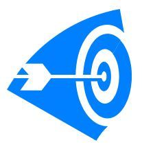
★チャンク
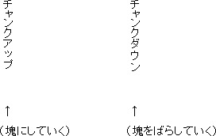
チャンクアップ・チャンクダウン
チャンクアップは、メタ・アウトカムによって、相手の本当に望んでいる方向
に導いていく。
チャンクダウンは、メタモデルを使いＥＱを質問する、そのときに自分で
実行できることでなければ、「他に方法はありませんか？」とふってみる
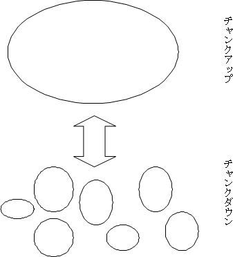
＊ＥＱとは・・・「それが手に入れば、どうなりますか」という質問形式のこと
チャンク・ダウンは簡単ですね。
目標設定の本などでは、よく見られます。
手に入れたい結果を、ひとつひとつバラバラにして、分解していくことです。
例：手に入れたい結果 ＝ １年間で貯金１００万円
↓チャンク・ダウン
１か月の貯金８３，０００円
↓チャンク・ダウン
１週間の貯金２１，０００円
↓
このようにドンドン細かくしていきます。
チャンク・アップは目標がボヤけているときに使います。
例：「人気者になりたい」
「いい人と思われたい」
「告白されたい」
「浮気されたくない」
「有能だと思われたい」
↓
それぞれについて、それを手に入れたらどうなるか（ＥＱ）を考える。
↓
この場合だと「周りの人たちから好かれる」という答えがでるはずです。
そのチャンク・アップして、出てきた答えに対して、チャンク・ダウンすると、
ぼやけていた目標に対しても、
どのような行動を起こせば良いかがわかります。
このチャンク・ダウン、チャンク・アップは、人の相談にのる時にも使えますし、
社内の部下指導や、上司への取り入り、子育てにも使えます。
★コミュニケーション手法
問題分析型コミュニケーションと
解決誘導型コミュニケーション
△ 問題分析型（なぜ 失敗したかにフォーカス）
過去
- １．何が悪かったのですか？問題はなんなの？
- ２．なぜ、こんな問題が起きたの
- ３．どのように失敗したのですか
- ４．なぜ、そんなことをやったの？やらなかったの？
- ５．誰の責任ですか？（誰が悪いの）
△ 解決誘導型（どうすれば成功するかにフォーカス、リフレーミングされている）
- １．次回から、具体的にどういう結果をめざしますか？
- ２．その結果を得るために、何をどうすればいいですか
- ３．それができるということが、どのようにしてわかりますか？
- ４．今回のことで学んだことは何ですか？
- ５．次の機会に、その新しいやり方を試しているところを想像>してみてください。（未来ペーシング）
- ６．言語化する
解決誘導型コミュニケーションの前置きとして、
「起きたことは、起きたこととして」と会話にはいると
自然に、成功するための方法にフォーカスされていく。解決誘導型コミュニケーションの違ったパターンとして、
例えば、
会社の同僚が自分の好みの異性を、食事に誘うのに成功されてしまった場合、
「私の同僚の○○さんと今度、食事に行かれるようですね。
ぜひ、教えていただきたいのですが、
食事に行くことになったきっかけを教えていただけないですか？
話題のお店だったとか、
その日は予定が空いていたとか、
今度、わたしとも行っていただくことはできるかな？？」
以上の質問に相手がひるんだ場合は、
「私も△△さんと食事に行きたいので、
ぜひ、教えてください」
「あのお店は（あの日は）私も気になっていたんです」
などと、切り抜ければ、
険悪になることはありません。
★ミルトンモデル
複雑な行動を明確なモデルとして、学べるように
考えられたパターン
ミルトンモデルのメリット
- １．潜在意識（右脳）にダイレクトに働きかける事ができる
- ２．表層意識の抵抗が起きにくい
- ３．潜在意識にアンカーをかけるのは究極のアンカーといえる
ミルトンモデルの実際
- １．他人の現実をペーシングし、リーディングする
- ２．思考を混乱させ、潜在意識へ繋げる
- ３．無意識とリソースを活用する
- ４．相手に自由な創造をさせ、選択肢を与える
- ５．ポジティブなものが残り、意識がそちらに向くように働きかける
ＥＸ．意思が弱くて困っている。→炭鉱労働者は石が固くて困っている（笑）
①接続詞（リンギング）
リンギングする事により、何の関係もない経験と経験
が、意識及び潜在意識にスムーズにペーシング・リーディングしていくことができる。
接続詞を使うことによって、何か関係があるのかな？と思わせる
②挿入質問（埋め込まれた質問）
この質問は問いかけ、お願いのニュアンスがある
独り言のように語りかける
③挿入命令
ダブルメッセージを提示する。（バーバルとノンバーバル）
④引用
その場にいない第三者が話す文脈を、今、
その相手との話の内容に関連づける
例 ：ミッキーマウスが言ってたけど・・・・
⑤会話文中の要求
通常の問いかけの中に命令を挿入する
（相手は指示されたとは思わない）
疑問文（質問）なのにＹＥＳ，ＮＯで答えないので、
潜在意識に命令文
⑥マインドリーディング
相手の言っている事がはっきり分からないのに、
感情が分かっているように話す
「分かりますよ」の一言で相手は非常に安心する
ミルトンモデルは、
軽い催眠だと思ってください。
とにかく、相手に気づかれないように
混乱させるのがポイントです。
たとえば、
③挿入命令ですが、
アナログマーキングを混ぜます。
アナログマーキングとは、
身振りや、声のトーンなどの非言語（ノンバーバル）での表現です。
Ｅｘ． 通常であれば、大きな声と、
大きなリアクションは
セットですが、
小さな声で、
大きなリアクションをすると
相手の顕在意識は一時的に
混乱します。
⑤会話文中の要求ですが、
例： 「何が欲しいのか 言って いただけますか」
「今までと違う方法で連絡して いただけますか」
このように言われた相手は、
質問されたつもりになっていますが、
相手の潜在意識には、
命令文 が入っています。
↓
結果、
このようなやり取りを繰り返すことによって、
命令する側、される側の上下関係 を
相手にさとられずに、築くことができるのです。
この関係ができれば、
しめたものです。
相手はいいなりです。
知らず知らずに、
命令を受け入れる態勢になっているのです。
こうなれば、説得や思いを伝えるのに時間はかかりません。
さきほども書きましたが、これらは、全ての対人関係に使えます。
（人に対して、自分自身に対して）特に自分に対して、これらのテクニックを駆使するのは効果が
非常に大きいです。
⑦ロストパフォーマティブ（価値判断者の削除）
主語を削除して一般化する
⑧複合等価（ステイタスなどの付加価値をつける）
⑨全称記号
いつもそうであると、イメージさせる
⑩ 様相・環境・状況・操作
⑪名詞化
誰が、どのようになどといった情報が欠落して
いるので相手の都合のいいように解釈してくれる
⑫前提
あらかじめ、ある条件を決めて話をする
強力なリーディング効果がある
⑦価値判断者の削除は、
「ＮＬＰを学ぶことは、いいことですよね」
という感じで、
だれが、というのが抜けているので、
相手は反論しようがない。
（たとえ、その相手がＮＬＰに興味がなくても、
主語がないので、反論する意味も理由もない）
⑨の全称記号も自分の意見を通すときには、有効です。
「○○の飲み会はいつも盛り上がるんですよ」
「この商品は、みなさんがいいとおっしゃるんですよ」
↓
「一般化」させることによって、
同じ意見でない人は、
「見る目がない」と思われたくない心理が働き、
同意してしまう。
⑩は非常に催眠誘導的です。
ＮＬＰのテクニックに慣れてきたら、
使って欲しい技です。
例： 「あなたは、この商品を買わないということを知っていることに
気づきはじめているかもしれません」
↓
一見、意味不明ですが、
それが狙いなのです。
買わない、という意識が間違っているのでは？
と不安にさせる効果があります。
「あなたは、知ることのできる以上に多くのことを学んでいる
ということを知る必要がありますね」
⑪名詞化
「理解する」といったような動詞を「理解」という名詞にする。
この方法は、
だれが、とかどのようにといった情報が欠落しているので、
受け取った側が、
勝手に自分にふさわしいように解釈してくれる。
Ｅｘ．「ＮＬＰを学ぶことは、新たな洞察と新たな理解をもたらす」
この名詞化は、元首相の小泉氏がよく使い、
高支持率を維持していました。
⑫前提は、優秀な営業マンはよく使います。
Ｅｘ． 「どのくらい使いこなせるか、気になりますよね」
↓
使えるかどうかにフォーカスしているので、
すでに、購入することが前提になっている。
「オプションはどれにしようか、迷うところですね、
みなさん、オプションに頭を悩まされます。」
↓
オプション選定に会話がフォーカスされているので、
購入した気分になってくる。
⑭ネガティブコマンド（否定命令）
こちらの伝えたいことを勝手にイメージしないように
こちらの意図を先にイメージしてもらう
⑮アンビギュイティー（あいまいさ）
ひっかけ言葉、おやじギャグ
⑯二つの事をいう（ＡＮＤ）
Ａという事実 ａｎｄ Ｂというプラスの暗示
＊否定的表現に注意する。肯定的表現が残るようにする！
⑭否定命令
これは、こちらの言うことを理解しようとして
先にイメージしてしまうという、
左脳の特性を利用するテクニックです。
Ｅｘ． ｢ミルトンモデルを学んでいく中で、どのくらいの
催眠状態に入っていくかなんて、
今は、考えないでくださいね。」
「この先、どのくらい[ ＮＬＰ] に関わっていくかなんて、
今は、考えなくてもいいのですよ」
「ピンクの象が前を、歩いているのを、
考えないでくださいね。」
この３つは、どれも相手の左脳を混乱させるのに、効果があります。
相手の左脳を混乱させる本来の意図は、
相手を軽い催眠誘導することではなく、
左脳が混乱状態の時に、こちらの伝えたいこと
すなわち、こちらの意見を伝えることに意味があります。
ミルトンモデルをつかって、
相手が一瞬でも 「？」という反応をしめしたら、
すかさず、強気の説得をいれてみてください。
そして、またミルトンモデル、
そして、ちょっと強気の説得。
これで、相手の潜在意識に
あなたとの会話が深く刻み込まれます。
⑮アンビギュイティー
これは、あいまいな言葉や、
おやじギャグで、相手の潜在意識にアクセスします。
Ｅｘ． 「悩みを話すこと（放すこと）は意味があります。」
「意思が弱くて困ってるんです。」
「そうですか。
炭鉱労働者は石が固くて困ってるらしいです。」
これは、楽しいので、色々と考えてみましょう。
書く 欠く
吐く 掃く
指す 刺す
聞く 菊
知る 汁
「ここで は きもの を脱いでください。」
「ここでは、着物を脱いでください。」
「ここで、履き物を脱いでください。」
「きょう は いしゃ に行った。」
「今日は、医者に行った。」
「今日、歯医者に行った。」
「わたし の みすぎ」
「め が ね つらい」
「わたし は（わ） かりません」
「私、分かりません。」
「私は、借りません。」
★ユーモアをもつ
これは、症状を異常なほど誇張するのは、
その事実にユーモアをもちこむためなのです。
ユーモアをもちこむことによって、深刻度がさがり、
自然に意識しなくなるのを狙っているわけです。
次は、パニック患者さんです。
私はあなたへ質問します。
「あなたは、気を失うほどの恐怖心や不安感を突如として、
感じることがある。
とんでもなく恐ろしいとも言われました。
さあ、このテキストを読みながら、
気絶してみてください」
おそらく、気絶できないはずです。
恐怖心、不安感というものの特徴です。
逃げれば、どこまでも追いかけてきますが、
逃げなければ、あらわれないという不思議なモノなのです。
★自律神経免疫療法
別名「福田＝安保理論」と呼ばれるものです。
簡単に私なりの解釈を書かせていただきますと、
全ての病気には、
自立神経（交感神経・副交感神経）が関係しており、
また、それらは気圧の影響も受ける。
（高気圧がきて、濃い酸素を吸えば、元気になり、
低気圧がきて、薄い酸素を吸うと、元気がなくなるなど）
井穴刺絡療法という東洋医学からヒントを得ており、
ツボを刺激することによって、
免疫力を上げるというものです。
また、白血球の働きにも非常に注目しながらの治療です。
（白血球のリンパ球と顆粒球のバランスを整える）
私は、この療法の創始者と一緒に共著などをだされている先生の
ところに仕事がら出入りしていたのが、出会いです。
薬指には、交感神経が多く通っているので、
薬指以外の８本の両手指を刺激することによって、副交感神経優位になるというものです。
この治療法には、さまざまな種類があり、
また、採血をしながらの
治療が中心ですが、
指先への刺激だけでも効果があるということで、
私も取り入れてみることにしたのです。
私にとっては、ものすごく効果的でした。
電車内で、パニック発作を起こしたときは、
教わった通りに、８本の指を刺激すると
本当にリラックスできるのです。
頓服薬が効くまでの応急処置として、この方法は、
本当に重宝しました。
では、その方法について書かせていただきます。
薬指を除いた両手の８本の指の爪下２ｍｍ ～５ｍｍ くらいのところを、
シャーペンの先や楊枝などの鋭利なもので、
「痛い」というくらい刺して、刺激するといものです。
私は数秒でいいと言われて実行し、効果がありました。
（著書には、爪下２ｍｍ くらいの一番痛く感じるところ10 秒くらい
と記述されています。）
実際の医院での治療現場では、
注射針や医療用レーザーが使われています。
私は、パニック発作が起こったときや、
予期不安のある時などに
非常に効果がありました。
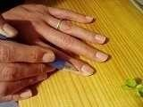
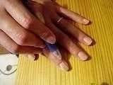
＊注
一般的な医療機関では行われていません。
著者である先生は、その分野では非常に有名ではありますが、保険にもはいっておりませんし、
現代医療の本流ではないと思いますので、
この療法に限っては、自己責任で行ってください。
私には、本当に効果がありましたが、私の周りにいる大勢の医師に話したら、
（私が親しい医師限定という話です。）
みな、首をかしげていたということも
事実として、申し上げておきます。
ご興味をもたれた方は、
「免疫革命」などでたくさん本をだされているので、お読みになられるのもいいと思います。
参考文献：実践「免疫革命」爪もみ療法 福田稔著 安保徹 推薦
講談社＋α 講談社
この療法に関しましては、
このようなものもあるのだというご紹介であるということをご了承ください。
★免疫について
私たちの体には、
侵入してくる外敵や、異物をできるだけ早く輩出して、
病気にかからないで、健康を保とうとする
「免疫」という能力があります。
免疫には、
敵と味方を区別する能力があったり、
記憶能力があるため、
生命体がもつ第二の脳といわれることがあります。
免疫と聞いて、まずはじめに想像されるのは、
ハシカやインフルエンザやポリオの生ワクチンなどの
予防接種ではないでしょうか？
免疫は、非常に難解なので、
単に白血球がバイキンを食べてくれるくらいの認識でしょうか？
輸血などで、事故が起こらないのも、
免疫のおかげです。
免疫の特徴は、
自分の構造と異なっている構造を厳密に
判断できる点にあります。
その反面、自分と同じ構造に対しては、働かないのです。
たとえば、
輸血を行うときに同じ血液型であれば、
（赤血球の表面の微細な化学構造が同じということ）
他人の赤血球があっても
免疫の対象にはならないということです。
なので、輸血が安全に行われるのです。
これが、血液型を間違うと、
異物として捉えられ、
免疫が働き、生体異常反応が起こります。
〈免疫について〉
★病気の成立のキーワード
なぜ、心身症になるのでしょうか？
考方？
正しいです。
生活習慣？
正しいです。
病気になる成り立ちは、
３つのキーワードで説明できます。
・身体の防御系（白血球系）
・調節系（自律神経系）
・循環系（体温）
★自律神経系と体温
３つのキーワードの中で一番大切なのが、
「自律神経系」です。
外敵を倒すために働いてくれる、
白血球でさえも、
自律神経系の支配下にあります。
自律神経系と体温については、
あまり注目されることは、あまりありませんが、
非常に密接な関係があることがわかっています。
血管収縮などによって、
血液循環が悪くなると、体温は低下し、低体温になります。
低体温になると交感神経緊張状態になります。
自律神経系（交感神経も副交感神経も）は、
血管に巻きつくように全身にはりめぐらされているので、
緊張状態になるとさらに悪循環を招くことになります。
低体温は、百害あって一利なしなのです。冷えは禁物です。
一般に男性よりも、女性の方が平均寿命が長いですが、
寒い地方では、それがあてはまりません。
これには、冷えが関係しているとみるのも、
一つの見方かもしれません。
体温とけいれん、震えも関係しています。
けいれんなどは、
脳内の酸素不足を補おうとする生体防御反応です。
身体を小刻みに震わせることによって、
血液循環を良くし、
脳へ、酸素を送り込もうとしているのです。
低体温を防ぐのは、
生活習慣です。
まず、本来の日本人のいい習慣である入浴です。
最近の人たちは、非常に忙しい生活を送っているので、
シャワーで済ませてしまうひとが多くなっています。湯船に浸かり、しっかりと身体を温める必要があります。
このときにポイントがあります。
人間が快適だと思える湯船の温度は、
体温のプラスマイナス４度なので、
その範囲内で30 分くらいの入浴をお勧めします。
温めるために、熱いお湯に入ろうとしても、
低体温のひとは、すぐに熱いと感じてしまうために
逆効果になっている場合があります。
熱いお湯に浸かると、逆に交感神経優位になってしまいます。
ですので、最初は、快適だと思える温度で、ゆっくりと入ることです。
半身浴でも全身浴でも構いません。
（朝などに、スッキリ目覚めれないときは、
熱いシャワーなどをあびると、交感神経優位になり、 ばっちり目がさめます。）
あと、身体を冷やさないためには、
できるだけ冷えすぎた飲み物を飲まない事です。
ギンギンに冷えたビールがでるのは、
アメリカと日本くらいです。
欧州や中国などに行くと、
ぬるいビールがでてくるのは、別に驚くことでもなんでもないです。
特に、中国は、
身体を冷やすことはダメとの意識が強いので、
冷えたビールがでることはありません。
（東洋医学では、身体を冷やすことが 諸悪の根源と考えられています。）
★身体の防御系（白血球系）
白血球の基本細胞は、
マクロファージと呼ばれるものです。
白血球の内訳
マクロファージ ３％
顆粒球 60 ％
リンパ球 37 ％
が一般的だと言われています。
それぞれの働きを簡単にお伝えします。
・マクロファージ
アメーバのように触手をもっており、全身を動き回っています。
身体にとっての外敵を丸飲みします。
外敵を一定量丸飲みすると、死んでしまいます。
顆粒球やリンパ球に外敵の侵入を知らせます。
また、Ｔリンパ球の後処理も担っています。
・顆粒球
マクロファージの進化系です。
顆粒球を更に３つに分けることができます。
- １．好中球
- ２．好酸球
- ３．好塩基球
です。
８割以上を好中球が占めます。
大型の細菌類を飲み込み、化膿性の炎症を起こします。
また、その死骸は活性酸素となります。
・リンパ球
自律神経系の副交感神経と非常に関係が深いものです。
リンパ球も３つに分けることができます。
- １．Ｂ細胞（抗原（（バイキン））に近付き、細胞ごと中和する）
- ２．Ｔ細胞（抗体をつくります）
- ３．ＮＫ細胞（ナチュラルキラー細胞、がん細胞を攻撃する細胞として、有名です。）
顆粒球とリンパ球はそれぞれ、受容体を保有しています。
顆粒球＝アドレナリン受容体
リンパ球＝アセチルコリン受容体
緊張感のある、非常に活動的な生活を送っていると、交感神経優位になり、顆粒球の比率が高くなります。
逆に、
おだやかな生活を送っていると
副交感神経優位になり、リンパ球の比率が高くなります。
★杉田玄白「養生七不可」
福井県史によると杉田玄白は当時としては超高齢である85 歳まで生きており、
晩年には健康･長寿の秘訣として｢養生七不可｣を書き残しています。
- １ ．昨日の非は恨悔すべからず。
- ２ ．明日の是は慮念すべからず。
- ３ ．飲と食とは度を過ごすべからず。
- ４ ．正物に非( あら) ざれば、苟( いやしく) も食すべからず。
- ５ ．事なき時は薬を服すべからず。
- ６ ．壮実を頼んで、房をすごすべからず。
- ７ ．動作を勤めて、安を好むべからず。
これを、現代風に言い換えてみますと次のようになります。
- １ ．きのうの失敗は後悔しない。
- ２ ．あしたのことは心配しない。
- ３ ．食べるのも飲むのも度を過ぎない。
- ４ ．変わった食べ物は食べない。
- ５ ．何でもないのにむやみに薬を飲まない。
- ６ ．元気だからといって無理をしない。
- ７ ．楽をせず、適当に運動を。
福井県広報課ホームページより引用
★第十八回世界心身医学会議（World Congress Pcychosomatic Medicine）
http://kokkai.ndl.go.jp/SENTAKU/sangiin/151/0062/15103220062003c.html
↑
現在はご覧になれませんので
以下をご参照ください。
日本心身医学会： http://www.shinshin-igaku.com/work.html
★炭酸飲料
自律神経には、ふたつの異なる２種類があることは、すでにお伝えしました。
逃げたり、闘ったりするときに、
要するに緊張状態を作り出している状態のときは、
交感神経優位。
反対にゆったりと、リラックスしている状態をつくりだしているのが、
副交感神経です。
これらどちらか優位になるのは、
私たちの活動が関係しているわけですが、
それらの大本をたどれば、
呼吸と食事にたどり着きます。
呼吸は、酸素（Ｏ）を吸い込むことによって、興奮状態を招きます。
逆に、炭酸ガス（ＣＯ２）を吸い込むと活力が低下するので、
リラックス状態になります。
炭酸ガスは酸素のないところで吸い込むと危険ですが、
酸素のある状態で、吸いこむと、リラックス状態をつくりだします。炭酸飲料には、たくさんの単糖類が含まれているので、とり過ぎには、注意が必要ですが、
リラックス目的では、
役に立つこともあります。
酸素（Ｏ２ ）と炭酸ガス（ＣＯ ２ ）が出たついでに、
血液のＰＨについて、少し書かせていただきます。
人間の血液のＰＨは、主に、酸素と炭酸ガスの溶けている割合によって、決まります。
通常、血液はアルカリ性になっており、
粘膜などは、酸性になっています。
化粧水や赤ちゃん用石鹸が
弱酸性をうたい文句にしているのは、このためです。
★熱がでてきたとき
恐怖を感じたり、パニックを起こしたりした時に、
体温が高くなるときがあります。
これは、
リンパ球が戦うときに高熱が必要なための時があります。
リンパ球が正常に働くためには、三七度以上の体温が必要だと
言われています。
リンパ球の働きは、
副交感神経優位に移行するために利用されたりするので、
あまり心配する必要はありません。
逆に、解熱剤などを使い、リンパ球が働けない状態にし、
交感神経優位にもってほうが、よくないということがわかるかと思います。
これは、風邪などでも言えることです。
ただ、風邪でない恐れのある場合は、
この限りではありません。
★汗をかくこと
よく言われていることに、
健康な人の汗は汚くて、
病気の人の汗はきれいだというものがあります。
他の排泄器官と同じように、
汗腺も不純物を体外へ排出しているのは、
汗に、ダイオキシンや水銀が含まれていることからも分ります。
身体になんらかの病気を抱えていると、
きれいに汗になるというのは、きちんと排出すべきものを
排出できていないというのがお分かりいただけます。
冷たい飲み物を摂るのを習慣化してしまうと、
汗をかくのが苦手な身体になってしまします。
これと同じで、
運動不足の方にも、同じような状況がみられますので、
適度な運動は、必ず、必要になってきます。
★筋肉について
筋肉と骨、関節は同じ血管の支配下にあるので、
筋肉を使わないと、骨が弱くなり、関節もやられてしまいます。
筋肉を使わないで、筋力が低下してしまうと、
必然的に低体温になってしまいます。
なぜなら、筋肉を活動させるときに、
発熱する必要があるからです。
筋肉が弱ってしまい、発熱の機会が少なくなると低体温の
冷え症になってしまうという論法です。
冷え症がなぜいけないのか？
それは、エネルギー代謝が下がるため、
活力がなくなってしまうのです。
最近の子供が元気のない原因はこのあたりも関係しているかもしれません。
★マイナスイオン
銭湯や滝や川の水しぶきの近くには
たくさんのマイナスイオンが発生していると言われています。
マイナスイオン発生器なども売りに出されています。
生命エネルギー研究所などから、
マイナスイオンが副交感神経を亢進させるという発表をしています。
実験結果でも明らかになっているようです。
わたしも試しに
マナスイオン発生装置をしようしてみたのですが、
なんだか、不思議にリラックスできるような感じを受けましたので、
ご紹介しておきます。
また、川沿いに佇むと、非常にこころが落ち着くのも、
マイナスイオン効果なのかもしれません。
（私は、リラックスしたいときは、よく家族で川に行きます。
趣味のない方や、アウトドアに興味のない方も、 非常にいい気持になれますので、お勧めです。）
★光照射療法
睡眠障害などにほどこされることがある療法です。
これは、朝に
太陽に向かって、光を浴びるというものです。
よく、
「遺伝子が覚えている」という表現がありますが、
原始時代の人間は密林での生活を送っていました。
太陽の光を浴びることによって、
元気になるというのは、理にかなっているといえるでしょう。
これは、
森林浴などにも言えることです。
あの匂いを嗅ぐだけで、リラックスできるというのは、
そのせいもあるのかもしれません。
時間があるときに、
大自然に身を任せる、ぜひお試しください。
★レッテルの変更（日常生活のリフレーミング）
リフレーミングとは、
枠組みを変えて、見る。 ということです。
私たちは、何か物事や事象を眺めるときに、
なんらかのレッテルをはります。
ひろさちやさんの著書から、一部引用させてもらいます。
（表現は変えさせていただいております。）
ある社長秘書さんの話です。
「社長室で使っている超高級なお茶をお客さんにだしたときは、
そのお茶っ葉は、非常に優雅にみえ、食べてもいいぐらいの感じを
受けるのですが、
流しの三角コーナーに捨てたとたん、ゴミのように汚いものに
感じてしまします。」
ひとは、そのときどきにより、
様々なものにレッテルをはります。
色眼鏡で見ていると言ってもいいかもしれません。この場合ですと、
高級茶がゴミに・・・。
この感覚は、
非常に身勝手で、無理やりにこじつけているとも
とらえることができますし、
育った環境や思考のクセにも依存しています。
これは、
パニックや社会不安でも同じことが言えます。
偏った、視野狭窄状態になると、
ピンチが過ぎ去っているにも関わらず、
それに気づかずに、ずっとピンチが続いていると思いこんでいるのに
つながります。
レッテルをはる行為自体は、悪いことではありません。
ひとつの事象に対して、色々なレッテルの貼り方を意識するだけで
あなたの心は、いままでよりも随分と楽になるはずです。
★自分を守るために相手を受け入れる
世の中には、たくさんのストレスがありますが、
大半のひとにとって、
人間関係のストレスがやはり一番ではないでしょうか？
人間関係でストレスを受けないための最大の防御は、
「相手を受け入れる」ことです。
ですが、
いくら相手を受け入れても、
自分の主張を相手に伝えることができないと、
やはり、それもストレスになってしまいます。
そこで、大切になってくるのが、
どんな状況に置かれた人でも、
コミュニケーション力をつけることが必要になってきます。
★人間は思いこみの動物
人間は思い込みの動物であると、言われることがあります。
それぐらい、みんな、
ひとそれぞれの人生経験に応じて、
様々な思い込みをもっています。
勝手な思い込みや被害者意識は、自分に対して、
非常におおきなストレスを生みだします。
ストレスのみならず、
この思い込みが、
壁にぶつかったときの自分自身の混乱の原因にもなっています。
ストレス・混乱が交感神経優位にさせ、
さらに緊張感を強めていると言っても過言ではないでしょう。
★白血球について
自律神経免疫療法のところで、
お伝えしました白血球について簡単にお伝えします。
白血球の内訳
・リンパ球（約35 ％）
・顆粒球（約60 ％）→ 顆粒球の内訳 好中球95 ％、好酸塩基球５％
・マクロファージ（約５％）
リンパ球は、
抗体と呼ばれるたんぱく質をつくって、
その働きによって、異物を無害化します。
一方、
顆粒球は、
異物をそのまま飲み込んでしまい、
細胞内に含まれている活性酸素を使い異物を殺傷し、そして、自分自身も自爆します。
この自爆したときに、
活性酸素も一緒に吐き出してしまうので、
この活性酸素がほかの細胞を損傷すると言われています。
詳しくお知りになりたい場合は、少し難解ですが、
「免疫とはなにか」 野本亀久 著 講談社がお勧めです。
★偉人たち
偉人たちは、こころと身体の関係性をどのようにみていたのでしょうか？
実存主義のニーチェは、
「人間だけが苦しむことを知っているので、
笑いを生みだした」
と言っています。
あの実存主義者が笑いと苦しみからの脱却の関係性にふれていました。
（実際、人間は、前頭葉がほかの動物よりも発達しているので、
ストレスから逃げられないといわれています。）
貝原益軒は、あの「養生訓」のなかで、
「こころは身体の主人なり」と言っています。
キルケゴールはその著書「反復」で
「泣きぬくと、泣くべきことがなくなって、あとは忘れる」古代ペルシャのことわざには、
「泣いた後には、笑いがくる」というものがあります。
★笑いの種類
笑いにもたくさんの種類があります。
作り笑い、爆笑、微笑み冷笑失笑、苦笑い愛想笑
どんな笑いでもたくさん笑うようにしてみましょう。
笑いは、一時、がんを食べると有名になった
ＮＫ細胞を活性化させるという報告もされています。
人間に一番近いとされる、
チンパジーには、２種類の笑いがあるとある動物学者が書いていました。
その２種類とは、
- １．くすぐったいという笑い
- ２．敵意をもっていないことを相手に伝えるための笑い
があるそうです。
★病は気から
「病は気から」という言葉があります。
これを広辞苑で調べてみると、
「気の持ち方次第で、よくも悪くもなる」
というようなことが書かれています。
この「気」とは、おそらく気孔などの気ではなく、
精神的ストレス刺激だと解釈できます。
それを裏付けるおもしろいアンケートを日本医科大学の吉野教授がとられています。
１位 身内、友人の死
２位 人間関係の悪化
３位 泣く泣く離婚
４位 定年後の夫が家にいる
５位 子供の試験や受験
以上は体調が悪くなったときの身の回りで起こった出来事のアンケートです。
反して、体調が良くなったときのアンケートもとられています。
１位 人間関係の改善
２位 親しい人との旅行
３位 結婚
４位 離婚
となっています。
いかに精神的なものが身体の調子と関係しているかが分かると思います。
★涙について
人間の体は、強いストレスを受けると、
脳の視床下部というところから、
副腎皮質刺激ホルモン放出ホルモンというものが分泌され、
下垂体が刺激され、
その刺激で、副腎皮質から
コルチゾールというものがでます。
このコルチゾールは、別名「ストレスホルモン」とよばれるものです。
精神的な疾患を持っている人は、
このコルチゾールをたくさん持っていると言われています。
では、この毒となるストレスホルモンを排出するには、どうすればいいのか？
答えは簡単です。
泣くことです。
涙には、コルチゾールが含まれていることが様々な研究でわかってきました。
泣いた後に、ストレスがふっとんだりするのは、これが関係していたのです。
【理論編２】
第五章
★あくびの効用
緊張した場面などによく
「カラあくび」がでてくることがあります。
あくびは脳内に酸素が不足しているときに、大きく呼吸する
ことによって、酸素を大量にとりこみたいというサインなのです。
また、人間の口の周りには、咬筋とその筋紡錘が発達しています。
この筋紡錘には大脳の働きを活発にさせるということが知られています。
普段、話しているときなどに、あくびほど、大きく口を開くことはないと思いますので、
緊張しそうなときには、意識的にあくびをして、酸素をしっかり取り込み、咬筋とその筋紡錘を刺激して
大脳を活発化させることは効果があります。
●キーワード
あっ、好ましくない思考が頭をかすめそう
だなっと思ったら、思いっきり、何度でも
あくびをしてください。
★安眠も大切
夜、眠くなるのは脳の内部から放出されるメラトニンという睡眠物質のおかげです。
メラトニンは体温を下げ、眠気を起こすホルモンです。
しかし、光が目にはいるとメラトニンが分解されてしまいます。（早起きして、太陽光を浴びるのは、このメラトニンを分解する 意味もあります。）
安眠のためには、暗くて静かな部屋を用意することをおすすめします。
カフェインは大脳新皮質を興奮させる作用があるので、眠気がさめてしまうので
夜はできるだけ避けた方が無難です。
★安眠を助ける音楽
不眠症対策やリラックスできるというＣＤなどがロングセラーになっていますが、
こういった川のせせらぎなどの音などを聞くことによって睡眠物質のメラトニンが生成されます。
それと同時に脳が癒されているときに出るα 波やθ波がでるので非常にお勧めです。
私個人としましては、モーツアルト、バッハ、などがお勧めです。
モーツアルトは、植物を栽培する時に曲をかけていると良く育つということが実証されています。
植物も音楽で癒されているのですね。
一日の終わりに、肩の凝りや、眼の奥の疲れ、頭痛などの疲れのサインを
ほとんどの人は身体の疲れだととらえるひとが多いのですが、実は身体以上に脳も疲労しているのです。
人間関係に気を使い、難問に頭をひねり、帰宅してもテレビ、パソコン、携帯から情報はふってきます。
そう、現代人は脳を使う割合が圧倒的に多くなっているのです。
脳の疲れをとってあげるためにも、
安眠はとっても大切です。
睡眠をしっかりとるというのは、
最大の攻撃的防御なのです。
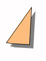
●キーワード
休息・睡眠は立ち止まるのではなく、
後退を防ぐための、積極的行動なのです。
昔から、成功者と呼ばれる人たちは、
睡眠に非常に気をつかっています。
★舌の緊張をほぐす
舌周りの筋肉が緊張していると、うまく声がでないので、
リラックスさせてあげる必要があります。
どこの筋肉でも同じですが、力を抜くには、
思いっきり、一度、力を入れてからそこから力を抜くという方法がおすすめです。
舌の場合は、「えーーーーーー、えーーーーーーー、」という感じで思いっきり舌に力をいれてみてください。
（「あっかんべー」の「べー」のイメージです。）
その後、舌を縮めて声をだすと、
本来のあなた自身の声が発声できるようになっています。
話すときに声が震えるという方には
非常におすすめです。
●キーワード
大きな声がでなくてもいいのです。
声が震えてしまってもいいのです。
舌がほぐれた状態で話すようにしましょう。
★色について
人間は肌でも色をみているというは、ご存知でしょうか？人それぞれに、色の好き嫌いがあるのは、
体で感じているからなのです。
皮膚が「第二の目」であることは、科学的に実証されています。
目隠しをした人に、赤い部屋と青い部屋に、交互にはいってもらうと、
赤い部屋に入ると、血圧や体温が上昇し、呼吸もはやくなり、筋肉も緊張し、
青い部屋に入ると、全く逆の結果がでた、
というのはあまりにも有名な話です。
この実験結果は、偶然ではなく、科学的根拠があります。
「色」は固有の波長、つまり振動数をもっているということは、ご存じでしょうか？
人間の体をつくっている、酸素（Ｏ）や炭素（Ｃ）など
19 種類の「元素」も
特定の振動数をもっています。
そのため、色をキャッチすると、
振動数が共振し、体や心に変化が生じるのです。
人間以外の動物でも、たとえばカメレオンは、
周囲の色に合わせて、変色することで有名ですが、
これも、お腹の皮膚が色を感知し、その色の振動数にあわせて体躯の色を変色させているのです。
かのヘレン・ケラーも自著「わたしの住む世界（The World I Live In ）」で- も微妙な色づかいの違いも、目がみえるひとよりも、敏感に感じ取っていたことがしるされています。
●キーワード
あなたの周りに溢れている様々な色を
もっともっと感じてみましょう
★色の効果
赤
赤い色には、興奮作用を引きおこす神経を刺激する効果があります。
体力、気力、生命力の色です。
落ち込んでいるなど、弱気になっているときに有効な色です。
エッセイストの室井滋さんの文章に以前紹介されていましたが、赤の下着をつけているときは、痴漢によく合うそうです。
色は、皮膚からも感知されますので、赤色がフェロモンの分泌を高め、痴漢を誘う結果になっているのです。
ピンク
子宮内壁を象徴するピンクは、女性ホルモンの分泌を促します。
優しさなどをもたらす色です。
攻撃的な気持ちを鎮めるのにも効果的です。
オレンジ
精神的なショックを和らげる効果があります。
オレンジは、赤のバイタリティと黄色の知性の両方を2 で割った色です。
感情的な赤にはならず、黄色ほど神経質にならず、バランス感覚を保つ色なので、
落ち込んだ時などに、バランスをとりもどすのに効果的です。
また、華やかさをアピールする色なので、プレゼンのときなどにも、有効な色です。
セクハラ撃退にも効果のある色と言われています。
黄色
神経のシンボルカラーなので、知性をアピールしたいときや、集中力、判断力を高めたいときに役立ちます。
ポジティブシンキングしたいときには、もってこいの色調です。
不安にとらわれて、判断力が低下しているときにも威力を発揮します。
楽天的にもさせます。
緑
グリーンは心に安らぎを与えてくれます。
焦りや苛立ちを感じた時に、イライラを鎮めてくれます。
また身体的には、毛細血管を開き、血液の流れをよくし、副交感神経に作用して、興奮をおさえるので、高血圧、不眠症、過労に効果的です。
病院などに最近、多用されるようになったのは、このような理由からです。
青
緑と同じように、副交感神経に作用して、興奮を冷ます効果があります。ＬＡドジャーズで活躍した、石井投手のコントロールをよくするために、スワローズのキャッチャーの古田選手は、色効果を多用したそうです。
例えば、ミットを茶から青に替え、見違えるようにコントロールよくさせ、優勝へと導きました。
また、青には、内へパワーを向かわせる効果があるので、内省したいときによく用いられます。
鎮静効果の高い色です。
熱を冷ますという効果から、ダイエット時の食器に使うと効果があると言われています。
紫
周波数が高い色なので、直観力が鋭敏になります。
日常生活に疲れ、感受性が弱まっているときなどに効果的です。
表現力など、日常とちがったパワーが必要な時に有効です。
黒
喜怒哀楽を隠すのに効果的です。
白
どんな色とも組み合わせ可能な、柔軟な色です。
茶・グレー
協調したいときに身につけると、反発心が減少します。
●キーワード
身につけるものや、周りに置くものは、
調和なども大切ですが、気分や心の
動きに影響を与えるということを理解する。
（自分そして他人に対しても影響をおよぼす）
★香りの効用
人間の感覚のなかでも
嗅覚は脳とダイレクトに結びついているので、
気分や気持ちを切り替えるときには、
是非、利用したいものです。
・ラベンダー
中枢神経を安定させ、気持ちが落ち着く。
寝付きが悪いときにも効果的で、プレッシャー、ストレスからの解放にも効果があります。
・バラ
気持ちを落ち着かせます。
・柑橘系
気持ちを高揚させます。
・ジャスミン
元気をひきたてます。
・ひのき
集中力を高めます。
・ペパーミント
気分をリフレッシュさせます。
・ナツメグ
いらいらを鎮めます。
・カモミール
眠りやすくする効果があります。
・マージョラム
不安感をなくします。
・ローズマリー
気分をさわやかにしてくれます。
●キーワード
香水は大昔から存在していたものです。
長く残るものには、それなりに理由があるのです。
香りをＴＰＯに応じて利用しましょう。
第六章
★震えについて
精神的なストレスなどからくる
手や体のふるえだけを主訴とする事を
「本態性振戦」（ほんたいせいしんせん）と呼びます。
本態性 ＝ 原因不明
振戦 ＝ ふるえの医学用語
本態性振戦は、ふるえ以外に悩みがないというのが、大きな特徴です。
前提といたしまして、
アルコール依存症やパーキンソン病などの
既往がないということがあります。
それ以外にも、
重いものをもった後に、手などがブルブルと震えるものも除きます。
これは、生理的なものなので、お年寄りになるほど多くなります。
本態性ということで、
原因不明とは書かせていただきましたが、
推測されうる原因はあります。
そのひとつは、
交感神経（興奮やイライラなどを司っている）の過剰反応に伴う、
筋肉の緊張反応です。
●キーワード
意識すればするほど、ふるえを抑えるのが
難しくなります。
まず、交感神経優位からリラックスした状態への
移行に意識を向けましょう。
★２種類の震え
- １．動作時振戦
- ２．姿勢時振戦
１． は何かものを持ったり、字を書いたりする時に起こるものです。
２． 手を伸ばすなど、ある姿勢をとったときに起こるものです。
本態性振戦は、安静時にはでません。
多い症状をご紹介します。
・ものを食べたり、飲んだりするときにフォークやスプーン、箸などが震える。
・衣服の着脱時に震える。
・字を書くときに震える。
・マイクをもつ手が震える。
★自然治癒はしない
本態性振戦は、
進行性の病気ではないため、
ほっておいたからといって、
ものすごくひどくなっていくという事は、ありません。
ですが、
気づかぬうちに勝手に治っていたというのもないのが特徴ですので、
何らかの対処をしていく必要があります。
一般的に
震えが気になりだすと、
何か大きな病気ではないだろうかと心配になり、
内科を受診されるか、そのまま放置される方が大半だと思います。
本態性振戦は、
他の振戦と区別がつきにくいために、
「気にしないように」など、
精神論的なアドバイスを受けることが多いと思われます。
本態性振戦は、
れっきとした中枢神経や自律神経の病気です。
★交感神経と震えの流れ
手足を動かすときに、
- １．その命令を出すのが、中枢神経系です。
- ２．それをつたえるのが、運動神経です。
- ３．実際に動かすのが骨格筋です。
この１～３の一連の流れのどこかに狂いが生じると震えとして現れます。
それ以外の震えの原因として、
アドレナリンという物質の過剰分泌があります。
アドレナリンは交感神経が高まることによって分泌されます。
交感神経とは、自分の意志とは関係なく働く、自律神経の一種です。
自律神経には、
興奮すると活発になる交感神経と
リラックスすると活発になる副交感神経があります。
先に書きましたが、
ふるえと関係しているのは、
交感神経の方です。交感神経とふるえの関係についてみてみたいと思います。
緊張・興奮する
↓
交感神経の働き高まる
↓
腎臓の上にある、副腎髄質からアドレナリンが分泌される
↓
アドレナリンの作用
・血管収縮
・血圧上昇
・筋肉収縮
↓
骨格筋の収縮
↓
ふるえが起きる
アドレナリンの作用を受ける器官
↓
ふたつの受容体をもっている
・α アドレナリン受容体（血管内に多く分布）
・β アドレナリン受容体（骨格筋に多く分布）
↓
アドレナリンの分泌が促進
↓
β アドレナリン受容体が過剰興奮し、たくさんアドレナリンを受け取ってしまい、
骨格筋に多くの刺激が伝わり、収縮してふるえにつながる。
★筋肉はどうなっているのか？
本態性振戦によるふるえは、当然、筋肉の働きによるものです。
筋肉が収縮したり、弛緩したりすることによって、
わたしたちはいろいろな動作ができます。
筋肉にも、色々な種類のものがありますが、
収縮したり、弛緩したりできる
骨格筋によるものです。
これは、骨と骨をつないでいる筋肉です。
骨格筋のように、意識的に動かすことのできる筋肉を
「随意筋」と呼びます。
意識的に動かすことを「随意運動」といいます。
それに反して、本態性振戦によるふるえは、
意識的な筋肉の動きではないので、
「不随意運動」と呼びます。
本態性振戦は意図しない、
不随意運動なのです。
★β アドレナリン受容体遮断薬
本態性振戦の震えの場合、残念ながら、
対処療法になってしまいます。
震えそのものを除去する病院での治療は、現在では、
定位脳手術というもの以外ありません。
そこで、
登場するのが、薬物療法です。
本態性振戦の震えに対して、
精神科などで処方されるものに、
β アドレナリン受容体遮断薬があります。
β アドレナリン受容体遮断薬をつかうことによって、
かなりの震えを抑えることができます。
さきほど、
β アドレナリン受容体がたくさんアドレナリンを受け取ってしまうことによって、骨格筋が収縮し震えにつながるということをお伝えしましたが、
これを遮断するのです。
β アドレナリン受容体は、
不整脈、高血圧、狭心症などにも広く使われています。
β アドレナリン受容体遮断薬の効果は、だいたい70 ％と言われています。β アドレナリン受容体遮断薬を使う場合の注意点
もともと、高血圧などに使われる薬なので、血圧を下げ、脈拍を遅くします。
服用する場合は、血圧などの定期的な測定が必要です。
また、気管支ぜんそくの悪化にも注意も必要と言われています。
なぜなら、
β アドレナリン受容体遮断薬は、
気管支を収縮させ、気道を狭くし、ぜんそく発作を誘発するからです。
（詳しくは、主治医とご相談ください。）
★震えに有効な成分
ホリスティック医療という言葉があります。
解釈はそれぞれありますが、
ここでは、
身体の全体的なバランスを回復させ、
病気に対していこうという捉え方で書かせていただきます。
テアニン
緑茶特有の成分でアミノ酸の一種です。
高級緑茶ほど、含有量が多い傾向にあります。
興奮・緊張を鎮める作用があります。
リラックスに必要な副交感神経を優位にする働きがあり、
リラックスモードの、脳波のα 波を増加させると言われています。
また逆に、
イライラしたときに現れるβ 波を減少させます。
テアニンのリラックス効果を検証した実験では、テアニンの濃度が高いほど、α 波が強く現れることから、
リラックスの深さは、テアニンの濃度に比例すると考えられます。
また、記憶力向上にも効果があるという報告もあります。
カフェインの覚醒作用の抑制の働きもあります。テアニンの有効性を証明する実験では、
テアニンを摂取することによって、
心拍数・唾液中の免疫グロブリンＡ・主観的ストレス感の増加が有意に抑制されました。
カモミール
ハーブ（薬用植物）の代表格です。
名前の由来は、
ギリシャ語の地上のリンゴからきています。
その名のとおり、甘酸っぱい芳香が特徴です。
キク科の１～２年草で、ヨーロッパ全域に分布しています。
精神的不安を取り除く効果があります。
抗炎症にも効果があることから、
スキンケア商品にもよく使われています。
女性特有のヒステリーや生理不順にも
効果があると言われています。
トリプトファン
神経伝達物質のセロトニンの原料になります。
必須アミノ酸のひとつです。
セロトニンのみならず、
ドーパミン・ノルアドレナリンの原料にもなります。セロトニンやドーパミン・ノルアドレナリンの分泌が促進されれば、中枢神経の障害が改善されるので、
本態性振戦による震えも緩和されます。
また、トリプトファンには、
活性酸素を除去する抗酸化作用もあります。
活性酸素は、強烈な酸化作用をもつため、
酸素毒も呼ばれています。
もともと、
体内には、活性酸素を除去する酵素が存在しますが、
これは、年齢と比例して減少します。
トリプトファンはこの酵素の代わりの役目も果たすのです。
ＧＡＢＡ（ギャバ）
アミノ酸の一種です。
脳内で、興奮性のグルタミン酸と拮抗して作用しています。
精神状態が不安定な時は、
ギャバが不足していることが知られています。
リンデンエキス
シナノキ科のハーブです。
ストレスで低下する生体酸化防御力の補助に役立つと考えられています。
パッションフラワー
脳や神経の興奮を鎮静する働きがあります。
アメリカでは、
不眠症・パーキンソン病・痛み止めなどに使用されています。
ヨーロッパでは、
不眠症・けいれん・動悸などに使用されています。
最近の報告では、
麻酔効果のあるアルカロイドなどが含まれていることがわかっています。
ドロマイト
サンゴなどが海底に堆積して、
石灰岩になった後、そのカルシウムの一部が
海水中のマグネシウムと置き換わってつくられる物質です。
ドロマイトは、
もっとも効率的に働きやすい、
２対１の割合でカルシウムとマグネシウムが含まれています。
●キーワード
身体を動かしているのは、摂取するさまざまな
栄養を使っておこなわれています。
ふるえの改善にも、しっかりとした栄養摂取が
有効です。
【実践編】
★リラックスした状態でレッスンに、はいってください
- １．まず、全身の力を抜いてください。
（椅子に座る事をお勧めします）
注意： りきんでしまって、力を抜くことができない場合は、
腹筋に力をいれながら、肩甲骨を寄せるイメージで
おもいっきり、10 秒間りきんで下さい。
すると、そのあと驚くほど脱力しやすくなります。 - ２．深呼吸を５回繰り返してください。
このときに、吸うことに意識を向けるよりも、
息を吐ききることを意識してください。
吐ききることによって、
大きく吸い込むことができます。 - ３．周りの雑音が耳にはいってきますが、その雑音もリラックスする要素の
ひとつであると認識してください。
（例えば、こんな感じでご自身に語りかけてみましょう。
「私は今、非常にリラックスしてきた。
周りの雑音も私がリラックスするのに役立つ要素である。
雑音が勝手に耳に入ってくるくらいリラックスしてきた」 - ４．ご自身の体の重みを感じてください。
・お尻が椅子に触れているのを感じます。
・足が地べたについて、足の裏と地面が接触しているのを感じます。
・ふとももの上においた、手の重みを左右それぞれ感じます。 - ５．「いい感じだなあ」と声にだして、つぶやきます。
実際に声に出すことが大切です。
ご自身の声が、耳に届く程度でかまいません、つぶやく程度です。
★「気持ちの貯金」
気持ちいい、楽しい、気分がいい、うれしい、ハッピーなど
心のいい状態の貯金をします。
ひとの心の状態や、気分というものは、足し算・引き算であらわれてきます。
決して、掛け算や割り算にはならないのです。
＊ノートや紙切れと筆記用具を用意してください。
- １．まず、リラックスします。
- ２．リラックスした状態で、今までで嬉しかったことや、楽しかったことどんな些細なことでもいいので、
ポジティブな過去を５ つ書き出します。 - ３．ひとつ目のポジティブな過去を思い出します。
鮮明に思い出します。
そのときの周りの色や、音、気分をひとつずつ十分に味わいます。
子供が空想の世界に入り込むように、十分に全身で感じます。 - ４．次に、４日前に食べた晩御飯を思い出してください。
（ブレイクステイト） - ５．もう一度、１
つ目のポジティブな過去を思い出します。
鮮明に思い出します。
そのときの周りの色や、音、気分をひとつずつ十分に味わいます。
子供が空想の世界に入り込むように、十分に全身で感じます。 - ６．気持ちのいい状態のまま、右手の人さし指で、右手の親指をおさえます。
- ７．２で書き出したポジティブな過去を順番に
３～６ を繰り返します。
いかがでしたでしょうか？
右手の親指を人さし指でおさえると、気持ちよくならないでしょうか？
これを心理学用語で
「アンカリング（Anchoring ）」と呼びます。
あとからのレッスンでもでてくるので、覚えておいてください。
先ほどもお伝えしましたが、人のこころは足し算ですので、暇があれば、１～７ を実践してください。
そうすることによって、あなたの中の「アンカー」がより強固なものになります。
そして、「アンカー」をいつでも呼び出せるようにするために
何もないときは、右手の人さし指と親指の手遊びはやめてくださいね。
これを繰り返すことで、
右手の人さし指で親指をおさえることで、いい気分になる、という脳のクセをつくっているのです。
単純ですが、信じて、繰り返し実践してください。
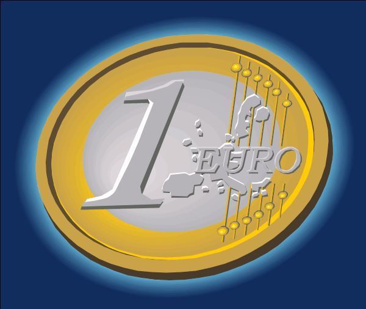
★過去の嫌な出来事を中和する（自己和解）
ここまで、お読みいただいた方はもうご理解いただいていると
思いますが、人のこころは、足し算でしたね。
そして、第１章でお伝えした「アンカリング」でたくさんの足し算をして、「気持ちの貯金」も少なからず、たまっていると思います。
この章では、その「気持ちの貯金」を使います。
この章で、引き算によって、「気持ちの貯金」が減るので、常日頃から、「気持ちの貯金」をたくさん貯めるように意識してくださいね。
では、早速レッスンにはいります。
- １．リラックスしてください。
- ２．「プラスの体験」を思い出して、右手に「アンカー」をつくってください。
- ３．右手の「アンカー」が非常にパワーをもっているのをイメージしてください、それを感じてください。
- ４．次に消し去りたい嫌な思い出を思い浮かべてください
注意：慣れるまでは、トラウマのような重い嫌な出来事は
避けてください。 - ５．その嫌なイメージを左手で握りしめてください。
- ６．左右の手にそれぞれ別の気分がはいっているのを感じてください。
左手には「いやな出来事」
右手には「パワフルアンカー」ですね。 - ７．右手で左手を５秒間覆ってください。
- ８．左手をパッと開いてください。
- ９．ゆっくりと右手の「アンカー」を解いてください。
どうでしょうか？
嫌な出来事にたいしてのイメージが変ったと思います。
これは、引き算によって、
嫌なできごとをプラスマイナスゼロにしたのです。このレッスンを終えても、すっきりと嫌な出来事を離すことができない場合は、
２〜３回同じことを繰り返してみてください。
すっきりするはずです。
これを覚えると、
嫌なことが起こるたびに、
瞬時に、その嫌な事が気にならなくなります。
ここで重要になってくるのが「気持ちの貯金」
ですので、暇があれば、たくさん貯金をしてください。
うまくいかない人は、
「アンカー」（右手）の方に意識を強く向けることをおすすめします。
★自分専任のボディガードを雇う
あがり症、緊張、マイナス思考に陥ってしまう方でも仲のいい友人や恋人、親兄弟には、
何の問題もなく、接することができるという方は多いです。
そこで、常に自分の横にいてくれる
ボディガード、警備員を雇いましょう。
そして、常にその人に守ってもらうのです。
これで、安心です。
人前に出るとき、人と話すとき、苦手な場所に出かけるとき、周りに対して恐怖心が湧きそうな時、あらかじめ、自分を守ってくれる、
ガード、防御壁をつくるのです。
- １．リラックスしてください。
- ２．「アンカー」を呼び起こしてください。
（過去の気持ちよかったことを思い出してください。
右手の親指の「気持ちの貯金」を引き出してください。） - ３．目の前に、自分が入れるくらいの円柱形の透き通ったサークルがあるのをイメージしてください。
- ４．そのサークルにご自身の好きな色をつけてください。
- ５．その中に入ってみてください。
- ６．一度そのサークルから出て、そのサークルを眺めてください。
- ７．もう一度、そのサークルの中に入ってください。
- ８．このサークル内は、外の世界と遮断されています。
サークル内からは、外の世界は見えますが、
外の世界からは、サークルの中は見えません。 - ９．サークル内は自分の心地よい世界です。
自分の好きな色に囲まれています。
好きな音楽をサークル内でかけてください。 -
10
．サークル内でもう一度、「アンカリング」します。
（右手の親指と人差し指でしたね） - 11 ．気持ちがよくなったら、サークルから外にでます。
１～11 のステップを２回繰り返してください。
このサークルをいつでも作れるように練習しましょう。
いつでも作れるようになると、
あら、不思議、
どんなときでも、防御壁に自分が守られているという安心感がでます。
サークル内にいることで、常に周りよりも有利な状態になります。
こちらからは見えるのに、
あちら側からはこちらは、壁しか見えない。
いくら緊張しても、動揺していても相手には全くわからないのですから。
★視線解析（Eye Accessing）
「眼はこころの鏡」
「目は口ほどにものをいう」
「眼は露出した脳」
などと、目に関する言葉は、どれも「眼」がこころと
直結していることを表すものばかりです。
実際、最近の脳科学や心理学、医学では目の動きを非常に重視しています。
ひとには、さまざまな感覚がありますが、
物事を捉えるときには、大きく３ つにわけることができます。
体感覚、視感覚、聴感覚です。
そして、どの感覚を使っているかというのも、
目の動きにあらわれます。
体感覚を使うときは、目線が下を向きます。視感覚を使うときは、目線が上を向きます。
聴感覚を使うときは、目線が左右どちらかに向きます。
また、時間を捉えるときにも、
目の動きにあらわれます。
過去を思い出すときは、目線が左へ向きます。
未来を思い浮かべるときは、目線が右へむきます。
このようにこころの動きが
目の動きにあらわれるのです。
それを利用するわけです。
たとえば、過去の嫌な思い出や、失敗したことなどを思い出してしまうときは、
たいてい、目線が左へ（過去の方向）向いています。
嫌なこと、失敗したことなど、ネガティブな過去が頭に思い浮かんだら目線を意識的に、右へ（未来の方向）向かせます。
そうすると、脳が、過去の記憶を思い出しにくい状態になります。
逆の場合はどうでしょう？
未来や近い将来のネガティブな予想が頭から離れなくなったときは、たいてい、目線が右に向いているので、意識的に左を向かせます。
そうすることによって、未来のことが考えにくくなります。
非常に効果が高いので、
目の動きの特徴はよく覚えておいてください。
このテクニックはひととコミュニケーションをとるときにも有効です。
＊例をあげてみましょう
「昨日、何を食べましたか？」
↓ ↓
過去（左）、ものを思い出す視感覚（上）
相手の方は、おそらく左上を見ながら、思い出そうとするはずです。
「アフロヘアーにした私を想像してください」
↓ ↓
視感覚（上）イメージをつくる（未来）（右）
相手の方は、おそらく右上をみながら、想像するはずです。「小学校のころのチャイムの音はどんなでしたか？」
↓ ↓
過去（左） 音を思い出す聴感覚（横）
相手の方は、おそらく左横をみながら思い出そうとするはずです。
「サボテンに触れたとき、どんな感じがしますか？」
↓ ↓
体感覚（下）過去に触った経験があれば過去の（左）相手の方が、過去にサボテンを触ったときの感触を思い出した場合は、左下を見ながら、答えるはずですし、
今まで、触ったことがなく、触った感じを想像しながら答える場合は、右下を見ながら、答えるはずです。
緊張したとき、あがってしまった時、マイナス思考が頭によぎったときは、必ず、そのときと、違う方向へ視線を動かしてください。
脳のクセが混乱し、そのとき感じている不安感を薄めてくれます。
★タイムマシンは実在する
タイムマシンと聞くとドラエモンやＳＦ映画を想像される方も多いと思いますが、ＮＬＰを始め、多くの心理学では
このタイムマシンをよく利用します。
タイムマシンは心の中には実在しているのです。
理論編でお伝えしましたが、
人間の脳は膨大な量の記憶を保存しています、が、
ただ顕在意識化では意識的に思い出すことができないだけなのです。
著名な精神科医で心理学者であるユングなどは、潜在意識に働きかけることによって、人類の共通の認識を見いだせるとまで言っています。
このタイムマシンと呼ばれるものは、実践心理学ではタイムラインと呼ばれています。
読んで字の如く、空間にラインを描き、体を動かしながらの実習になります。
タイムラインを使用すると良い時
・現状に行き詰まっているとき
・嫌な体験を書き替えたいとき
・ひきずっている過去を手放したいとき
・望ましい未来を創造したいとき
では、はじめてみましょう。
今までのテクニックとは違い、場所を移動するので、
部屋を片付けて前後に２～ ３歩以上動ける空間をつくってください。
立っての実習になります。
（過去を書き換える編）
- １．リラックスしてください。
- ２．現在立っている位置が「現在」の位置で、後方が「過去」
前方が「未来」と認識してください。 - ３．過去の変えたい出来事の位置まで前向きのまま下がってください。
- ４．今、過去に来ています。
- ５．自問してみて、声に出して答えてみてください。
- ア．今はいつですか
- イ．周りにだれかいますか
- ウ．何が起こっていますか
- ６．タイムラインからはずれて、「過去」の位置にいる自分自身を客観的に眺めてください。
（少し右側に移動してください） - ７．自問してみて、声に出して答えてみてください。
「過去」の位置に立っているであろう自分に訪ねてみてください。- ア．どんな風にみえますか
- イ．何が起こればよかったと思われますか
- ウ．どんな言葉をかけますか
- エ．どんな風になればよいと思いますか
- オ．欲しかった結果はどうしたら得られますか
- ８．「アンカー」を呼び起こしてください。
- ９．タイムライン上に戻ってください。
- 10 ．「未来」の方向に向かってタイムライン上を歩いてください。
-
11
．「現在」の位置を通り越して、「未来」の位置で立ち止まり、
振り返って「現在」の自分に声をかけてあげてください。 - 12 ．「現在」に歩いて戻ってきてください。５～７の実習の「過去」の自分を書き換えることに成功しているはずです。
理論編でお伝えしたことですが、脳というのは、
実際に体験した経験と、想像の中で体験した経験の区別がつきません。
たいせつなので、もう一度おつたえします。
脳は、
実体験と想像の体験の区別がつきません。
そのような脳の特性を生かし、
バカらしいと思わず、タイムライン上を自由に行き来し、楽しい、過去・未来を創造してください。
これを数回やると
驚くほどの効果が実感できるはずです。
★映画監督になる
よく言われることですが、人が百人いれば百通りの人生があります。
そうです、
あなたはあなたの人生の主役なのです。
しかも代役はいません。
そして、あなたはあなたの人生というステージの役者であり、
監督であり、照明さんであり、大道具さんなのです。
あなたが思うように、あなた自身の人生をプロデュースしましょう。
この章では、これから「あなたの人生」の演出をするにあたって足かせとなっている、あなたの
あがり症、緊張、マイナス思考を取り去ることを目的としたステージの作り方をお伝えします。
- １．リラックスしてください
- ２．「アンカー」を呼び起こしてください。
「アンカー」をパワフルにしてください。 - ３．映画館を想像して、スクリーンの目の前の座席に座ってください。
- ４．自分の体を座席においたまま、意識を後ろにある映写室にもっていってください。（幽体離脱のイメージですね）
- ５．映写室から、座席に座っている自分と、スクリーンの両方を同時に見てみましょう。
- ６．これまでの恐怖体験などをスクリーンに映してください。
- ７．映写室から、座席に座っている自分を視野にいれながら映画を眺めてください。
- ８．映画が終了したら、ただちに映画を３倍速で巻き戻して、ファーストシーンまで映画を巻き戻ししてください。
- ９．映画館に楽しくて、力強いＢＧＭをかけてください。
- 10 ．２回目の上映を行ってください。（同じ映画です）
- 11 ．映画が終了したら、ただちに映画を３倍速で巻き戻して、ファーストシーンまで先ほどと同じように巻き戻ししてください。
- 12 ．スクリーンの中に入っていってください。
-
13
．スクリーンの中の自分に
大切な教訓を学ぶために苦しんでくれた映画の中の自分に感謝し、
それがどんな教訓だったか伝えてください。
それを学んだ今、自分を許し、手放していいのだと伝えてください。 - 14 ．スクリーンの中に居たまま、３回目の上映をおこなってください。
- 15 ．映画が終了したら、ただちに映画を３倍速で巻き戻して、ファーストシーンまで戻ってください。
-
16
．スクリーンから抜け出し、座席に座り、スクリーンを改めて見上げて、映画が消えて、
画面が真っ白になるまで見届けてください。
以上で、マイナスな記憶から、
自分を許すテクニックは完了です。
人はだれしも過去に経験した、恐怖や嫌悪感を多少なりとも引きずっています。
それを手放すことが、なによりも重要になってきます。３倍速巻き戻しやディソシエート（自分を外部から見ること）は、初めてのときは、少し難しく感じられるかもしれませんが、
慣れると、恐怖や嫌悪感を感じた自分をいとも簡単に受け入れることができ、受け入れることによって、
マイナス要因に感じなくなります。
【実践編２】
★朝の効果的な質問
「価値ある質問は、価値ある人生を創造する」といいます。
朝に自分に対して、
肯定的な質問をすることによって、
よりよい一日のスタートを切ることができます。
よりよい一日の積み重ねがよりよい一週間になり、一か月になり、一年になり、
よりよい人生につながります。
- １．わたしは人生のなかで何が幸せだろうか？わたしを幸せにするのは、どんなことだろうか？
それは、わたしをどのような気持ちにさせてくれるのだろうか？ - ２．わたしは今、何にワクワクしているだろうか？わたしをワクワクさせることはどんなことなんだろう？それはわたしをどのような気持ちにさせているだろ？
- ３．わたしは今、人生において何を達成するだろうか？
- ４．わたしは今、人生の中で何に感謝しているだろうか？
- ５．わたしは今、何を最も楽しんでいるだろうか？
その楽しむことは、わたしをどんな気持ちにさせるだろう？
全てに対して、肯定的な答えをだしてください。
肯定的な答えが出てこないときは、とばしていただいて大丈夫です。
毎朝、肯定的な質問をすることによって、
あるとき、突然、肯定的な答えがでてくるのを待ってみてください。
★３人のメンターに尋ねてみる
これは、２、３歩動くので、部屋の中で動けるスペースを用意してから行ってください。
これは何かにゆきづまったりしたときに有効です。
直接、メンターとなる人に助言を求めるのも良いですが、
そのメンターが直接知り合いでなくとも、
答えを導いてくれます。
- １．リラックスした状態で立ってください。
- ２．リラックスできたら、今現在、ゆきづまりと感じていたり、助言が欲しいと思う事柄をひとつ思い浮かべてください。
- ３．目の前に、３人の適切なアドバイスをくれそうな人がいるのをイメージしてください。
（この３人のメンターは、身近なひと、自然界（山や海など）、歴史上の人物、
映画の主人公、ペット、本などで憧れているひとなど、どんなものでも構いません。） - ４．あなたと３人のメンターが向かい合っているのをイメージしてください。
- ５．目の前に３人のメンターがいるのをしっかりとイメージできたら、まず、１人目のメンターのところへ歩いていき、
振り返って、先ほどまであなたがいた方を向いてください。 - ６．そのメンターになりきって、あなたが先ほどまでいた位置に向かって、助言をしてあげてください。
（このときの助言は、あくまでそのメンターになりきってください。） - ７．助言が終われば、元の位置に戻ってください。
そして、先ほどメンターからもらった助言をしっかりと噛みしめてください。 - ８．１人目のメンターの助言がしっかりと噛みしめられたら、
２人目のメンターの位置に歩いていって、
５．と同じことを繰り返してください。 - ９．３人のメンターから、それぞれ助言をもらったら、それをもう一度繰り返します。（４．～７．）
- 10 ．９が終わった時点で、その教えを実現できた自分を想像します。
-
11
．想像できたら、その場面の、音や景色、身体の感覚などをしっかり感じながら、アンカリングします。勉強すること、学ぶこと、人の話をしっかり聞くことは
いずれも大切です。
ただ、答えはご自身の中にあることが、
ほとんどです。
他人に背中を押してもらう他社依存ではなく、
自分で自分の背中を押せるようになります。
ご自身の望む人生を送るために、
セルフスターターになる必要があるのです。
色々な憧れの人になって、
楽しみながら、ワークをしてください。
★タイムマシンⅡ
（未来から励ます編）
- １．リラックスしてください。
- ２．現在立っている位置が「現在」の位置で、後方が「過去」
前方が「未来」と認識してください。 - ３．現状、予期不安などつらいと思っていたり、
ゆきづまっていることをおもいだしてください。 - ４．未来の位置まで行ってみてください。
- ５．自問してみて、声に出して答えてみてください。
- ア．今はいつですか
- イ．周りにだれかいますか
- ウ．何が起こっていますか
- ６．タイムラインからはずれて、「現在」の位置にいる自分自身を客観的に眺めてください。
（少し右側に移動してください） - ７．自問してみて、声に出して答えてみてください。
「現在」の位置に立っているであろう自分にたずねてさい。 - ８．どんな風にみえますか
- ９．何が起こればよかったと思われますか
- 10 ．どんな言葉をかけますか
- 11 ．どんな風になればよいと思いますか
- 12 ．欲しかった結果はどうしたら得られますか
- 13 ．更に未来を進んでみてください。
- 14 ．自分の臨終のところまで行ってみてください。
-
15
．臨終のときに周りに誰かいますか？
その人に何と話しかけてほしいですか？ -
16
．臨終のときの自分から、
振り返って「現在」の自分に声をかけてあげてください。 - 17 ．「現在」に歩いて戻ってきてください。
かなりつらく感じる場合もあるかもしれません。
あまり無理をしないようにしてください。
涙がでてくる程度であれば、大丈夫ですので、続けてみてください。
★あとがき
理論編、実践編を前ページまでにご紹介いたしました。
これらを体系的にマスターするまでの私の人生は
それこそ「どん底」でした。
自殺を真剣に考えていました。
精神科にかかって、処方された薬を服薬しても根本の私自身のビリーフ（信念）、思考が
私を苦しめ続けました。
高い交通費と、高い料金を支払って、
心理カウンセリングも長い間受けました。
様々なセミナーに参加しました。
（精神安定剤の量を多くしても、電車に乗れないことが
よくあったので、キャンセルもたくさんし、
受講料をよく損もしました。）
なんとか、変わりたいとそれこそ必死だったので、セミナーや文献書籍費は、
まとめて、銀行から借り入れをしました。
事業資金や、住宅ローンではないので、
金利も高かったです。
ですが、
本当によかったです。
本当に人生変わりました。
生きているのが、
つらかったあの時期のことを考えると
今は毎日が、
「人生、バラ色です」
あなたにも
パニック障害・社会不安障害から
抜け出してもらいたいです。
本当に心からそう願っています、
私自身、抑うつ状態のパニック障害に本当に苦しめられてきたので。
慣れるまでは、
理論編のキーワードを切り取り、手帳などに貼って
いつでも見れるようにしてください。
実践編は、なりきってください。
早い人では、
一度実践しただけで、効果が出る人もいます。
一度、全編実践してみて、大きな効果が出なくても、焦らず、
自分のペースでやりつづけてください。
知らず知らずのうちに、
まずは、
自己和解ができるようになってきます。
この「自己和解」がたいせつです。
自分を受け入れ、許してあげる。
自分を受け入れ、思うように変化させていく。
みんなが
かけがえのない命なのです。
楽しく過ごしても、
憂鬱にすごしても、
時間は過ぎていきます。
どうせなら、
嫌な気分ではなく、
いい気分で
毎日を過ごしたいですね。
あなたの幸せな生活を
心よりお祈り申し上げます。
大嶋 涼太
★あとがき２
「あせらないこと！！」
具合が悪いのを放っておいたり、無理して頑張ったりして大きな病気になって、
かえって周囲に多大の迷惑をかけるくらいなら、
ちょっと迷惑をかけることになっても、初期の段階で休んで、
病院に行った方がよいのです、人生は長いのですから。
また、仕事や勉強のためだけの人生では、
いつかむなしくなるかもしれません。
自己啓発ブームですが、
私は冷めた目でそれを見ています。
「何のために」「どのように」成長したいのかを考えないで、
ただただ「成長したい」と思ってしまっていないでしょうか？
向上や成長や自己実現には、とてもパワーを使います。目的も分からずにむやみにそれを目指しても、やはり疲れてしまうのです。
生きていく中で大切なのは「自分を大事にすること」です。
自分を大事にしない人が仕事や周りの人々のことを大事にできるわけがありません。
そのために、まず、自分を「メンテナンス」することが大事なのです。
そして、自分をメンテナンスするためには、
むやみに自分を疲れさせてはいけません。
そのために大事なことは、「様子を見る」「無理をしない」「諦める」ということです。
何か「やりたいこと」があったら、
とにかく無理してでもやるべきでしょうか？
わたしはそうは思いません。
まずは、自分の状況と周りの状況も含めて、「様子を見ること」です。よく聞く言葉に
「あの失敗があったから今の自分がある」などがありますが、
本当にそうでしょうか？
無理に前向きにとらえているのでないでしょうか？
「あの失敗が、これだけ自分を衰弱させてしまった。
もう二度とあんな目に遭わないためには、どうすればいいか？」
ということを考え、その方法を学ぶべきだと思います。
例えば、自分にとってどうしても苦手な人がいて、嫌な目に遭った時。
「嫌な人だったが、あの人のおかげでいろいろ学ぶことができた」
と思わない方がいいときが多いです。
「今の自分には、あのタイプの人は合わない。
だから、これからはうまく逃げるようにしよう」
ということを学ぶのです。
（無理やり）失敗を前向きに考えようとすると、
これからも同じ失敗を繰り返すことになります。
失敗やマイナスの経験は、今の自分に合わないことを学ばせてくれますが、
それ以上に前向きな意味がないことも多いのです。
例えば雨の日に道で転んだとしても、
「いい経験をした」とは思わないと思います。
こういう時にやるべきことは、
「雨の日はあまり歩かないようにする」、
または「雨の日に歩くなら、転びにくい靴を選ぶ」ということ。
このように考えるのが、
自分を疲れさせないコツです。
自分にとって本当に「いい経験」というのは、実はあまり多くありません。
その数少ない「自分をよくしてくれる経験」こそ、大事にした方がよいのです。
自分にとって、本当にプラスになっていることだけを前向きにとらえて、
それだけを大事にすればよいのです。
実践編の「気持ちの貯金」ですね。 「苦手な人や出来事が自分を育ててくれる」...、
そういうこともなきにしもあらずですが、
「失敗を生かすこと」は、台風なのにテントを張るくらい難しいことです。
自分にとってマイナスなこと、
自分を疲れさせること、
消耗させることからは、
なるべく距離を取った方が自分を大切にすることにつながるのです。
日経ビジネスプレミアムオンラインのコラムに
深澤真紀氏が非常に参考になることを書かれていたので、
少し長くなりますが、抜粋・引用させていただきます。
- １．「自分探し」ではなく「自分取材」すること
- ２．「癒やし」を求めるだけでなく、時には「休む」「逃げる」こと
私は、自分探しは自分をすり減らし、疲弊させるものだと考えています。
一番の理由は、自分探しには、キリがないことです。自分にとって、本当に理想的な自分を見つけるなど、とても難しいことです。
そして、自分探しをする人の中には、一人ひとりの中にダイヤの原石みたいなものがあって、（かなり古いですが）小室哲哉やつんく♂のような人が現れて、それを見つけてプロデュースしてくれる、という幻想がある人が多いようです。
もちろん、本人が気づかない客観的な美点を誰かに見つけてもらってブレイクするということは、あることはあります。しかし、先のプロデューサーにプロデュースされてブレイクした人たち──華原朋美、モーニング娘。など──が、必ずしも幸せな結果になったとは、言いきれません。
特に芸能界でプロデュースされるタレントの場合は、長いスパンではなく
「時代に合わせて、その時々に売れるように仕立て上げられるだけ」ということもあると思います。
浜崎あゆみがデビューして一〇年経って
（全盛期ほどではなくても）、まだ今の地位にいるのは、彼女が自分のプロデュースを他人に全面的に任せていないからでしょう。彼女は誰かに自分を探してもらうのではなく、自分を商品としてきちんとメンテナンスしているのだと思います。長くつき合った恋人との破局を、大きなマイナスにしなかったのも象徴的でした。
「誰かが見つけてくれるかもしれない自分」というのは、うまくいっても一時的ですし、うまくいかなければ、いつまでも自分探しがキリなく続くものです。
「いや、他人に自分探しをしてもらうつもりはない、自分の力で自分探ししたいんだ」という人もいるでしょう（元サッカー日本代表の中田選手もそうだと思います）。旅に出て出会う本当の自分とか、仕事で知った新しい自分とか、恋愛で見つけた自分の姿とか、よく聞く話です。
しかしよく考えてみると、「旅」や「仕事」や「恋愛」はすべて他者や外部との関係性ですね。つまり自分というものはそもそも、自分を取りまく状況や環境で簡単に変わるものだということです。そして、理想的な自分というものは、時代状況や環境によって変化するものです。
（中略）
もちろん中田英寿のように、時間とお金と名声があれば、納得のいくまで自分探しをしてもよいかもしれません。自分探しは、究極の贅沢な趣味とも言えるかもしれませんから。
とはいえ「自分のことが知りたい」という欲求は誰にでもあるものですし、自分のことは知っておいた方がいいと私も思います。
そこで、お勧めしたいのが「自分取材」です。
自分取材のためにはまず、表を作ってみてください。
エクセルやワードに書き出すのでも、手書きでも構いません。とはいえ、ネガティブなことだけ書き出すのは疲れるでしょうから、ポジティブなことも一緒に書き出します。
・あなたの嫌いなことは、何ですか？
・あなたのやりたくないことは、何ですか？
・あなにできないことは、何ですか？
・あなたに求められていないことは、何ですか？
・あなたの好きなことは、何ですか？
・あなたのやりたいことは、何ですか？
・あなたにできることは、何ですか？
・あなたに求められていることは、何ですか？
このように項目を立てて、それぞれに
・なぜ、そうなのか
・それを、どうしたいのか
を書き込んでいきましょう。
細かく、難しく書く必要はありません。好きなことには、「バンド」「猫」
「食べること」のような私的なことを書き込むのも大事です。
また、「自分取材」でもう一つ覚えておいてほしいことは、「自分というのは、良くも悪くも変化する」ということです。 二〇代の時の「嫌いなこと」「できないこと」と、四〇代になってからのそれとは全く違うこともあります（もちろん、全く変わらないものもあります）。
自分取材は、ネガティブなことを見つめ、その原因を考えますから、あまり楽しい作業ではないでしょう。これは、雨漏りがしそうだ...と感じた時、実際に屋根に上って穴が開いているのを確認するのが辛い、というのと同じようなことです。
自分の欠点や弱いところを自覚しておくことは、辛いですがとても大切です。
また、自覚したからといって、必ずしも無理矢理直したり、隠そうとしたりする必要はありません。屋根の例で言えば、もし屋根に小さな穴を発見しても、屋根を全部葺き替えなければならないわけではなく取りあえずブルーシートをかぶせて雨漏りを凌げればいい、ということでも構いません。
大切なのは、なぜ雨が漏ってくるのか、その理由をきちんと知っておくこと。その結果、屋根を葺き替えて雨漏りを完全に直すか、シートでそこそこ直すか
...という方法論は、人それぞれでよいのです。
人間も家と同じで、年を経れば屋根に穴が開くこともあります。半面、古くなったことで柱に味が出てくることもあるでしょう。人生は、右肩上がりによくなっていくばかりでもなければ、右肩下がりに悪くなっていくばかりでもありません。直線的ではなく、波があるものなのです。五年前にできていたことができなくなったり、五年前にできなかったことができるようになったりするのです。
また、人間の人生は、必ずしも体力が緩やかに落ちて精神が緩やかに上がっていく...ということでもありません。
自分取材とは、自分の定点観測をしながら、メンテナンスしていく方法です。
自分なりの取材ポイントを設定して、変遷を見ていきましょう。
以上、深澤氏のコラムより抜粋・引用
自分を大切に、焦らずに、ゆっくりと、
あなたのペースが一番いい感じです。
参考文献
・ストレスマネジメント 日経文庫
・メンタルヘルス 日経文庫
・「うつ」を克服する最善の方法 講談社
・セロトニン欠乏脳 生活人新書
・森田療法 講談社現代新書
・社会不安障害・パニック障害がわかる本 法研 福西勇夫 編著
・手のふるえ・体のふるえ・恐怖症から脱出できた ふく書房 河野栄一
・知らなかった「社会不安障害（ＳＡＤ）」という病気 講談社α 新書
・パニック障害は必ず治せる マキノ出版 平木英人
・脳内不安物質 講談社 貝谷久宜
・パニック障害からの快復 筑摩書房 Ｓ・スウィード Ｓ・Ｓジャフ
・実践「免疫革命」爪もみ療法 講談社＋α 講談社 福田稔
・免疫とはなにか 講談社 野本亀久
・日経ビジネス
・日経ビジネスプレミアムオンライン
・日本医師会雑誌（The Journal Of The Japan Association ）
・精神医学 医学書院
・精神神経学雑誌 日本精神神経学会
・日経メディカル 日経ＢＰ社
・運動能力アップの新手法 田澤賢次著 生活情報センター
・「臨床環境医学会」 水谷弘子論 日本臨床医学会
・「生まれ変わる 般若心経のこころ」 ひろさちや著 世界文化社
・七田式右脳全開催眠法上級編 七田眞著 文芸社
・免疫進化論 安保徹著 河出書房新社
・病は気からの免疫学 安保徹著 講談社
・グラッサー博士の選択理論 ウィリアム・グラッサー アチーブメント出版
・脳に効く栄養 マイケル・レッサー著 中央アート出版社
・病気をその原因から治すホメオパシー療法入門 渡辺順二著 講談社＋α
・病気になりたくてもなれない話 宇田成徳著 致知出版社
・笑いと免疫力 吉野槇一著 主婦の友社
・ＴＦＴ思考場療法入門 ロジャー・Ｊ・キャラハン著 春秋社参考セミナー
・ＮＬＰプラクティショナーコース
・ＮＬＰマスタープラクティショナーコース
・ＴＦＴ療法
・ほか多数
参考カウンセリング・ゲシュタルト療法
・認知行動療法
・催眠療法
・交流分析
・森田療法
・ＴＦＴ療法
◆読者無料プレゼントのご案内
【読者だけの特典の請求について】
特典は次のＵＲＬ にて「自分メンテナンスのための特典音声」を受け取ることができます。
https://seminarad.xsrv.jp/mst/form_if.cgi?type=5&id=panibook
〔著者プロフィール〕
大嶋 涼太( おおしま りょうた)
セミナー講師、メンタルコーチ。
自らは相談者のパートナーとして、可能な限り相手に寄り添いたいとの思いから
「メンタルパートナー」の立場を心がけたいと願う。
重度のあがり症、パニック症状を、凡事徹底し実践する習慣が功を奏し、
様々な方法を試す中、あるメソッドが有効であることを発見し克服、他の方にも試して
もらったところ感謝の声が寄せられ、多くの方を救うことができるのではないかと思い立ち、
セミナー講師にまでなる。
ビジネスを学ぶと共に、チーム・親族である、精神科医等と連携しながら、
自らの経験も踏まえ、実践重視の姿勢を前面に出し、メンタルコーチとして、
あがり症、マイナス思考に苦しむ方々の支援を行う。
改善を信じて、愚直に「実践編」等のメソッドを実行した方々からは、
現状を克服し人生が変わったことに対して、多くの感謝の声が寄せられている。
※ご感想ご要望等がありましたらＥメール（ osimaryota@gmail.com ）でお聞かせください。
大嶋 涼太